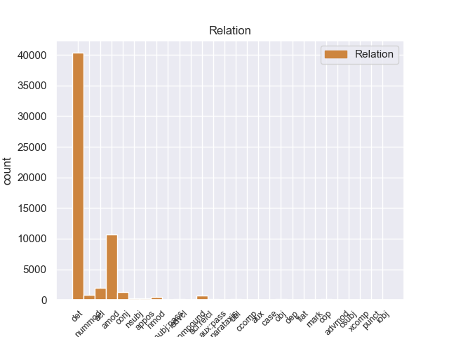
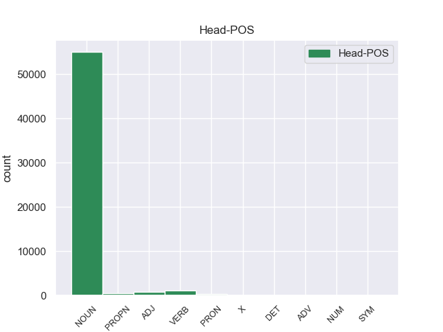
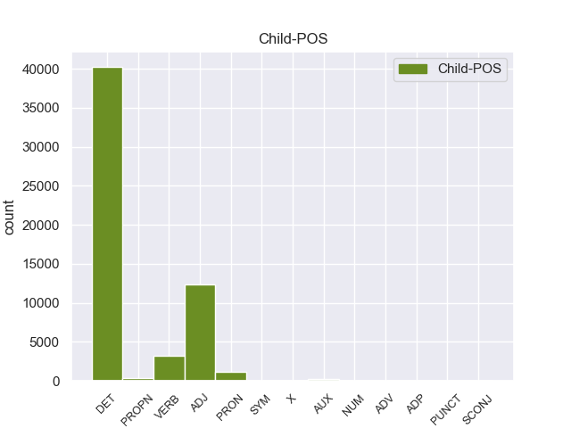

Distribution of features within this leaf



Agreement Rules sorted by frequency.
- When the dependent token is the determiner(det) of the head token, and the dependent token is DET.
1 En _ _ _ _ 0 _ _ _
2 1991 _ _ _ _ 0 _ _ _
3 , _ _ _ _ 0 _ _ _
4 como _ _ _ _ 0 _ _ _
5 ya _ _ _ _ 0 _ _ _
6 está _ _ _ _ 0 _ _ _
7 indicado _ _ _ _ 0 _ _ _
8 en _ _ _ _ 0 _ _ _
9 el _ _ _ _ 0 _ _ _
10 párrafo _ _ _ _ 0 _ _ _
11 anterior _ _ _ _ 0 _ _ _
12 , _ _ _ _ 0 _ _ _
13 se _ _ _ _ 0 _ _ _
14 creó _ _ _ _ 0 _ _ _
15 un _ _ _ _ 0 _ _ _
16 equipo _ _ _ _ 0 _ _ _
17 ad _ _ _ _ 0 _ _ _
18 hoc _ _ _ _ 0 _ _ _
19 para _ _ _ _ 0 _ _ _
20 averiguar _ _ _ _ 0 _ _ _
21 como _ _ _ _ 0 _ _ _
22 se _ _ _ _ 0 _ _ _
23 podía _ _ _ _ 0 _ _ _
24 desarrollar _ _ _ _ 0 _ _ _
25 el _ _ _ _ 0 _ _ _
26 Dialogo _ _ _ _ 0 _ _ _
27 Social _ _ _ _ 0 _ _ _
28 , _ _ _ _ 0 _ _ _
29 este _ _ _ _ 0 _ _ _
30 equipo _ _ _ _ 0 _ _ _
31 estaba _ _ _ _ 0 _ _ _
32 formado _ _ _ _ 0 _ _ _
33 por _ _ _ _ 0 _ _ _
34 representantes _ _ _ _ 0 _ _ _
35 de _ _ _ _ 0 _ _ _
36 todas _ _ _ _ 0 _ _ _
37 las el DET _ Definite=Def|Gender=Fem|Number=Plur|PronType=Art 38 det _ _
38 organizaciones organizacione NOUN _ Gender=Fem|Number=Plur 0 _ _ _
39 relacionadas _ _ _ _ 0 _ _ _
40 con _ _ _ _ 0 _ _ _
41 CES _ _ _ _ 0 _ _ _
42 , _ _ _ _ 0 _ _ _
43 UNICE _ _ _ _ 0 _ _ _
44 y _ _ _ _ 0 _ _ _
45 CEEP _ _ _ _ 0 _ _ _
46 ; _ _ _ _ 0 _ _ _
1 Esta _ _ _ _ 0 _ _ _
2 teoría _ _ _ _ 0 _ _ _
3 se _ _ _ _ 0 _ _ _
4 avenía _ _ _ _ 0 _ _ _
5 bien _ _ _ _ 0 _ _ _
6 con _ _ _ _ 0 _ _ _
7 la _ _ _ _ 0 _ _ _
8 creencia _ _ _ _ 0 _ _ _
9 de _ _ _ _ 0 _ _ _
10 el _ _ _ _ 0 _ _ _
11 Romanticismo _ _ _ _ 0 _ _ _
12 en _ _ _ _ 0 _ _ _
13 un _ _ _ _ 0 _ _ _
14 volkgeist _ _ _ _ 0 _ _ _
15 , _ _ _ _ 0 _ _ _
16 " _ _ _ _ 0 _ _ _
17 genio _ _ _ _ 0 _ _ _
18 o _ _ _ _ 0 _ _ _
19 espíritu _ _ _ _ 0 _ _ _
20 de _ _ _ _ 0 _ _ _
21 el _ _ _ _ 0 _ _ _
22 pueblo _ _ _ _ 0 _ _ _
23 " _ _ _ _ 0 _ _ _
24 , _ _ _ _ 0 _ _ _
25 autor autor NOUN _ Gender=Masc|Number=Sing 0 _ _ _
26 colectivo colectivo ADJ _ Gender=Masc|Number=Sing 25 amod _ _
27 y _ _ _ _ 0 _ _ _
28 anónimo _ _ _ _ 0 _ _ _
29 de _ _ _ _ 0 _ _ _
30 una _ _ _ _ 0 _ _ _
31 poesía _ _ _ _ 0 _ _ _
32 nacional _ _ _ _ 0 _ _ _
33 . _ _ _ _ 0 _ _ _
1 En _ _ _ _ 0 _ _ _
2 1991 _ _ _ _ 0 _ _ _
3 , _ _ _ _ 0 _ _ _
4 como _ _ _ _ 0 _ _ _
5 ya _ _ _ _ 0 _ _ _
6 está _ _ _ _ 0 _ _ _
7 indicado _ _ _ _ 0 _ _ _
8 en _ _ _ _ 0 _ _ _
9 el _ _ _ _ 0 _ _ _
10 párrafo _ _ _ _ 0 _ _ _
11 anterior _ _ _ _ 0 _ _ _
12 , _ _ _ _ 0 _ _ _
13 se _ _ _ _ 0 _ _ _
14 creó _ _ _ _ 0 _ _ _
15 un _ _ _ _ 0 _ _ _
16 equipo _ _ _ _ 0 _ _ _
17 ad _ _ _ _ 0 _ _ _
18 hoc _ _ _ _ 0 _ _ _
19 para _ _ _ _ 0 _ _ _
20 averiguar _ _ _ _ 0 _ _ _
21 como _ _ _ _ 0 _ _ _
22 se _ _ _ _ 0 _ _ _
23 podía _ _ _ _ 0 _ _ _
24 desarrollar _ _ _ _ 0 _ _ _
25 el _ _ _ _ 0 _ _ _
26 Dialogo _ _ _ _ 0 _ _ _
27 Social _ _ _ _ 0 _ _ _
28 , _ _ _ _ 0 _ _ _
29 este _ _ _ _ 0 _ _ _
30 equipo _ _ _ _ 0 _ _ _
31 estaba _ _ _ _ 0 _ _ _
32 formado _ _ _ _ 0 _ _ _
33 por _ _ _ _ 0 _ _ _
34 representantes _ _ _ _ 0 _ _ _
35 de _ _ _ _ 0 _ _ _
36 todas _ _ _ _ 0 _ _ _
37 las _ _ _ _ 0 _ _ _
38 organizaciones organizacione NOUN _ Gender=Fem|Number=Plur 0 _ _ _
39 relacionadas relacionado VERB _ Gender=Fem|Number=Sing|VerbForm=Part 38 acl _ _
40 con _ _ _ _ 0 _ _ _
41 CES _ _ _ _ 0 _ _ _
42 , _ _ _ _ 0 _ _ _
43 UNICE _ _ _ _ 0 _ _ _
44 y _ _ _ _ 0 _ _ _
45 CEEP _ _ _ _ 0 _ _ _
46 ; _ _ _ _ 0 _ _ _
1 Ahora _ _ _ _ 0 _ _ _
2 se _ _ _ _ 0 _ _ _
3 aunan _ _ _ _ 0 _ _ _
4 cocina _ _ _ _ 0 _ _ _
5 y _ _ _ _ 0 _ _ _
6 entorno _ _ _ _ 0 _ _ _
7 , _ _ _ _ 0 _ _ _
8 me _ _ _ _ 0 _ _ _
9 encanto _ _ _ _ 0 _ _ _
10 la _ _ _ _ 0 _ _ _
11 bodega _ _ _ _ 0 _ _ _
12 , _ _ _ _ 0 _ _ _
13 las _ _ _ _ 0 _ _ _
14 sillas _ _ _ _ 0 _ _ _
15 son _ _ _ _ 0 _ _ _
16 comodisimas _ _ _ _ 0 _ _ _
17 , _ _ _ _ 0 _ _ _
18 la _ _ _ _ 0 _ _ _
19 iluminacion _ _ _ _ 0 _ _ _
20 es _ _ _ _ 0 _ _ _
21 excepcional _ _ _ _ 0 _ _ _
22 , _ _ _ _ 0 _ _ _
23 alcanzas _ _ _ _ 0 _ _ _
24 un _ _ _ _ 0 _ _ _
25 grado _ _ _ _ 0 _ _ _
26 de _ _ _ _ 0 _ _ _
27 satisfaccion _ _ _ _ 0 _ _ _
28 que _ _ _ _ 0 _ _ _
29 no _ _ _ _ 0 _ _ _
30 se _ _ _ _ 0 _ _ _
31 puede _ _ _ _ 0 _ _ _
32 describir _ _ _ _ 0 _ _ _
33 , _ _ _ _ 0 _ _ _
34 hay _ _ _ _ 0 _ _ _
35 que _ _ _ _ 0 _ _ _
36 probar _ _ _ _ 0 _ _ _
37 lo _ _ _ _ 0 _ _ _
38 , _ _ _ _ 0 _ _ _
39 es _ _ _ _ 0 _ _ _
40 la _ _ _ _ 0 _ _ _
41 primera primero ADJ _ Gender=Fem|Number=Sing|NumType=Ord 42 nummod _ _
42 vez vez NOUN _ Gender=Fem|Number=Sing 0 _ _ _
43 en _ _ _ _ 0 _ _ _
44 mi _ _ _ _ 0 _ _ _
45 vda _ _ _ _ 0 _ _ _
46 que _ _ _ _ 0 _ _ _
47 una _ _ _ _ 0 _ _ _
48 cocina _ _ _ _ 0 _ _ _
49 me _ _ _ _ 0 _ _ _
50 emociona _ _ _ _ 0 _ _ _
51 hasta _ _ _ _ 0 _ _ _
52 ese _ _ _ _ 0 _ _ _
53 punto _ _ _ _ 0 _ _ _
54 . _ _ _ _ 0 _ _ _
1 Jazmin _ _ _ _ 0 _ _ _
2 es _ _ _ _ 0 _ _ _
3 todo _ _ _ _ 0 _ _ _
4 lo _ _ _ _ 0 _ _ _
5 contrario _ _ _ _ 0 _ _ _
6 , _ _ _ _ 0 _ _ _
7 es _ _ _ _ 0 _ _ _
8 tímida tímido ADJ _ Gender=Fem|Number=Sing 0 _ _ _
9 y _ _ _ _ 0 _ _ _
10 callada callado ADJ _ Gender=Fem|Number=Sing 8 conj _ _
11 , _ _ _ _ 0 _ _ _
12 pero _ _ _ _ 0 _ _ _
13 siempre _ _ _ _ 0 _ _ _
14 es _ _ _ _ 0 _ _ _
15 arrastrada _ _ _ _ 0 _ _ _
16 por _ _ _ _ 0 _ _ _
17 las _ _ _ _ 0 _ _ _
18 locuras _ _ _ _ 0 _ _ _
19 y _ _ _ _ 0 _ _ _
20 travesuras _ _ _ _ 0 _ _ _
21 que _ _ _ _ 0 _ _ _
22 inventa _ _ _ _ 0 _ _ _
23 Alma _ _ _ _ 0 _ _ _
24 . _ _ _ _ 0 _ _ _
1 Tahai _ _ _ _ 0 _ _ _
2 es _ _ _ _ 0 _ _ _
3 uno _ _ _ _ 0 _ _ _
4 de _ _ _ _ 0 _ _ _
5 los _ _ _ _ 0 _ _ _
6 lugares lugare NOUN _ Gender=Masc|Number=Plur 0 _ _ _
7 más _ _ _ _ 0 _ _ _
8 lindos _ _ _ _ 0 _ _ _
9 de _ _ _ _ 0 _ _ _
10 la _ _ _ _ 0 _ _ _
11 isla _ _ _ _ 0 _ _ _
12 , _ _ _ _ 0 _ _ _
13 y _ _ _ _ 0 _ _ _
14 estar _ _ _ _ 0 _ _ _
15 hospedado hospedado VERB _ Gender=Masc|Number=Sing|VerbForm=Part 6 acl:relcl _ _
16 en _ _ _ _ 0 _ _ _
17 pleno _ _ _ _ 0 _ _ _
18 mirador _ _ _ _ 0 _ _ _
19 es _ _ _ _ 0 _ _ _
20 increíble _ _ _ _ 0 _ _ _
21 . _ _ _ _ 0 _ _ _
1 Jazmin _ _ _ _ 0 _ _ _
2 es _ _ _ _ 0 _ _ _
3 todo _ _ _ _ 0 _ _ _
4 lo _ _ _ _ 0 _ _ _
5 contrario _ _ _ _ 0 _ _ _
6 , _ _ _ _ 0 _ _ _
7 es _ _ _ _ 0 _ _ _
8 tímida tímido ADJ _ Gender=Fem|Number=Sing 0 _ _ _
9 y _ _ _ _ 0 _ _ _
10 callada _ _ _ _ 0 _ _ _
11 , _ _ _ _ 0 _ _ _
12 pero _ _ _ _ 0 _ _ _
13 siempre _ _ _ _ 0 _ _ _
14 es _ _ _ _ 0 _ _ _
15 arrastrada arrastrado VERB _ Gender=Fem|Number=Sing|VerbForm=Part 8 conj _ _
16 por _ _ _ _ 0 _ _ _
17 las _ _ _ _ 0 _ _ _
18 locuras _ _ _ _ 0 _ _ _
19 y _ _ _ _ 0 _ _ _
20 travesuras _ _ _ _ 0 _ _ _
21 que _ _ _ _ 0 _ _ _
22 inventa _ _ _ _ 0 _ _ _
23 Alma _ _ _ _ 0 _ _ _
24 . _ _ _ _ 0 _ _ _
1 Jazmin _ _ _ _ 0 _ _ _
2 es _ _ _ _ 0 _ _ _
3 todo _ _ _ _ 0 _ _ _
4 lo él PRON _ Case=Acc|Gender=Masc|Number=Sing|Person=3|PrepCase=Npr|PronType=Prs 5 det _ _
5 contrario contrario NOUN _ Gender=Masc|Number=Sing 0 _ _ _
6 , _ _ _ _ 0 _ _ _
7 es _ _ _ _ 0 _ _ _
8 tímida _ _ _ _ 0 _ _ _
9 y _ _ _ _ 0 _ _ _
10 callada _ _ _ _ 0 _ _ _
11 , _ _ _ _ 0 _ _ _
12 pero _ _ _ _ 0 _ _ _
13 siempre _ _ _ _ 0 _ _ _
14 es _ _ _ _ 0 _ _ _
15 arrastrada _ _ _ _ 0 _ _ _
16 por _ _ _ _ 0 _ _ _
17 las _ _ _ _ 0 _ _ _
18 locuras _ _ _ _ 0 _ _ _
19 y _ _ _ _ 0 _ _ _
20 travesuras _ _ _ _ 0 _ _ _
21 que _ _ _ _ 0 _ _ _
22 inventa _ _ _ _ 0 _ _ _
23 Alma _ _ _ _ 0 _ _ _
24 . _ _ _ _ 0 _ _ _
1 A _ _ _ _ 0 _ _ _
2 continuación _ _ _ _ 0 _ _ _
3 , _ _ _ _ 0 _ _ _
4 sonarán _ _ _ _ 0 _ _ _
5 los _ _ _ _ 0 _ _ _
6 ritmos _ _ _ _ 0 _ _ _
7 más _ _ _ _ 0 _ _ _
8 intensos _ _ _ _ 0 _ _ _
9 de _ _ _ _ 0 _ _ _
10 los _ _ _ _ 0 _ _ _
11 llanos _ _ _ _ 0 _ _ _
12 interpretados _ _ _ _ 0 _ _ _
13 por _ _ _ _ 0 _ _ _
14 una _ _ _ _ 0 _ _ _
15 agrupación _ _ _ _ 0 _ _ _
16 que _ _ _ _ 0 _ _ _
17 romperá _ _ _ _ 0 _ _ _
18 esquemas _ _ _ _ 0 _ _ _
19 : _ _ _ _ 0 _ _ _
20 el _ _ _ _ 0 _ _ _
21 Ensamble _ _ _ _ 0 _ _ _
22 de _ _ _ _ 0 _ _ _
23 Arpas _ _ _ _ 0 _ _ _
24 de _ _ _ _ 0 _ _ _
25 la _ _ _ _ 0 _ _ _
26 Orquesta _ _ _ _ 0 _ _ _
27 de _ _ _ _ 0 _ _ _
28 Música _ _ _ _ 0 _ _ _
29 Popular _ _ _ _ 0 _ _ _
30 de _ _ _ _ 0 _ _ _
31 el _ _ _ _ 0 _ _ _
32 Estado _ _ _ _ 0 _ _ _
33 Guárico _ _ _ _ 0 _ _ _
34 , _ _ _ _ 0 _ _ _
35 integrado _ _ _ _ 0 _ _ _
36 por _ _ _ _ 0 _ _ _
37 14 _ _ _ _ 0 _ _ _
38 ejecutantes _ _ _ _ 0 _ _ _
39 , _ _ _ _ 0 _ _ _
40 todos _ _ _ _ 0 _ _ _
41 formados _ _ _ _ 0 _ _ _
42 por _ _ _ _ 0 _ _ _
43 El _ _ _ _ 0 _ _ _
44 Sistema _ _ _ _ 0 _ _ _
45 , _ _ _ _ 0 _ _ _
46 siendo _ _ _ _ 0 _ _ _
47 algunos _ _ _ _ 0 _ _ _
48 de _ _ _ _ 0 _ _ _
49 ellos él PRON _ Case=Acc,Nom|Gender=Masc|Number=Plur|Person=3|PronType=Prs 50 nmod _ _
50 ganadores ganadore NOUN _ Gender=Masc|Number=Plur 0 _ _ _
51 de _ _ _ _ 0 _ _ _
52 el _ _ _ _ 0 _ _ _
53 reconocido _ _ _ _ 0 _ _ _
54 Festival _ _ _ _ 0 _ _ _
55 Internacional _ _ _ _ 0 _ _ _
56 de _ _ _ _ 0 _ _ _
57 Arpas _ _ _ _ 0 _ _ _
58 Infantil _ _ _ _ 0 _ _ _
59 y _ _ _ _ 0 _ _ _
60 Adultos _ _ _ _ 0 _ _ _
61 de _ _ _ _ 0 _ _ _
62 Villavicencio _ _ _ _ 0 _ _ _
63 , _ _ _ _ 0 _ _ _
64 Colombia _ _ _ _ 0 _ _ _
65 . _ _ _ _ 0 _ _ _
1 Si _ _ _ _ 0 _ _ _
2 un _ _ _ _ 0 _ _ _
3 producto _ _ _ _ 0 _ _ _
4 destinado _ _ _ _ 0 _ _ _
5 a _ _ _ _ 0 _ _ _
6 durar _ _ _ _ 0 _ _ _
7 demasiado _ _ _ _ 0 _ _ _
8 , _ _ _ _ 0 _ _ _
9 una _ _ _ _ 0 _ _ _
10 vez _ _ _ _ 0 _ _ _
11 este este PRON _ Gender=Masc|Number=Sing|PronType=Dem 14 nsubj _ _
12 ya _ _ _ _ 0 _ _ _
13 ha _ _ _ _ 0 _ _ _
14 llegado llegar VERB _ Gender=Masc|Number=Sing|Tense=Past|VerbForm=Part 0 _ _ _
15 a _ _ _ _ 0 _ _ _
16 el _ _ _ _ 0 _ _ _
17 mercado _ _ _ _ 0 _ _ _
18 la _ _ _ _ 0 _ _ _
19 producción _ _ _ _ 0 _ _ _
20 puede _ _ _ _ 0 _ _ _
21 parar _ _ _ _ 0 _ _ _
22 hasta _ _ _ _ 0 _ _ _
23 que _ _ _ _ 0 _ _ _
24 no _ _ _ _ 0 _ _ _
25 vuelva _ _ _ _ 0 _ _ _
26 a _ _ _ _ 0 _ _ _
27 necesitar _ _ _ _ 0 _ _ _
28 se _ _ _ _ 0 _ _ _
29 y _ _ _ _ 0 _ _ _
30 esto _ _ _ _ 0 _ _ _
31 suponía _ _ _ _ 0 _ _ _
32 una _ _ _ _ 0 _ _ _
33 catástrofe _ _ _ _ 0 _ _ _
34 para _ _ _ _ 0 _ _ _
35 las _ _ _ _ 0 _ _ _
36 empresas _ _ _ _ 0 _ _ _
37 . _ _ _ _ 0 _ _ _
1 De _ _ _ _ 0 _ _ _
2 las _ _ _ _ 0 _ _ _
3 8 _ _ _ _ 0 _ _ _
4 porciones _ _ _ _ 0 _ _ _
5 , _ _ _ _ 0 _ _ _
6 cuatro _ _ _ _ 0 _ _ _
7 correspondieron _ _ _ _ 0 _ _ _
8 a _ _ _ _ 0 _ _ _
9 el _ _ _ _ 0 _ _ _
10 rey _ _ _ _ 0 _ _ _
11 , _ _ _ _ 0 _ _ _
12 una uno PRON _ Gender=Fem|Number=Sing|PronType=Ind 0 _ _ _
13 a _ _ _ _ 0 _ _ _
14 el _ _ _ _ 0 _ _ _
15 conde _ _ _ _ 0 _ _ _
16 de _ _ _ _ 0 _ _ _
17 el _ _ _ _ 0 _ _ _
18 Rosellón _ _ _ _ 0 _ _ _
19 Nuño _ _ _ _ 0 _ _ _
20 Sánchez _ _ _ _ 0 _ _ _
21 , _ _ _ _ 0 _ _ _
22 una uno PRON _ Gender=Fem|Number=Sing|PronType=Ind 12 conj _ _
23 a _ _ _ _ 0 _ _ _
24 el _ _ _ _ 0 _ _ _
25 obispo _ _ _ _ 0 _ _ _
26 de _ _ _ _ 0 _ _ _
27 Barcelona _ _ _ _ 0 _ _ _
28 Berenguer _ _ _ _ 0 _ _ _
29 de _ _ _ _ 0 _ _ _
30 Palou _ _ _ _ 0 _ _ _
31 , _ _ _ _ 0 _ _ _
32 una _ _ _ _ 0 _ _ _
33 a _ _ _ _ 0 _ _ _
34 el _ _ _ _ 0 _ _ _
35 Conde _ _ _ _ 0 _ _ _
36 de _ _ _ _ 0 _ _ _
37 Ampurias _ _ _ _ 0 _ _ _
38 y _ _ _ _ 0 _ _ _
39 finalmente _ _ _ _ 0 _ _ _
40 otra _ _ _ _ 0 _ _ _
41 a _ _ _ _ 0 _ _ _
42 el _ _ _ _ 0 _ _ _
43 vizconde _ _ _ _ 0 _ _ _
44 de _ _ _ _ 0 _ _ _
45 Bearn _ _ _ _ 0 _ _ _
46 . _ _ _ _ 0 _ _ _
1 En _ _ _ _ 0 _ _ _
2 estos _ _ _ _ 0 _ _ _
3 trabajos _ _ _ _ 0 _ _ _
4 se _ _ _ _ 0 _ _ _
5 pusieron _ _ _ _ 0 _ _ _
6 a _ _ _ _ 0 _ _ _
7 el _ _ _ _ 0 _ _ _
8 descubierto _ _ _ _ 0 _ _ _
9 25 _ _ _ _ 0 _ _ _
10 vanos _ _ _ _ 0 _ _ _
11 correspondientes _ _ _ _ 0 _ _ _
12 a _ _ _ _ 0 _ _ _
13 ventanas _ _ _ _ 0 _ _ _
14 saeteras _ _ _ _ 0 _ _ _
15 que _ _ _ _ 0 _ _ _
16 habían _ _ _ _ 0 _ _ _
17 sido ser AUX _ Gender=Masc|Number=Sing|Tense=Past|VerbForm=Part 18 aux:pass _ _
18 tapiadas tapiado VERB _ Gender=Masc|Number=Sing|Tense=Past|VerbForm=Part 0 _ _ _
19 en _ _ _ _ 0 _ _ _
20 los _ _ _ _ 0 _ _ _
21 siglos _ _ _ _ 0 _ _ _
22 anteriores _ _ _ _ 0 _ _ _
23 . _ _ _ _ 0 _ _ _
1 Con _ _ _ _ 0 _ _ _
2 miras _ _ _ _ 0 _ _ _
3 a _ _ _ _ 0 _ _ _
4 minimizar _ _ _ _ 0 _ _ _
5 cualquier _ _ _ _ 0 _ _ _
6 confusión _ _ _ _ 0 _ _ _
7 con _ _ _ _ 0 _ _ _
8 una _ _ _ _ 0 _ _ _
9 religión _ _ _ _ 0 _ _ _
10 , _ _ _ _ 0 _ _ _
11 el _ _ _ _ 0 _ _ _
12 uso _ _ _ _ 0 _ _ _
13 de _ _ _ _ 0 _ _ _
14 la _ _ _ _ 0 _ _ _
15 palabra _ _ _ _ 0 _ _ _
16 " _ _ _ _ 0 _ _ _
17 templo _ _ _ _ 0 _ _ _
18 " _ _ _ _ 0 _ _ _
19 para _ _ _ _ 0 _ _ _
20 describir _ _ _ _ 0 _ _ _
21 los _ _ _ _ 0 _ _ _
22 inmuebles _ _ _ _ 0 _ _ _
23 de _ _ _ _ 0 _ _ _
24 los _ _ _ _ 0 _ _ _
25 Shriners _ _ _ _ 0 _ _ _
26 ha _ _ _ _ 0 _ _ _
27 sido _ _ _ _ 0 _ _ _
28 reemplazado reemplazar VERB _ Gender=Masc|Number=Sing|Tense=Past|VerbForm=Part 0 _ _ _
29 por _ _ _ _ 0 _ _ _
30 la _ _ _ _ 0 _ _ _
31 frase _ _ _ _ 0 _ _ _
32 " _ _ _ _ 0 _ _ _
33 Centro _ _ _ _ 0 _ _ _
34 Shriner _ _ _ _ 0 _ _ _
35 " _ _ _ _ 0 _ _ _
36 , _ _ _ _ 0 _ _ _
37 aunque _ _ _ _ 0 _ _ _
38 en _ _ _ _ 0 _ _ _
39 capítulos _ _ _ _ 0 _ _ _
40 individuales _ _ _ _ 0 _ _ _
41 siguen _ _ _ _ 0 _ _ _
42 siendo _ _ _ _ 0 _ _ _
43 nombrados nombrado VERB _ Gender=Masc|Number=Plur|VerbForm=Part 28 advcl _ _
44 como _ _ _ _ 0 _ _ _
45 " _ _ _ _ 0 _ _ _
46 templos _ _ _ _ 0 _ _ _
47 " _ _ _ _ 0 _ _ _
48 . _ _ _ _ 0 _ _ _
1 Mientras _ _ _ _ 0 _ _ _
2 tanto tanto PRON _ Gender=Masc|Number=Sing 31 obl _ _
3 , _ _ _ _ 0 _ _ _
4 los _ _ _ _ 0 _ _ _
5 Los _ _ _ _ 0 _ _ _
6 Angeles _ _ _ _ 0 _ _ _
7 Lakers _ _ _ _ 0 _ _ _
8 , _ _ _ _ 0 _ _ _
9 que _ _ _ _ 0 _ _ _
10 habían _ _ _ _ 0 _ _ _
11 elegido _ _ _ _ 0 _ _ _
12 a _ _ _ _ 0 _ _ _
13 el _ _ _ _ 0 _ _ _
14 jugador _ _ _ _ 0 _ _ _
15 en _ _ _ _ 0 _ _ _
16 en _ _ _ _ 0 _ _ _
17 la _ _ _ _ 0 _ _ _
18 trigésimo _ _ _ _ 0 _ _ _
19 primera _ _ _ _ 0 _ _ _
20 posición _ _ _ _ 0 _ _ _
21 de _ _ _ _ 0 _ _ _
22 el _ _ _ _ 0 _ _ _
23 Draft _ _ _ _ 0 _ _ _
24 de _ _ _ _ 0 _ _ _
25 la _ _ _ _ 0 _ _ _
26 NBA _ _ _ _ 0 _ _ _
27 de _ _ _ _ 0 _ _ _
28 1973 _ _ _ _ 0 _ _ _
29 , _ _ _ _ 0 _ _ _
30 habían _ _ _ _ 0 _ _ _
31 traspasado traspasar VERB _ Gender=Masc|Number=Sing|Tense=Past|VerbForm=Part 0 _ _ _
32 sus _ _ _ _ 0 _ _ _
33 derechos _ _ _ _ 0 _ _ _
34 a _ _ _ _ 0 _ _ _
35 Cleveland _ _ _ _ 0 _ _ _
36 Cavaliers _ _ _ _ 0 _ _ _
37 a _ _ _ _ 0 _ _ _
38 cambio _ _ _ _ 0 _ _ _
39 de _ _ _ _ 0 _ _ _
40 una _ _ _ _ 0 _ _ _
41 futura _ _ _ _ 0 _ _ _
42 primera _ _ _ _ 0 _ _ _
43 ronda _ _ _ _ 0 _ _ _
44 de _ _ _ _ 0 _ _ _
45 el _ _ _ _ 0 _ _ _
46 draft _ _ _ _ 0 _ _ _
47 . _ _ _ _ 0 _ _ _
1 El _ _ _ _ 0 _ _ _
2 actual _ _ _ _ 0 _ _ _
3 escudo _ _ _ _ 0 _ _ _
4 está _ _ _ _ 0 _ _ _
5 formado _ _ _ _ 0 _ _ _
6 por _ _ _ _ 0 _ _ _
7 dos _ _ _ _ 0 _ _ _
8 círculos _ _ _ _ 0 _ _ _
9 concéntricos _ _ _ _ 0 _ _ _
10 con _ _ _ _ 0 _ _ _
11 la _ _ _ _ 0 _ _ _
12 leyenda _ _ _ _ 0 _ _ _
13 GIRONA _ _ _ _ 0 _ _ _
14 FC _ _ _ _ 0 _ _ _
15 en _ _ _ _ 0 _ _ _
16 blanco _ _ _ _ 0 _ _ _
17 sobre _ _ _ _ 0 _ _ _
18 fondo _ _ _ _ 0 _ _ _
19 rojo _ _ _ _ 0 _ _ _
20 , _ _ _ _ 0 _ _ _
21 el _ _ _ _ 0 _ _ _
22 círculo _ _ _ _ 0 _ _ _
23 interior _ _ _ _ 0 _ _ _
24 esta _ _ _ _ 0 _ _ _
25 cruzado _ _ _ _ 0 _ _ _
26 por _ _ _ _ 0 _ _ _
27 19 _ _ _ _ 0 _ _ _
28 franjas _ _ _ _ 0 _ _ _
29 , _ _ _ _ 0 _ _ _
30 10 _ _ _ _ 0 _ _ _
31 blancas _ _ _ _ 0 _ _ _
32 y _ _ _ _ 0 _ _ _
33 9 _ _ _ _ 0 _ _ _
34 rojas _ _ _ _ 0 _ _ _
35 portando _ _ _ _ 0 _ _ _
36 un _ _ _ _ 0 _ _ _
37 blasón _ _ _ _ 0 _ _ _
38 lonsanjado _ _ _ _ 0 _ _ _
39 de _ _ _ _ 0 _ _ _
40 oro _ _ _ _ 0 _ _ _
41 con _ _ _ _ 0 _ _ _
42 cuatro _ _ _ _ 0 _ _ _
43 palos _ _ _ _ 0 _ _ _
44 verticales _ _ _ _ 0 _ _ _
45 gules _ _ _ _ 0 _ _ _
46 y _ _ _ _ 0 _ _ _
47 escusón escusón NOUN _ Gender=Masc|Number=Sing 0 _ _ _
48 central _ _ _ _ 0 _ _ _
49 cuadrilongo _ _ _ _ 0 _ _ _
50 ibérico _ _ _ _ 0 _ _ _
51 verado verado ADJ _ Gender=Masc|Number=Sing|VerbForm=Part 47 acl _ _
52 de _ _ _ _ 0 _ _ _
53 ondas _ _ _ _ 0 _ _ _
54 rojas _ _ _ _ 0 _ _ _
55 y _ _ _ _ 0 _ _ _
56 blancas _ _ _ _ 0 _ _ _
57 . _ _ _ _ 0 _ _ _
1 Covada _ _ _ _ 0 _ _ _
2 ( _ _ _ _ 0 _ _ _
3 de _ _ _ _ 0 _ _ _
4 el _ _ _ _ 0 _ _ _
5 francés francés NOUN _ Gender=Masc|Number=Sing 0 _ _ _
6 couver couver PROPN _ Gender=Masc|Number=Sing 5 appos _ _
7 ' _ _ _ _ 0 _ _ _
8 incubar _ _ _ _ 0 _ _ _
9 ' _ _ _ _ 0 _ _ _
10 ) _ _ _ _ 0 _ _ _
11 , _ _ _ _ 0 _ _ _
12 costumbre _ _ _ _ 0 _ _ _
13 por _ _ _ _ 0 _ _ _
14 la _ _ _ _ 0 _ _ _
15 que _ _ _ _ 0 _ _ _
16 la _ _ _ _ 0 _ _ _
17 madre _ _ _ _ 0 _ _ _
18 , _ _ _ _ 0 _ _ _
19 durante _ _ _ _ 0 _ _ _
20 el _ _ _ _ 0 _ _ _
21 nacimiento _ _ _ _ 0 _ _ _
22 de _ _ _ _ 0 _ _ _
23 un _ _ _ _ 0 _ _ _
24 hijo _ _ _ _ 0 _ _ _
25 o _ _ _ _ 0 _ _ _
26 inmediatamente _ _ _ _ 0 _ _ _
27 después _ _ _ _ 0 _ _ _
28 , _ _ _ _ 0 _ _ _
29 le _ _ _ _ 0 _ _ _
30 cede _ _ _ _ 0 _ _ _
31 el _ _ _ _ 0 _ _ _
32 lecho _ _ _ _ 0 _ _ _
33 a _ _ _ _ 0 _ _ _
34 el _ _ _ _ 0 _ _ _
35 padre _ _ _ _ 0 _ _ _
36 . _ _ _ _ 0 _ _ _
1 De _ _ _ _ 0 _ _ _
2 la _ _ _ _ 0 _ _ _
3 Vega _ _ _ _ 0 _ _ _
4 ha _ _ _ _ 0 _ _ _
5 pedido _ _ _ _ 0 _ _ _
6 respetar _ _ _ _ 0 _ _ _
7 los _ _ _ _ 0 _ _ _
8 tiempos _ _ _ _ 0 _ _ _
9 de _ _ _ _ 0 _ _ _
10 los _ _ _ _ 0 _ _ _
11 procesos _ _ _ _ 0 _ _ _
12 y _ _ _ _ 0 _ _ _
13 de _ _ _ _ 0 _ _ _
14 la _ _ _ _ 0 _ _ _
15 misma _ _ _ _ 0 _ _ _
16 manera _ _ _ _ 0 _ _ _
17 que _ _ _ _ 0 _ _ _
18 no _ _ _ _ 0 _ _ _
19 ha _ _ _ _ 0 _ _ _
20 querido _ _ _ _ 0 _ _ _
21 entrar _ _ _ _ 0 _ _ _
22 en _ _ _ _ 0 _ _ _
23 la _ _ _ _ 0 _ _ _
24 salida _ _ _ _ 0 _ _ _
25 de _ _ _ _ 0 _ _ _
26 Corbacho _ _ _ _ 0 _ _ _
27 , _ _ _ _ 0 _ _ _
28 tampoco _ _ _ _ 0 _ _ _
29 lo él PRON _ Case=Acc|Gender=Masc|Number=Sing|Person=3|PrepCase=Npr|PronType=Prs 31 obj _ _
30 ha _ _ _ _ 0 _ _ _
31 hecho hecr VERB _ Gender=Masc|Number=Sing|Tense=Past|VerbForm=Part 0 _ _ _
32 la _ _ _ _ 0 _ _ _
33 posible _ _ _ _ 0 _ _ _
34 salida _ _ _ _ 0 _ _ _
35 de _ _ _ _ 0 _ _ _
36 Trinidad _ _ _ _ 0 _ _ _
37 Jiménez _ _ _ _ 0 _ _ _
38 , _ _ _ _ 0 _ _ _
39 que _ _ _ _ 0 _ _ _
40 le _ _ _ _ 0 _ _ _
41 acompañaba _ _ _ _ 0 _ _ _
42 en _ _ _ _ 0 _ _ _
43 la _ _ _ _ 0 _ _ _
44 sala _ _ _ _ 0 _ _ _
45 de _ _ _ _ 0 _ _ _
46 prensa _ _ _ _ 0 _ _ _
47 . _ _ _ _ 0 _ _ _
1 A _ _ _ _ 0 _ _ _
2 continuación _ _ _ _ 0 _ _ _
3 , _ _ _ _ 0 _ _ _
4 sonarán _ _ _ _ 0 _ _ _
5 los _ _ _ _ 0 _ _ _
6 ritmos _ _ _ _ 0 _ _ _
7 más _ _ _ _ 0 _ _ _
8 intensos _ _ _ _ 0 _ _ _
9 de _ _ _ _ 0 _ _ _
10 los _ _ _ _ 0 _ _ _
11 llanos _ _ _ _ 0 _ _ _
12 interpretados _ _ _ _ 0 _ _ _
13 por _ _ _ _ 0 _ _ _
14 una _ _ _ _ 0 _ _ _
15 agrupación _ _ _ _ 0 _ _ _
16 que _ _ _ _ 0 _ _ _
17 romperá _ _ _ _ 0 _ _ _
18 esquemas _ _ _ _ 0 _ _ _
19 : _ _ _ _ 0 _ _ _
20 el _ _ _ _ 0 _ _ _
21 Ensamble _ _ _ _ 0 _ _ _
22 de _ _ _ _ 0 _ _ _
23 Arpas _ _ _ _ 0 _ _ _
24 de _ _ _ _ 0 _ _ _
25 la _ _ _ _ 0 _ _ _
26 Orquesta _ _ _ _ 0 _ _ _
27 de _ _ _ _ 0 _ _ _
28 Música _ _ _ _ 0 _ _ _
29 Popular _ _ _ _ 0 _ _ _
30 de _ _ _ _ 0 _ _ _
31 el _ _ _ _ 0 _ _ _
32 Estado _ _ _ _ 0 _ _ _
33 Guárico _ _ _ _ 0 _ _ _
34 , _ _ _ _ 0 _ _ _
35 integrado _ _ _ _ 0 _ _ _
36 por _ _ _ _ 0 _ _ _
37 14 _ _ _ _ 0 _ _ _
38 ejecutantes ejecutante NOUN _ Gender=Masc|Number=Plur 0 _ _ _
39 , _ _ _ _ 0 _ _ _
40 todos todo PRON _ Gender=Masc|Number=Plur|PronType=Tot 38 appos _ _
41 formados _ _ _ _ 0 _ _ _
42 por _ _ _ _ 0 _ _ _
43 El _ _ _ _ 0 _ _ _
44 Sistema _ _ _ _ 0 _ _ _
45 , _ _ _ _ 0 _ _ _
46 siendo _ _ _ _ 0 _ _ _
47 algunos _ _ _ _ 0 _ _ _
48 de _ _ _ _ 0 _ _ _
49 ellos _ _ _ _ 0 _ _ _
50 ganadores _ _ _ _ 0 _ _ _
51 de _ _ _ _ 0 _ _ _
52 el _ _ _ _ 0 _ _ _
53 reconocido _ _ _ _ 0 _ _ _
54 Festival _ _ _ _ 0 _ _ _
55 Internacional _ _ _ _ 0 _ _ _
56 de _ _ _ _ 0 _ _ _
57 Arpas _ _ _ _ 0 _ _ _
58 Infantil _ _ _ _ 0 _ _ _
59 y _ _ _ _ 0 _ _ _
60 Adultos _ _ _ _ 0 _ _ _
61 de _ _ _ _ 0 _ _ _
62 Villavicencio _ _ _ _ 0 _ _ _
63 , _ _ _ _ 0 _ _ _
64 Colombia _ _ _ _ 0 _ _ _
65 . _ _ _ _ 0 _ _ _
1 El _ _ _ _ 0 _ _ _
2 Condado condado PROPN _ Gender=Masc|Number=Sing 9 nsubj _ _
3 de _ _ _ _ 0 _ _ _
4 Orange _ _ _ _ 0 _ _ _
5 ( _ _ _ _ 0 _ _ _
6 Texas _ _ _ _ 0 _ _ _
7 ) _ _ _ _ 0 _ _ _
8 es _ _ _ _ 0 _ _ _
9 uno uno PRON _ Gender=Masc|Number=Sing|PronType=Ind 0 _ _ _
10 de _ _ _ _ 0 _ _ _
11 los _ _ _ _ 0 _ _ _
12 254 _ _ _ _ 0 _ _ _
13 condados _ _ _ _ 0 _ _ _
14 de _ _ _ _ 0 _ _ _
15 el _ _ _ _ 0 _ _ _
16 Estado _ _ _ _ 0 _ _ _
17 estadounidense _ _ _ _ 0 _ _ _
18 de _ _ _ _ 0 _ _ _
19 Texas _ _ _ _ 0 _ _ _
20 . _ _ _ _ 0 _ _ _
1 Y _ _ _ _ 0 _ _ _
2 la _ _ _ _ 0 _ _ _
3 sorpresa _ _ _ _ 0 _ _ _
4 continúa _ _ _ _ 0 _ _ _
5 hoy _ _ _ _ 0 _ _ _
6 cuando _ _ _ _ 0 _ _ _
7 luego _ _ _ _ 0 _ _ _
8 de _ _ _ _ 0 _ _ _
9 haber haber AUX _ Gender=Masc|Number=Sing|VerbForm=Fin 10 aux _ _
10 pasado pasar VERB _ Gender=Masc|Number=Sing|Tense=Past|VerbForm=Part 0 _ _ _
11 por _ _ _ _ 0 _ _ _
12 el _ _ _ _ 0 _ _ _
13 Museo _ _ _ _ 0 _ _ _
14 de _ _ _ _ 0 _ _ _
15 el _ _ _ _ 0 _ _ _
16 Automóvil _ _ _ _ 0 _ _ _
17 " _ _ _ _ 0 _ _ _
18 Juan _ _ _ _ 0 _ _ _
19 Manuel _ _ _ _ 0 _ _ _
20 Fangio _ _ _ _ 0 _ _ _
21 " _ _ _ _ 0 _ _ _
22 , _ _ _ _ 0 _ _ _
23 de _ _ _ _ 0 _ _ _
24 Balcarce _ _ _ _ 0 _ _ _
25 , _ _ _ _ 0 _ _ _
26 continúa _ _ _ _ 0 _ _ _
27 haciéndo _ _ _ _ 0 _ _ _
28 lo _ _ _ _ 0 _ _ _
29 en _ _ _ _ 0 _ _ _
30 Campana _ _ _ _ 0 _ _ _
31 , _ _ _ _ 0 _ _ _
32 a _ _ _ _ 0 _ _ _
33 el _ _ _ _ 0 _ _ _
34 desfilar _ _ _ _ 0 _ _ _
35 en _ _ _ _ 0 _ _ _
36 algunos _ _ _ _ 0 _ _ _
37 actos _ _ _ _ 0 _ _ _
38 , _ _ _ _ 0 _ _ _
39 en _ _ _ _ 0 _ _ _
40 los _ _ _ _ 0 _ _ _
41 que _ _ _ _ 0 _ _ _
42 muestra _ _ _ _ 0 _ _ _
43 su _ _ _ _ 0 _ _ _
44 vitalidad _ _ _ _ 0 _ _ _
45 de _ _ _ _ 0 _ _ _
46 casi _ _ _ _ 0 _ _ _
47 100 _ _ _ _ 0 _ _ _
48 años _ _ _ _ 0 _ _ _
49 . _ _ _ _ 0 _ _ _
1 Está _ _ _ _ 0 _ _ _
2 considerado considerado VERB _ Gender=Masc|Number=Sing|Tense=Past|VerbForm=Part 7 cop _ _
3 uno _ _ _ _ 0 _ _ _
4 de _ _ _ _ 0 _ _ _
5 los _ _ _ _ 0 _ _ _
6 mejores _ _ _ _ 0 _ _ _
7 jugadores jugadore NOUN _ Gender=Masc|Number=Plur 0 _ _ _
8 de _ _ _ _ 0 _ _ _
9 la _ _ _ _ 0 _ _ _
10 historia _ _ _ _ 0 _ _ _
11 de _ _ _ _ 0 _ _ _
12 Dinamarca _ _ _ _ 0 _ _ _
13 , _ _ _ _ 0 _ _ _
14 junto _ _ _ _ 0 _ _ _
15 a _ _ _ _ 0 _ _ _
16 otras _ _ _ _ 0 _ _ _
17 grandes _ _ _ _ 0 _ _ _
18 estrellas _ _ _ _ 0 _ _ _
19 como _ _ _ _ 0 _ _ _
20 Michael _ _ _ _ 0 _ _ _
21 Laudrup _ _ _ _ 0 _ _ _
22 , _ _ _ _ 0 _ _ _
23 Peter _ _ _ _ 0 _ _ _
24 Schmeichel _ _ _ _ 0 _ _ _
25 o _ _ _ _ 0 _ _ _
26 Allan _ _ _ _ 0 _ _ _
27 Simonsen _ _ _ _ 0 _ _ _
28 . _ _ _ _ 0 _ _ _
1 Una _ _ _ _ 0 _ _ _
2 posibilidad posibilidad NOUN _ Gender=Fem|Number=Sing 0 _ _ _
3 que _ _ _ _ 0 _ _ _
4 tiene _ _ _ _ 0 _ _ _
5 esta _ _ _ _ 0 _ _ _
6 habitación _ _ _ _ 0 _ _ _
7 gracias _ _ _ _ 0 _ _ _
8 a _ _ _ _ 0 _ _ _
9 que _ _ _ _ 0 _ _ _
10 es _ _ _ _ 0 _ _ _
11 menos _ _ _ _ 0 _ _ _
12 ruidosa ruidoso ADJ _ Gender=Fem|Number=Sing 2 acl:relcl _ _
13 por _ _ _ _ 0 _ _ _
14 encontrar _ _ _ _ 0 _ _ _
15 se _ _ _ _ 0 _ _ _
16 alejada _ _ _ _ 0 _ _ _
17 de _ _ _ _ 0 _ _ _
18 el _ _ _ _ 0 _ _ _
19 resto _ _ _ _ 0 _ _ _
20 de _ _ _ _ 0 _ _ _
21 cuartos _ _ _ _ 0 _ _ _
22 , _ _ _ _ 0 _ _ _
23 es _ _ _ _ 0 _ _ _
24 la _ _ _ _ 0 _ _ _
25 de _ _ _ _ 0 _ _ _
26 convertir _ _ _ _ 0 _ _ _
27 la _ _ _ _ 0 _ _ _
28 en _ _ _ _ 0 _ _ _
29 un _ _ _ _ 0 _ _ _
30 estudio _ _ _ _ 0 _ _ _
31 . _ _ _ _ 0 _ _ _
1 Es _ _ _ _ 0 _ _ _
2 frecuente _ _ _ _ 0 _ _ _
3 que _ _ _ _ 0 _ _ _
4 el _ _ _ _ 0 _ _ _
5 café _ _ _ _ 0 _ _ _
6 sea _ _ _ _ 0 _ _ _
7 torrefacto _ _ _ _ 0 _ _ _
8 , _ _ _ _ 0 _ _ _
9 y _ _ _ _ 0 _ _ _
10 puede _ _ _ _ 0 _ _ _
11 servir _ _ _ _ 0 _ _ _
12 se _ _ _ _ 0 _ _ _
13 sin _ _ _ _ 0 _ _ _
14 leche _ _ _ _ 0 _ _ _
15 ( _ _ _ _ 0 _ _ _
16 solo _ _ _ _ 0 _ _ _
17 ) _ _ _ _ 0 _ _ _
18 , _ _ _ _ 0 _ _ _
19 con _ _ _ _ 0 _ _ _
20 una _ _ _ _ 0 _ _ _
21 porción _ _ _ _ 0 _ _ _
22 de _ _ _ _ 0 _ _ _
23 leche _ _ _ _ 0 _ _ _
24 ( _ _ _ _ 0 _ _ _
25 cortado _ _ _ _ 0 _ _ _
26 ) _ _ _ _ 0 _ _ _
27 , _ _ _ _ 0 _ _ _
28 con _ _ _ _ 0 _ _ _
29 leche _ _ _ _ 0 _ _ _
30 , _ _ _ _ 0 _ _ _
31 y _ _ _ _ 0 _ _ _
32 con _ _ _ _ 0 _ _ _
33 bastante _ _ _ _ 0 _ _ _
34 café _ _ _ _ 0 _ _ _
35 y _ _ _ _ 0 _ _ _
36 poca _ _ _ _ 0 _ _ _
37 proporción _ _ _ _ 0 _ _ _
38 de _ _ _ _ 0 _ _ _
39 leche leche NOUN _ Gender=Masc|Number=Sing 0 _ _ _
40 ( _ _ _ _ 0 _ _ _
41 largo largo ADJ _ Gender=Masc|Number=Sing 39 appos _ _
42 de _ _ _ _ 0 _ _ _
43 café _ _ _ _ 0 _ _ _
44 ) _ _ _ _ 0 _ _ _
45 . _ _ _ _ 0 _ _ _
1 La _ _ _ _ 0 _ _ _
2 Primera primero PROPN _ Gender=Fem|Number=Sing|NumType=Ord 3 nummod _ _
3 División división PROPN _ Gender=Fem|Number=Sing 0 _ _ _
4 Blindada _ _ _ _ 0 _ _ _
5 polaca _ _ _ _ 0 _ _ _
6 se _ _ _ _ 0 _ _ _
7 encaminó _ _ _ _ 0 _ _ _
8 hacia _ _ _ _ 0 _ _ _
9 la _ _ _ _ 0 _ _ _
10 frontera _ _ _ _ 0 _ _ _
11 belga _ _ _ _ 0 _ _ _
12 - _ _ _ _ 0 _ _ _
13 neerlandesa _ _ _ _ 0 _ _ _
14 más _ _ _ _ 0 _ _ _
15 a _ _ _ _ 0 _ _ _
16 el _ _ _ _ 0 _ _ _
17 este _ _ _ _ 0 _ _ _
18 y _ _ _ _ 0 _ _ _
19 la _ _ _ _ 0 _ _ _
20 zona _ _ _ _ 0 _ _ _
21 crucial _ _ _ _ 0 _ _ _
22 a _ _ _ _ 0 _ _ _
23 el _ _ _ _ 0 _ _ _
24 norte _ _ _ _ 0 _ _ _
25 de _ _ _ _ 0 _ _ _
26 Amberes _ _ _ _ 0 _ _ _
27 . _ _ _ _ 0 _ _ _
1 Don _ _ _ _ 0 _ _ _
2 Diego _ _ _ _ 0 _ _ _
3 de _ _ _ _ 0 _ _ _
4 Montemayor _ _ _ _ 0 _ _ _
5 es _ _ _ _ 0 _ _ _
6 considerado _ _ _ _ 0 _ _ _
7 uno _ _ _ _ 0 _ _ _
8 de _ _ _ _ 0 _ _ _
9 los _ _ _ _ 0 _ _ _
10 padres _ _ _ _ 0 _ _ _
11 de _ _ _ _ 0 _ _ _
12 Nuevo _ _ _ _ 0 _ _ _
13 León _ _ _ _ 0 _ _ _
14 , _ _ _ _ 0 _ _ _
15 no _ _ _ _ 0 _ _ _
16 solo _ _ _ _ 0 _ _ _
17 por _ _ _ _ 0 _ _ _
18 haber _ _ _ _ 0 _ _ _
19 sido ser AUX _ Gender=Masc|Number=Sing|Tense=Past|VerbForm=Part 20 cop _ _
20 uno uno PRON _ Gender=Masc|Number=Sing|PronType=Ind 0 _ _ _
21 de _ _ _ _ 0 _ _ _
22 los _ _ _ _ 0 _ _ _
23 primeros _ _ _ _ 0 _ _ _
24 gobernadores _ _ _ _ 0 _ _ _
25 de _ _ _ _ 0 _ _ _
26 el _ _ _ _ 0 _ _ _
27 Nuevo _ _ _ _ 0 _ _ _
28 Reino _ _ _ _ 0 _ _ _
29 de _ _ _ _ 0 _ _ _
30 León _ _ _ _ 0 _ _ _
31 , _ _ _ _ 0 _ _ _
32 sino _ _ _ _ 0 _ _ _
33 que _ _ _ _ 0 _ _ _
34 habiéndo _ _ _ _ 0 _ _ _
35 se _ _ _ _ 0 _ _ _
36 asentado _ _ _ _ 0 _ _ _
37 en _ _ _ _ 0 _ _ _
38 esa _ _ _ _ 0 _ _ _
39 ciudad _ _ _ _ 0 _ _ _
40 , _ _ _ _ 0 _ _ _
41 dejó _ _ _ _ 0 _ _ _
42 su _ _ _ _ 0 _ _ _
43 descendencia _ _ _ _ 0 _ _ _
44 en _ _ _ _ 0 _ _ _
45 esas _ _ _ _ 0 _ _ _
46 tierras _ _ _ _ 0 _ _ _
47 norteñas _ _ _ _ 0 _ _ _
48 . _ _ _ _ 0 _ _ _
1 Los _ _ _ _ 0 _ _ _
2 últimos _ _ _ _ 0 _ _ _
3 campeones _ _ _ _ 0 _ _ _
4 olímpicos _ _ _ _ 0 _ _ _
5 que _ _ _ _ 0 _ _ _
6 tuvo _ _ _ _ 0 _ _ _
7 la _ _ _ _ 0 _ _ _
8 Argentina _ _ _ _ 0 _ _ _
9 fueron _ _ _ _ 0 _ _ _
10 dos _ _ _ _ 0 _ _ _
11 remeros _ _ _ _ 0 _ _ _
12 : _ _ _ _ 0 _ _ _
13 Tranquilo _ _ _ _ 0 _ _ _
14 Capozzo _ _ _ _ 0 _ _ _
15 ( _ _ _ _ 0 _ _ _
16 perteneciente _ _ _ _ 0 _ _ _
17 a _ _ _ _ 0 _ _ _
18 el _ _ _ _ 0 _ _ _
19 Club _ _ _ _ 0 _ _ _
20 Canottieri _ _ _ _ 0 _ _ _
21 Italiani _ _ _ _ 0 _ _ _
22 ) _ _ _ _ 0 _ _ _
23 y _ _ _ _ 0 _ _ _
24 Eduardo _ _ _ _ 0 _ _ _
25 Guerrero _ _ _ _ 0 _ _ _
26 ( _ _ _ _ 0 _ _ _
27 este _ _ _ _ 0 _ _ _
28 último _ _ _ _ 0 _ _ _
29 perteneciente _ _ _ _ 0 _ _ _
30 a _ _ _ _ 0 _ _ _
31 el _ _ _ _ 0 _ _ _
32 Club _ _ _ _ 0 _ _ _
33 de _ _ _ _ 0 _ _ _
34 Regatas _ _ _ _ 0 _ _ _
35 La _ _ _ _ 0 _ _ _
36 Marina _ _ _ _ 0 _ _ _
37 ) _ _ _ _ 0 _ _ _
38 que _ _ _ _ 0 _ _ _
39 ganaron _ _ _ _ 0 _ _ _
40 una _ _ _ _ 0 _ _ _
41 medalla _ _ _ _ 0 _ _ _
42 de _ _ _ _ 0 _ _ _
43 oro _ _ _ _ 0 _ _ _
44 en _ _ _ _ 0 _ _ _
45 los _ _ _ _ 0 _ _ _
46 Juegos juego PROPN _ Gender=Masc|Number=Plur 0 _ _ _
47 Olímpicos olímpico PROPN _ Gender=Masc|Number=Plur 46 amod _ _
48 de _ _ _ _ 0 _ _ _
49 Helsinki _ _ _ _ 0 _ _ _
50 1952 _ _ _ _ 0 _ _ _
51 . _ _ _ _ 0 _ _ _
1 Una uno PRON _ Gender=Fem|Number=Sing|PronType=Ind 10 nsubj:pass _ _
2 de _ _ _ _ 0 _ _ _
3 las _ _ _ _ 0 _ _ _
4 escenas _ _ _ _ 0 _ _ _
5 preliminares _ _ _ _ 0 _ _ _
6 de _ _ _ _ 0 _ _ _
7 este _ _ _ _ 0 _ _ _
8 vídeo _ _ _ _ 0 _ _ _
9 fue _ _ _ _ 0 _ _ _
10 filtrado filtrar VERB _ Gender=Fem|Number=Sing|Tense=Past|VerbForm=Part 0 _ _ _
11 a _ _ _ _ 0 _ _ _
12 el _ _ _ _ 0 _ _ _
13 público _ _ _ _ 0 _ _ _
14 . _ _ _ _ 0 _ _ _
1 Un _ _ _ _ 0 _ _ _
2 buen _ _ _ _ 0 _ _ _
3 almacén _ _ _ _ 0 _ _ _
4 de _ _ _ _ 0 _ _ _
5 maderas _ _ _ _ 0 _ _ _
6 con _ _ _ _ 0 _ _ _
7 mucha mucha DET _ Gender=Fem|Number=Sing|NumType=Card|PronType=Ind 8 amod _ _
8 variedad variedad NOUN _ Gender=Fem|Number=Sing 0 _ _ _
9 y _ _ _ _ 0 _ _ _
10 muy _ _ _ _ 0 _ _ _
11 bien _ _ _ _ 0 _ _ _
12 atendido _ _ _ _ 0 _ _ _
13 . _ _ _ _ 0 _ _ _
1 Með _ _ _ _ 0 _ _ _
2 suð suð NOUN _ Gender=Masc|Number=Sing 0 _ _ _
3 í _ _ _ _ 0 _ _ _
4 eyrum _ _ _ _ 0 _ _ _
5 við _ _ _ _ 0 _ _ _
6 spilum spilum PROPN _ Gender=Masc|Number=Sing 2 nmod _ _
7 endalaust _ _ _ _ 0 _ _ _
8 ( _ _ _ _ 0 _ _ _
9 IPA _ _ _ _ 0 _ _ _
10 : _ _ _ _ 0 _ _ _
11 ) _ _ _ _ 0 _ _ _
12 , _ _ _ _ 0 _ _ _
13 ( _ _ _ _ 0 _ _ _
14 en _ _ _ _ 0 _ _ _
15 español _ _ _ _ 0 _ _ _
16 : _ _ _ _ 0 _ _ _
17 " _ _ _ _ 0 _ _ _
18 Con _ _ _ _ 0 _ _ _
19 un _ _ _ _ 0 _ _ _
20 zumbido _ _ _ _ 0 _ _ _
21 en _ _ _ _ 0 _ _ _
22 nuestros _ _ _ _ 0 _ _ _
23 oídos _ _ _ _ 0 _ _ _
24 tocamos _ _ _ _ 0 _ _ _
25 eternamente _ _ _ _ 0 _ _ _
26 " _ _ _ _ 0 _ _ _
27 ) _ _ _ _ 0 _ _ _
28 , _ _ _ _ 0 _ _ _
29 es _ _ _ _ 0 _ _ _
30 el _ _ _ _ 0 _ _ _
31 quinto _ _ _ _ 0 _ _ _
32 álbum _ _ _ _ 0 _ _ _
33 de _ _ _ _ 0 _ _ _
34 estudio _ _ _ _ 0 _ _ _
35 de _ _ _ _ 0 _ _ _
36 la _ _ _ _ 0 _ _ _
37 banda _ _ _ _ 0 _ _ _
38 islandesa _ _ _ _ 0 _ _ _
39 Sigur _ _ _ _ 0 _ _ _
40 Rós _ _ _ _ 0 _ _ _
41 , _ _ _ _ 0 _ _ _
42 lanzado _ _ _ _ 0 _ _ _
43 el _ _ _ _ 0 _ _ _
44 23 _ _ _ _ 0 _ _ _
45 de _ _ _ _ 0 _ _ _
46 junio _ _ _ _ 0 _ _ _
47 de _ _ _ _ 0 _ _ _
48 2008 _ _ _ _ 0 _ _ _
49 . _ _ _ _ 0 _ _ _
1 Goatse.cx _ _ _ _ 0 _ _ _
2 o _ _ _ _ 0 _ _ _
3 Goatse.da.ru _ _ _ _ 0 _ _ _
4 ( _ _ _ _ 0 _ _ _
5 pronunciado _ _ _ _ 0 _ _ _
6 de _ _ _ _ 0 _ _ _
7 varias _ _ _ _ 0 _ _ _
8 maneras _ _ _ _ 0 _ _ _
9 en _ _ _ _ 0 _ _ _
10 inglés _ _ _ _ 0 _ _ _
11 : _ _ _ _ 0 _ _ _
12 " _ _ _ _ 0 _ _ _
13 goat goat NOUN _ Gender=Masc|Number=Sing 0 _ _ _
14 see _ _ _ _ 0 _ _ _
15 , _ _ _ _ 0 _ _ _
16 " _ _ _ _ 0 _ _ _
17 " _ _ _ _ 0 _ _ _
18 goat _ _ _ _ 0 _ _ _
19 seh _ _ _ _ 0 _ _ _
20 , _ _ _ _ 0 _ _ _
21 " _ _ _ _ 0 _ _ _
22 " _ _ _ _ 0 _ _ _
23 goats _ _ _ _ 0 _ _ _
24 , _ _ _ _ 0 _ _ _
25 " _ _ _ _ 0 _ _ _
26 " _ _ _ _ 0 _ _ _
27 goatsex goatsex PROPN _ Gender=Masc|Number=Sing 13 conj _ _
28 , _ _ _ _ 0 _ _ _
29 " _ _ _ _ 0 _ _ _
30 " _ _ _ _ 0 _ _ _
31 goat _ _ _ _ 0 _ _ _
32 say _ _ _ _ 0 _ _ _
33 " _ _ _ _ 0 _ _ _
34 , _ _ _ _ 0 _ _ _
35 o _ _ _ _ 0 _ _ _
36 " _ _ _ _ 0 _ _ _
37 goat _ _ _ _ 0 _ _ _
38 see _ _ _ _ 0 _ _ _
39 dot _ _ _ _ 0 _ _ _
40 cx _ _ _ _ 0 _ _ _
41 " _ _ _ _ 0 _ _ _
42 ) _ _ _ _ 0 _ _ _
43 fue _ _ _ _ 0 _ _ _
44 un _ _ _ _ 0 _ _ _
45 sitio _ _ _ _ 0 _ _ _
46 de _ _ _ _ 0 _ _ _
47 Internet _ _ _ _ 0 _ _ _
48 de _ _ _ _ 0 _ _ _
49 el _ _ _ _ 0 _ _ _
50 tipo _ _ _ _ 0 _ _ _
51 " _ _ _ _ 0 _ _ _
52 Internet _ _ _ _ 0 _ _ _
53 shock _ _ _ _ 0 _ _ _
54 sites _ _ _ _ 0 _ _ _
55 " _ _ _ _ 0 _ _ _
56 que _ _ _ _ 0 _ _ _
57 durante _ _ _ _ 0 _ _ _
58 varios _ _ _ _ 0 _ _ _
59 años _ _ _ _ 0 _ _ _
60 , _ _ _ _ 0 _ _ _
61 desde _ _ _ _ 0 _ _ _
62 1999 _ _ _ _ 0 _ _ _
63 , _ _ _ _ 0 _ _ _
64 conmocionaron _ _ _ _ 0 _ _ _
65 a _ _ _ _ 0 _ _ _
66 la _ _ _ _ 0 _ _ _
67 comunidad _ _ _ _ 0 _ _ _
68 internauta _ _ _ _ 0 _ _ _
69 , _ _ _ _ 0 _ _ _
70 recibiendo _ _ _ _ 0 _ _ _
71 más _ _ _ _ 0 _ _ _
72 visitas _ _ _ _ 0 _ _ _
73 durante _ _ _ _ 0 _ _ _
74 el _ _ _ _ 0 _ _ _
75 año _ _ _ _ 0 _ _ _
76 2004 _ _ _ _ 0 _ _ _
77 . _ _ _ _ 0 _ _ _
1 Un _ _ _ _ 0 _ _ _
2 circuito _ _ _ _ 0 _ _ _
3 equivalente _ _ _ _ 0 _ _ _
4 es _ _ _ _ 0 _ _ _
5 un _ _ _ _ 0 _ _ _
6 circuito _ _ _ _ 0 _ _ _
7 que _ _ _ _ 0 _ _ _
8 conserva _ _ _ _ 0 _ _ _
9 todas _ _ _ _ 0 _ _ _
10 las _ _ _ _ 0 _ _ _
11 características _ _ _ _ 0 _ _ _
12 eléctricas _ _ _ _ 0 _ _ _
13 de _ _ _ _ 0 _ _ _
14 un _ _ _ _ 0 _ _ _
15 circuito circuito NOUN _ Gender=Masc|Number=Sing 0 _ _ _
16 dado dado VERB _ Gender=Masc|Number=Sing|VerbForm=Part 15 amod _ _
17 . _ _ _ _ 0 _ _ _
1 Esta _ _ _ _ 0 _ _ _
2 especie _ _ _ _ 0 _ _ _
3 es _ _ _ _ 0 _ _ _
4 pequeña _ _ _ _ 0 _ _ _
5 en _ _ _ _ 0 _ _ _
6 comparación comparación NOUN _ Gender=Fem|Number=Sing 0 _ _ _
7 con _ _ _ _ 0 _ _ _
8 las _ _ _ _ 0 _ _ _
9 anteriores anterior ADJ _ Gender=Fem|Number=Plur 6 nmod _ _
10 y _ _ _ _ 0 _ _ _
11 esto _ _ _ _ 0 _ _ _
12 se _ _ _ _ 0 _ _ _
13 ve _ _ _ _ 0 _ _ _
14 como _ _ _ _ 0 _ _ _
15 una _ _ _ _ 0 _ _ _
16 adaptación _ _ _ _ 0 _ _ _
17 de _ _ _ _ 0 _ _ _
18 el _ _ _ _ 0 _ _ _
19 animal _ _ _ _ 0 _ _ _
20 a _ _ _ _ 0 _ _ _
21 la _ _ _ _ 0 _ _ _
22 crisis _ _ _ _ 0 _ _ _
23 de _ _ _ _ 0 _ _ _
24 salinidad _ _ _ _ 0 _ _ _
25 que _ _ _ _ 0 _ _ _
26 ocurrió _ _ _ _ 0 _ _ _
27 en _ _ _ _ 0 _ _ _
28 ese _ _ _ _ 0 _ _ _
29 período _ _ _ _ 0 _ _ _
30 en _ _ _ _ 0 _ _ _
31 el _ _ _ _ 0 _ _ _
32 Mediterráneo _ _ _ _ 0 _ _ _
33 . _ _ _ _ 0 _ _ _
1 Los _ _ _ _ 0 _ _ _
2 números _ _ _ _ 0 _ _ _
3 de _ _ _ _ 0 _ _ _
4 la _ _ _ _ 0 _ _ _
5 organización _ _ _ _ 0 _ _ _
6 por _ _ _ _ 0 _ _ _
7 lo _ _ _ _ 0 _ _ _
8 general _ _ _ _ 0 _ _ _
9 son _ _ _ _ 0 _ _ _
10 más _ _ _ _ 0 _ _ _
11 bajos _ _ _ _ 0 _ _ _
12 que _ _ _ _ 0 _ _ _
13 otros _ _ _ _ 0 _ _ _
14 reportes _ _ _ _ 0 _ _ _
15 similares _ _ _ _ 0 _ _ _
16 como _ _ _ _ 0 _ _ _
17 los _ _ _ _ 0 _ _ _
18 de _ _ _ _ 0 _ _ _
19 Reporteros _ _ _ _ 0 _ _ _
20 Sin _ _ _ _ 0 _ _ _
21 Fronteras _ _ _ _ 0 _ _ _
22 o _ _ _ _ 0 _ _ _
23 la _ _ _ _ 0 _ _ _
24 Federación _ _ _ _ 0 _ _ _
25 Internacional _ _ _ _ 0 _ _ _
26 de _ _ _ _ 0 _ _ _
27 Periodistas _ _ _ _ 0 _ _ _
28 debido debido VERB _ Gender=Masc|Number=Sing|VerbForm=Part 31 case _ _
29 a _ _ _ _ 0 _ _ _
30 los _ _ _ _ 0 _ _ _
31 parámetros parámetro NOUN _ Gender=Masc|Number=Plur 0 _ _ _
32 y _ _ _ _ 0 _ _ _
33 el _ _ _ _ 0 _ _ _
34 proceso _ _ _ _ 0 _ _ _
35 de _ _ _ _ 0 _ _ _
36 confirmación _ _ _ _ 0 _ _ _
37 establecidos _ _ _ _ 0 _ _ _
38 por _ _ _ _ 0 _ _ _
39 el _ _ _ _ 0 _ _ _
40 CPJ _ _ _ _ 0 _ _ _
41 . _ _ _ _ 0 _ _ _
1 A _ _ _ _ 0 _ _ _
2 esta _ _ _ _ 0 _ _ _
3 misma _ _ _ _ 0 _ _ _
4 época _ _ _ _ 0 _ _ _
5 pertenecen _ _ _ _ 0 _ _ _
6 el _ _ _ _ 0 _ _ _
7 mercado _ _ _ _ 0 _ _ _
8 municipal _ _ _ _ 0 _ _ _
9 , _ _ _ _ 0 _ _ _
10 el _ _ _ _ 0 _ _ _
11 edificio edificio NOUN _ Gender=Masc|Number=Sing 0 _ _ _
12 de _ _ _ _ 0 _ _ _
13 el _ _ _ _ 0 _ _ _
14 ayuntamiento _ _ _ _ 0 _ _ _
15 y _ _ _ _ 0 _ _ _
16 el el DET _ Definite=Def|Gender=Masc|Number=Sing|PronType=Art 11 conj _ _
17 de _ _ _ _ 0 _ _ _
18 la _ _ _ _ 0 _ _ _
19 escuela _ _ _ _ 0 _ _ _
20 municipal _ _ _ _ 0 _ _ _
21 . _ _ _ _ 0 _ _ _
1 Atahualpa _ _ _ _ 0 _ _ _
2 Yupanqui _ _ _ _ 0 _ _ _
3 es _ _ _ _ 0 _ _ _
4 unánimemente unánimemente ADV _ Definite=Ind|Gender=Masc|Number=Sing|PronType=Art 5 advmod _ _
5 considerado considerado VERB _ Gender=Masc|Number=Sing|VerbForm=Part 0 _ _ _
6 como _ _ _ _ 0 _ _ _
7 el _ _ _ _ 0 _ _ _
8 artista _ _ _ _ 0 _ _ _
9 más _ _ _ _ 0 _ _ _
10 importante _ _ _ _ 0 _ _ _
11 de _ _ _ _ 0 _ _ _
12 la _ _ _ _ 0 _ _ _
13 historia _ _ _ _ 0 _ _ _
14 de _ _ _ _ 0 _ _ _
15 la _ _ _ _ 0 _ _ _
16 música _ _ _ _ 0 _ _ _
17 folklórica _ _ _ _ 0 _ _ _
18 de _ _ _ _ 0 _ _ _
19 el _ _ _ _ 0 _ _ _
20 Argentina _ _ _ _ 0 _ _ _
21 . _ _ _ _ 0 _ _ _
1 Situada situado VERB _ Gender=Fem|Number=Sing|VerbForm=Part 0 _ _ _
2 en _ _ _ _ 0 _ _ _
3 el _ _ _ _ 0 _ _ _
4 cerro _ _ _ _ 0 _ _ _
5 San _ _ _ _ 0 _ _ _
6 Quiles _ _ _ _ 0 _ _ _
7 , _ _ _ _ 0 _ _ _
8 sobre _ _ _ _ 0 _ _ _
9 el _ _ _ _ 0 _ _ _
10 pueblo _ _ _ _ 0 _ _ _
11 , _ _ _ _ 0 _ _ _
12 construida construido VERB _ Gender=Fem|Number=Sing|VerbForm=Part 1 parataxis _ _
13 en _ _ _ _ 0 _ _ _
14 el _ _ _ _ 0 _ _ _
15 siglo _ _ _ _ 0 _ _ _
16 XVIII _ _ _ _ 0 _ _ _
17 y _ _ _ _ 0 _ _ _
18 actualmente _ _ _ _ 0 _ _ _
19 restaurada _ _ _ _ 0 _ _ _
20 . _ _ _ _ 0 _ _ _
1 Al _ _ _ _ 0 _ _ _
2 hilo _ _ _ _ 0 _ _ _
3 de _ _ _ _ 0 _ _ _
4 ello _ _ _ _ 0 _ _ _
5 , _ _ _ _ 0 _ _ _
6 ha _ _ _ _ 0 _ _ _
7 dicho dicr VERB _ Gender=Masc|Number=Sing|Tense=Past|VerbForm=Part 0 _ _ _
8 que _ _ _ _ 0 _ _ _
9 esta _ _ _ _ 0 _ _ _
10 tierra _ _ _ _ 0 _ _ _
11 " _ _ _ _ 0 _ _ _
12 desértica _ _ _ _ 0 _ _ _
13 " _ _ _ _ 0 _ _ _
14 se _ _ _ _ 0 _ _ _
15 ha _ _ _ _ 0 _ _ _
16 convertido convertir VERB _ Gender=Masc|Number=Sing|Tense=Past|VerbForm=Part 7 ccomp _ _
17 en _ _ _ _ 0 _ _ _
18 " _ _ _ _ 0 _ _ _
19 la _ _ _ _ 0 _ _ _
20 capital _ _ _ _ 0 _ _ _
21 de _ _ _ _ 0 _ _ _
22 el _ _ _ _ 0 _ _ _
23 mundo _ _ _ _ 0 _ _ _
24 de _ _ _ _ 0 _ _ _
25 la _ _ _ _ 0 _ _ _
26 agricultura _ _ _ _ 0 _ _ _
27 " _ _ _ _ 0 _ _ _
28 . _ _ _ _ 0 _ _ _
1 De _ _ _ _ 0 _ _ _
2 los _ _ _ _ 0 _ _ _
3 439 _ _ _ _ 0 _ _ _
4 habitantes _ _ _ _ 0 _ _ _
5 , _ _ _ _ 0 _ _ _
6 el _ _ _ _ 0 _ _ _
7 municipio _ _ _ _ 0 _ _ _
8 de _ _ _ _ 0 _ _ _
9 Rutland _ _ _ _ 0 _ _ _
10 estaba _ _ _ _ 0 _ _ _
11 compuesto compuesr VERB _ Gender=Masc|Number=Sing|VerbForm=Part 0 _ _ _
12 por _ _ _ _ 0 _ _ _
13 el _ _ _ _ 0 _ _ _
14 97.72 _ _ _ _ 0 _ _ _
15 % _ _ _ _ 0 _ _ _
16 blancos _ _ _ _ 0 _ _ _
17 , _ _ _ _ 0 _ _ _
18 el _ _ _ _ 0 _ _ _
19 0 _ _ _ _ 0 _ _ _
20 % _ _ _ _ 0 _ _ _
21 eran _ _ _ _ 0 _ _ _
22 afroamericanos afroamericano ADJ _ Gender=Masc|Number=Plur 11 parataxis _ _
23 , _ _ _ _ 0 _ _ _
24 el _ _ _ _ 0 _ _ _
25 0 _ _ _ _ 0 _ _ _
26 % _ _ _ _ 0 _ _ _
27 eran _ _ _ _ 0 _ _ _
28 amerindios _ _ _ _ 0 _ _ _
29 , _ _ _ _ 0 _ _ _
30 el _ _ _ _ 0 _ _ _
31 0.23 _ _ _ _ 0 _ _ _
32 % _ _ _ _ 0 _ _ _
33 eran _ _ _ _ 0 _ _ _
34 asiáticos _ _ _ _ 0 _ _ _
35 , _ _ _ _ 0 _ _ _
36 el _ _ _ _ 0 _ _ _
37 0 _ _ _ _ 0 _ _ _
38 % _ _ _ _ 0 _ _ _
39 eran _ _ _ _ 0 _ _ _
40 isleños _ _ _ _ 0 _ _ _
41 de _ _ _ _ 0 _ _ _
42 el _ _ _ _ 0 _ _ _
43 Pacífico _ _ _ _ 0 _ _ _
44 , _ _ _ _ 0 _ _ _
45 el _ _ _ _ 0 _ _ _
46 0.91 _ _ _ _ 0 _ _ _
47 % _ _ _ _ 0 _ _ _
48 eran _ _ _ _ 0 _ _ _
49 de _ _ _ _ 0 _ _ _
50 otras _ _ _ _ 0 _ _ _
51 razas _ _ _ _ 0 _ _ _
52 y _ _ _ _ 0 _ _ _
53 el _ _ _ _ 0 _ _ _
54 1.14 _ _ _ _ 0 _ _ _
55 % _ _ _ _ 0 _ _ _
56 pertenecían _ _ _ _ 0 _ _ _
57 a _ _ _ _ 0 _ _ _
58 dos _ _ _ _ 0 _ _ _
59 o _ _ _ _ 0 _ _ _
60 más _ _ _ _ 0 _ _ _
61 razas _ _ _ _ 0 _ _ _
62 . _ _ _ _ 0 _ _ _
1 Jang _ _ _ _ 0 _ _ _
2 sugiere _ _ _ _ 0 _ _ _
3 una _ _ _ _ 0 _ _ _
4 reunión _ _ _ _ 0 _ _ _
5 de _ _ _ _ 0 _ _ _
6 trabajo _ _ _ _ 0 _ _ _
7 de _ _ _ _ 0 _ _ _
8 las _ _ _ _ 0 _ _ _
9 autoridades _ _ _ _ 0 _ _ _
10 de _ _ _ _ 0 _ _ _
11 la _ _ _ _ 0 _ _ _
12 Cruz _ _ _ _ 0 _ _ _
13 Roja _ _ _ _ 0 _ _ _
14 " _ _ _ _ 0 _ _ _
15 lo _ _ _ _ 0 _ _ _
16 antes _ _ _ _ 0 _ _ _
17 posible _ _ _ _ 0 _ _ _
18 " _ _ _ _ 0 _ _ _
19 para _ _ _ _ 0 _ _ _
20 preparar _ _ _ _ 0 _ _ _
21 la _ _ _ _ 0 _ _ _
22 cita _ _ _ _ 0 _ _ _
23 de _ _ _ _ 0 _ _ _
24 las _ _ _ _ 0 _ _ _
25 familias _ _ _ _ 0 _ _ _
26 separadas _ _ _ _ 0 _ _ _
27 en _ _ _ _ 0 _ _ _
28 la _ _ _ _ 0 _ _ _
29 estación _ _ _ _ 0 _ _ _
30 turística _ _ _ _ 0 _ _ _
31 de _ _ _ _ 0 _ _ _
32 el _ _ _ _ 0 _ _ _
33 Monte _ _ _ _ 0 _ _ _
34 Kumgang _ _ _ _ 0 _ _ _
35 , _ _ _ _ 0 _ _ _
36 en _ _ _ _ 0 _ _ _
37 Corea _ _ _ _ 0 _ _ _
38 de _ _ _ _ 0 _ _ _
39 el _ _ _ _ 0 _ _ _
40 Norte _ _ _ _ 0 _ _ _
41 , _ _ _ _ 0 _ _ _
42 el _ _ _ _ 0 _ _ _
43 22 _ _ _ _ 0 _ _ _
44 de _ _ _ _ 0 _ _ _
45 septiembre _ _ _ _ 0 _ _ _
46 , _ _ _ _ 0 _ _ _
47 fiesta _ _ _ _ 0 _ _ _
48 tradicional _ _ _ _ 0 _ _ _
49 de _ _ _ _ 0 _ _ _
50 el _ _ _ _ 0 _ _ _
51 plenilunio _ _ _ _ 0 _ _ _
52 , _ _ _ _ 0 _ _ _
53 celebrada celebrado VERB _ Gender=Fem|Number=Sing|VerbForm=Part 0 _ _ _
54 por _ _ _ _ 0 _ _ _
55 ambas _ _ _ _ 0 _ _ _
56 Coreas corea PROPN _ Gender=Fem|Number=Plur 53 obl _ _
57 . _ _ _ _ 0 _ _ _
1 Mientras _ _ _ _ 0 _ _ _
2 tanto _ _ _ _ 0 _ _ _
3 , _ _ _ _ 0 _ _ _
4 los _ _ _ _ 0 _ _ _
5 Los _ _ _ _ 0 _ _ _
6 Angeles _ _ _ _ 0 _ _ _
7 Lakers _ _ _ _ 0 _ _ _
8 , _ _ _ _ 0 _ _ _
9 que _ _ _ _ 0 _ _ _
10 habían _ _ _ _ 0 _ _ _
11 elegido _ _ _ _ 0 _ _ _
12 a _ _ _ _ 0 _ _ _
13 el _ _ _ _ 0 _ _ _
14 jugador _ _ _ _ 0 _ _ _
15 en _ _ _ _ 0 _ _ _
16 en _ _ _ _ 0 _ _ _
17 la _ _ _ _ 0 _ _ _
18 trigésimo trigésimo NUM _ Gender=Fem|Number=Sing 20 nummod _ _
19 primera _ _ _ _ 0 _ _ _
20 posición posición NOUN _ Gender=Fem|Number=Sing 0 _ _ _
21 de _ _ _ _ 0 _ _ _
22 el _ _ _ _ 0 _ _ _
23 Draft _ _ _ _ 0 _ _ _
24 de _ _ _ _ 0 _ _ _
25 la _ _ _ _ 0 _ _ _
26 NBA _ _ _ _ 0 _ _ _
27 de _ _ _ _ 0 _ _ _
28 1973 _ _ _ _ 0 _ _ _
29 , _ _ _ _ 0 _ _ _
30 habían _ _ _ _ 0 _ _ _
31 traspasado _ _ _ _ 0 _ _ _
32 sus _ _ _ _ 0 _ _ _
33 derechos _ _ _ _ 0 _ _ _
34 a _ _ _ _ 0 _ _ _
35 Cleveland _ _ _ _ 0 _ _ _
36 Cavaliers _ _ _ _ 0 _ _ _
37 a _ _ _ _ 0 _ _ _
38 cambio _ _ _ _ 0 _ _ _
39 de _ _ _ _ 0 _ _ _
40 una _ _ _ _ 0 _ _ _
41 futura _ _ _ _ 0 _ _ _
42 primera _ _ _ _ 0 _ _ _
43 ronda _ _ _ _ 0 _ _ _
44 de _ _ _ _ 0 _ _ _
45 el _ _ _ _ 0 _ _ _
46 draft _ _ _ _ 0 _ _ _
47 . _ _ _ _ 0 _ _ _
1 Una _ _ _ _ 0 _ _ _
2 multitud _ _ _ _ 0 _ _ _
3 acaso acaso ADJ _ Gender=Fem|Number=Sing|VerbForm=Part 4 advmod _ _
4 extraviada extraviado VERB _ Gender=Fem|Number=Sing|VerbForm=Part 0 _ _ _
5 , _ _ _ _ 0 _ _ _
6 alejada _ _ _ _ 0 _ _ _
7 de _ _ _ _ 0 _ _ _
8 sí _ _ _ _ 0 _ _ _
9 , _ _ _ _ 0 _ _ _
10 de _ _ _ _ 0 _ _ _
11 todo _ _ _ _ 0 _ _ _
12 sentimiento _ _ _ _ 0 _ _ _
13 de _ _ _ _ 0 _ _ _
14 hondura _ _ _ _ 0 _ _ _
15 y _ _ _ _ 0 _ _ _
16 de _ _ _ _ 0 _ _ _
17 Dios _ _ _ _ 0 _ _ _
18 - _ _ _ _ 0 _ _ _
19 o _ _ _ _ 0 _ _ _
20 de _ _ _ _ 0 _ _ _
21 lo _ _ _ _ 0 _ _ _
22 sagrado _ _ _ _ 0 _ _ _
23 - _ _ _ _ 0 _ _ _
24 , _ _ _ _ 0 _ _ _
25 o _ _ _ _ 0 _ _ _
26 de _ _ _ _ 0 _ _ _
27 la _ _ _ _ 0 _ _ _
28 posibilidad _ _ _ _ 0 _ _ _
29 misma _ _ _ _ 0 _ _ _
30 de _ _ _ _ 0 _ _ _
31 su _ _ _ _ 0 _ _ _
32 problema _ _ _ _ 0 _ _ _
33 . _ _ _ _ 0 _ _ _
1 En _ _ _ _ 0 _ _ _
2 la _ _ _ _ 0 _ _ _
3 actualidad _ _ _ _ 0 _ _ _
4 las _ _ _ _ 0 _ _ _
5 actividades _ _ _ _ 0 _ _ _
6 de _ _ _ _ 0 _ _ _
7 investigación _ _ _ _ 0 _ _ _
8 y _ _ _ _ 0 _ _ _
9 docencia _ _ _ _ 0 _ _ _
10 son _ _ _ _ 0 _ _ _
11 realizadas realizado VERB _ Gender=Masc|Number=Plur|VerbForm=Part 0 _ _ _
12 casi _ _ _ _ 0 _ _ _
13 por _ _ _ _ 0 _ _ _
14 completo completo ADJ _ Gender=Masc|Number=Sing 11 obl _ _
15 en _ _ _ _ 0 _ _ _
16 el _ _ _ _ 0 _ _ _
17 ámbito _ _ _ _ 0 _ _ _
18 de _ _ _ _ 0 _ _ _
19 la _ _ _ _ 0 _ _ _
20 Universidad _ _ _ _ 0 _ _ _
21 Favaloro _ _ _ _ 0 _ _ _
22 . _ _ _ _ 0 _ _ _
1 Goatse.cx _ _ _ _ 0 _ _ _
2 o _ _ _ _ 0 _ _ _
3 Goatse.da.ru _ _ _ _ 0 _ _ _
4 ( _ _ _ _ 0 _ _ _
5 pronunciado _ _ _ _ 0 _ _ _
6 de _ _ _ _ 0 _ _ _
7 varias _ _ _ _ 0 _ _ _
8 maneras _ _ _ _ 0 _ _ _
9 en _ _ _ _ 0 _ _ _
10 inglés _ _ _ _ 0 _ _ _
11 : _ _ _ _ 0 _ _ _
12 " _ _ _ _ 0 _ _ _
13 goat _ _ _ _ 0 _ _ _
14 see _ _ _ _ 0 _ _ _
15 , _ _ _ _ 0 _ _ _
16 " _ _ _ _ 0 _ _ _
17 " _ _ _ _ 0 _ _ _
18 goat _ _ _ _ 0 _ _ _
19 seh _ _ _ _ 0 _ _ _
20 , _ _ _ _ 0 _ _ _
21 " _ _ _ _ 0 _ _ _
22 " _ _ _ _ 0 _ _ _
23 goats _ _ _ _ 0 _ _ _
24 , _ _ _ _ 0 _ _ _
25 " _ _ _ _ 0 _ _ _
26 " _ _ _ _ 0 _ _ _
27 goatsex _ _ _ _ 0 _ _ _
28 , _ _ _ _ 0 _ _ _
29 " _ _ _ _ 0 _ _ _
30 " _ _ _ _ 0 _ _ _
31 goat goat NOUN _ Gender=Masc|Number=Sing 0 _ _ _
32 say say PROPN _ Gender=Masc|Number=Sing 31 flat _ _
33 " _ _ _ _ 0 _ _ _
34 , _ _ _ _ 0 _ _ _
35 o _ _ _ _ 0 _ _ _
36 " _ _ _ _ 0 _ _ _
37 goat _ _ _ _ 0 _ _ _
38 see _ _ _ _ 0 _ _ _
39 dot _ _ _ _ 0 _ _ _
40 cx _ _ _ _ 0 _ _ _
41 " _ _ _ _ 0 _ _ _
42 ) _ _ _ _ 0 _ _ _
43 fue _ _ _ _ 0 _ _ _
44 un _ _ _ _ 0 _ _ _
45 sitio _ _ _ _ 0 _ _ _
46 de _ _ _ _ 0 _ _ _
47 Internet _ _ _ _ 0 _ _ _
48 de _ _ _ _ 0 _ _ _
49 el _ _ _ _ 0 _ _ _
50 tipo _ _ _ _ 0 _ _ _
51 " _ _ _ _ 0 _ _ _
52 Internet _ _ _ _ 0 _ _ _
53 shock _ _ _ _ 0 _ _ _
54 sites _ _ _ _ 0 _ _ _
55 " _ _ _ _ 0 _ _ _
56 que _ _ _ _ 0 _ _ _
57 durante _ _ _ _ 0 _ _ _
58 varios _ _ _ _ 0 _ _ _
59 años _ _ _ _ 0 _ _ _
60 , _ _ _ _ 0 _ _ _
61 desde _ _ _ _ 0 _ _ _
62 1999 _ _ _ _ 0 _ _ _
63 , _ _ _ _ 0 _ _ _
64 conmocionaron _ _ _ _ 0 _ _ _
65 a _ _ _ _ 0 _ _ _
66 la _ _ _ _ 0 _ _ _
67 comunidad _ _ _ _ 0 _ _ _
68 internauta _ _ _ _ 0 _ _ _
69 , _ _ _ _ 0 _ _ _
70 recibiendo _ _ _ _ 0 _ _ _
71 más _ _ _ _ 0 _ _ _
72 visitas _ _ _ _ 0 _ _ _
73 durante _ _ _ _ 0 _ _ _
74 el _ _ _ _ 0 _ _ _
75 año _ _ _ _ 0 _ _ _
76 2004 _ _ _ _ 0 _ _ _
77 . _ _ _ _ 0 _ _ _
1 Fue _ _ _ _ 0 _ _ _
2 el _ _ _ _ 0 _ _ _
3 primer _ _ _ _ 0 _ _ _
4 álbum _ _ _ _ 0 _ _ _
5 de _ _ _ _ 0 _ _ _
6 Motörhead _ _ _ _ 0 _ _ _
7 en _ _ _ _ 0 _ _ _
8 entrar _ _ _ _ 0 _ _ _
9 en _ _ _ _ 0 _ _ _
10 los _ _ _ _ 0 _ _ _
11 Top _ _ _ _ 0 _ _ _
12 40 _ _ _ _ 0 _ _ _
13 británicos _ _ _ _ 0 _ _ _
14 , _ _ _ _ 0 _ _ _
15 llegando _ _ _ _ 0 _ _ _
16 a _ _ _ _ 0 _ _ _
17 el _ _ _ _ 0 _ _ _
18 puesto puesto NOUN _ Gender=Masc|Number=Sing 0 _ _ _
19 número número X _ Gender=Masc|Number=Sing 18 appos _ _
20 24 _ _ _ _ 0 _ _ _
21 , _ _ _ _ 0 _ _ _
22 y _ _ _ _ 0 _ _ _
23 el _ _ _ _ 0 _ _ _
24 sencillo _ _ _ _ 0 _ _ _
25 llegando _ _ _ _ 0 _ _ _
26 a _ _ _ _ 0 _ _ _
27 el _ _ _ _ 0 _ _ _
28 puesto _ _ _ _ 0 _ _ _
29 39 _ _ _ _ 0 _ _ _
30 en _ _ _ _ 0 _ _ _
31 la _ _ _ _ 0 _ _ _
32 lista _ _ _ _ 0 _ _ _
33 de _ _ _ _ 0 _ _ _
34 sencillos _ _ _ _ 0 _ _ _
35 . _ _ _ _ 0 _ _ _
1 La _ _ _ _ 0 _ _ _
2 renta _ _ _ _ 0 _ _ _
3 per per ADJ _ Gender=Fem|Number=Sing 4 case _ _
4 cápita cápita NOUN _ Gender=Fem|Number=Sing 0 _ _ _
5 para _ _ _ _ 0 _ _ _
6 la _ _ _ _ 0 _ _ _
7 localidad _ _ _ _ 0 _ _ _
8 era _ _ _ _ 0 _ _ _
9 de _ _ _ _ 0 _ _ _
10 $ _ _ _ _ 0 _ _ _
11 19,936 _ _ _ _ 0 _ _ _
12 . _ _ _ _ 0 _ _ _
1 El _ _ _ _ 0 _ _ _
2 Croissan'Wich croissan'wich PROPN _ Gender=Masc|Number=Sing 14 nsubj:pass _ _
3 , _ _ _ _ 0 _ _ _
4 un _ _ _ _ 0 _ _ _
5 acrónimo _ _ _ _ 0 _ _ _
6 de _ _ _ _ 0 _ _ _
7 las _ _ _ _ 0 _ _ _
8 palabras _ _ _ _ 0 _ _ _
9 croissant _ _ _ _ 0 _ _ _
10 y _ _ _ _ 0 _ _ _
11 sándwich _ _ _ _ 0 _ _ _
12 , _ _ _ _ 0 _ _ _
13 fue _ _ _ _ 0 _ _ _
14 introducido introducir VERB _ Gender=Masc|Number=Sing|Tense=Past|VerbForm=Part 0 _ _ _
15 en _ _ _ _ 0 _ _ _
16 1983 _ _ _ _ 0 _ _ _
17 , _ _ _ _ 0 _ _ _
18 como _ _ _ _ 0 _ _ _
19 parte _ _ _ _ 0 _ _ _
20 de _ _ _ _ 0 _ _ _
21 una _ _ _ _ 0 _ _ _
22 expansión _ _ _ _ 0 _ _ _
23 de _ _ _ _ 0 _ _ _
24 menú _ _ _ _ 0 _ _ _
25 y _ _ _ _ 0 _ _ _
26 como _ _ _ _ 0 _ _ _
27 intento _ _ _ _ 0 _ _ _
28 de _ _ _ _ 0 _ _ _
29 diferenciar _ _ _ _ 0 _ _ _
30 la _ _ _ _ 0 _ _ _
31 línea _ _ _ _ 0 _ _ _
32 de _ _ _ _ 0 _ _ _
33 desayuno _ _ _ _ 0 _ _ _
34 de _ _ _ _ 0 _ _ _
35 Burger _ _ _ _ 0 _ _ _
36 King _ _ _ _ 0 _ _ _
37 con _ _ _ _ 0 _ _ _
38 McDonald _ _ _ _ 0 _ _ _
39 's _ _ _ _ 0 _ _ _
40 en _ _ _ _ 0 _ _ _
41 la _ _ _ _ 0 _ _ _
42 composición _ _ _ _ 0 _ _ _
43 . _ _ _ _ 0 _ _ _
1 El _ _ _ _ 0 _ _ _
2 Shanghai _ _ _ _ 0 _ _ _
3 Shenhua _ _ _ _ 0 _ _ _
4 ha _ _ _ _ 0 _ _ _
5 cerrado cerrar VERB _ Gender=Masc|Number=Sing|Tense=Past|VerbForm=Part 0 _ _ _
6 el _ _ _ _ 0 _ _ _
7 fichaje _ _ _ _ 0 _ _ _
8 de _ _ _ _ 0 _ _ _
9 Anelka _ _ _ _ 0 _ _ _
10 por _ _ _ _ 0 _ _ _
11 las _ _ _ _ 0 _ _ _
12 dos _ _ _ _ 0 _ _ _
13 próximas _ _ _ _ 0 _ _ _
14 temporadas _ _ _ _ 0 _ _ _
15 como _ _ _ _ 0 _ _ _
16 ha _ _ _ _ 0 _ _ _
17 confirmado _ _ _ _ 0 _ _ _
18 hace _ _ _ _ 0 _ _ _
19 unos _ _ _ _ 0 _ _ _
20 minutos _ _ _ _ 0 _ _ _
21 el _ _ _ _ 0 _ _ _
22 medio _ _ _ _ 0 _ _ _
23 Nuevo _ _ _ _ 0 _ _ _
24 Fútbol _ _ _ _ 0 _ _ _
25 y _ _ _ _ 0 _ _ _
26 es _ _ _ _ 0 _ _ _
27 que _ _ _ _ 0 _ _ _
28 el _ _ _ _ 0 _ _ _
29 francés _ _ _ _ 0 _ _ _
30 es _ _ _ _ 0 _ _ _
31 uno _ _ _ _ 0 _ _ _
32 de _ _ _ _ 0 _ _ _
33 los _ _ _ _ 0 _ _ _
34 que _ _ _ _ 0 _ _ _
35 no _ _ _ _ 0 _ _ _
36 contaban _ _ _ _ 0 _ _ _
37 para _ _ _ _ 0 _ _ _
38 el _ _ _ _ 0 _ _ _
39 Chelsea _ _ _ _ 0 _ _ _
40 actual _ _ _ _ 0 _ _ _
41 de _ _ _ _ 0 _ _ _
42 André _ _ _ _ 0 _ _ _
43 Villas _ _ _ _ 0 _ _ _
44 - _ _ _ _ 0 _ _ _
45 Boas _ _ _ _ 0 _ _ _
46 , _ _ _ _ 0 _ _ _
47 el _ _ _ _ 0 _ _ _
48 técnico _ _ _ _ 0 _ _ _
49 portugués _ _ _ _ 0 _ _ _
50 es _ _ _ _ 0 _ _ _
51 uno uno PRON _ Gender=Masc|Number=Sing|PronType=Ind 5 parataxis _ _
52 de _ _ _ _ 0 _ _ _
53 los _ _ _ _ 0 _ _ _
54 genios _ _ _ _ 0 _ _ _
55 y _ _ _ _ 0 _ _ _
56 dependía _ _ _ _ 0 _ _ _
57 mucho _ _ _ _ 0 _ _ _
58 de _ _ _ _ 0 _ _ _
59 su _ _ _ _ 0 _ _ _
60 estancia _ _ _ _ 0 _ _ _
61 para _ _ _ _ 0 _ _ _
62 dar _ _ _ _ 0 _ _ _
63 entrada _ _ _ _ 0 _ _ _
64 a _ _ _ _ 0 _ _ _
65 otro _ _ _ _ 0 _ _ _
66 . _ _ _ _ 0 _ _ _
1 Él _ _ _ _ 0 _ _ _
2 habló _ _ _ _ 0 _ _ _
3 de _ _ _ _ 0 _ _ _
4 sus _ _ _ _ 0 _ _ _
5 nuevas _ _ _ _ 0 _ _ _
6 influencias _ _ _ _ 0 _ _ _
7 diciendo _ _ _ _ 0 _ _ _
8 : _ _ _ _ 0 _ _ _
9 " _ _ _ _ 0 _ _ _
10 I _ _ _ _ 0 _ _ _
11 would _ _ _ _ 0 _ _ _
12 've _ _ _ _ 0 _ _ _
13 gone gor VERB _ Gender=Masc|Number=Sing|Tense=Past|VerbForm=Part 0 _ _ _
14 weirder weirder ADJ _ Gender=Masc|Number=Sing 13 xcomp _ _
15 with _ _ _ _ 0 _ _ _
16 the _ _ _ _ 0 _ _ _
17 music _ _ _ _ 0 _ _ _
18 , _ _ _ _ 0 _ _ _
19 but _ _ _ _ 0 _ _ _
20 I _ _ _ _ 0 _ _ _
21 wanted _ _ _ _ 0 _ _ _
22 to _ _ _ _ 0 _ _ _
23 be _ _ _ _ 0 _ _ _
24 smart _ _ _ _ 0 _ _ _
25 . _ _ _ _ 0 _ _ _
1 El _ _ _ _ 0 _ _ _
2 representante _ _ _ _ 0 _ _ _
3 de _ _ _ _ 0 _ _ _
4 el _ _ _ _ 0 _ _ _
5 Frente _ _ _ _ 0 _ _ _
6 Cívico _ _ _ _ 0 _ _ _
7 en _ _ _ _ 0 _ _ _
8 Tribunal _ _ _ _ 0 _ _ _
9 de _ _ _ _ 0 _ _ _
10 Cuentas _ _ _ _ 0 _ _ _
11 de _ _ _ _ 0 _ _ _
12 la _ _ _ _ 0 _ _ _
13 provincia _ _ _ _ 0 _ _ _
14 de _ _ _ _ 0 _ _ _
15 Córdoba _ _ _ _ 0 _ _ _
16 , _ _ _ _ 0 _ _ _
17 José _ _ _ _ 0 _ _ _
18 Medina _ _ _ _ 0 _ _ _
19 , _ _ _ _ 0 _ _ _
20 denunció _ _ _ _ 0 _ _ _
21 que _ _ _ _ 0 _ _ _
22 el _ _ _ _ 0 _ _ _
23 gobierno _ _ _ _ 0 _ _ _
24 de _ _ _ _ 0 _ _ _
25 Schiaretti _ _ _ _ 0 _ _ _
26 pidió _ _ _ _ 0 _ _ _
27 autorización _ _ _ _ 0 _ _ _
28 para _ _ _ _ 0 _ _ _
29 realizar _ _ _ _ 0 _ _ _
30 reparaciones _ _ _ _ 0 _ _ _
31 en _ _ _ _ 0 _ _ _
32 la _ _ _ _ 0 _ _ _
33 Casa _ _ _ _ 0 _ _ _
34 de _ _ _ _ 0 _ _ _
35 las _ _ _ _ 0 _ _ _
36 Tejas _ _ _ _ 0 _ _ _
37 por _ _ _ _ 0 _ _ _
38 más _ _ _ _ 0 _ _ _
39 de _ _ _ _ 0 _ _ _
40 un uno NUM _ Definite=Ind|Gender=Masc|Number=Sing|PronType=Art 41 det _ _
41 millón millón NOUN _ Gender=Masc|Number=Sing 0 _ _ _
42 de _ _ _ _ 0 _ _ _
43 pesos _ _ _ _ 0 _ _ _
44 el _ _ _ _ 0 _ _ _
45 pasado _ _ _ _ 0 _ _ _
46 19 _ _ _ _ 0 _ _ _
47 de _ _ _ _ 0 _ _ _
48 octubre _ _ _ _ 0 _ _ _
49 , _ _ _ _ 0 _ _ _
50 cuando _ _ _ _ 0 _ _ _
51 ya _ _ _ _ 0 _ _ _
52 estaba _ _ _ _ 0 _ _ _
53 la _ _ _ _ 0 _ _ _
54 decisión _ _ _ _ 0 _ _ _
55 de _ _ _ _ 0 _ _ _
56 demoler _ _ _ _ 0 _ _ _
57 el _ _ _ _ 0 _ _ _
58 edificio _ _ _ _ 0 _ _ _
59 . _ _ _ _ 0 _ _ _
1 Son _ _ _ _ 0 _ _ _
2 jugadores _ _ _ _ 0 _ _ _
3 jóvenes _ _ _ _ 0 _ _ _
4 , _ _ _ _ 0 _ _ _
5 con _ _ _ _ 0 _ _ _
6 proyección _ _ _ _ 0 _ _ _
7 y _ _ _ _ 0 _ _ _
8 pueden _ _ _ _ 0 _ _ _
9 venir _ _ _ _ 0 _ _ _
10 muy _ _ _ _ 0 _ _ _
11 bien _ _ _ _ 0 _ _ _
12 a _ _ _ _ 0 _ _ _
13 el _ _ _ _ 0 _ _ _
14 once once NOUN _ Gender=Masc|Number=Sing 0 _ _ _
15 titular _ _ _ _ 0 _ _ _
16 de _ _ _ _ 0 _ _ _
17 el el DET _ Definite=Def|Gender=Masc|Number=Sing|PronType=Art 14 nmod _ _
18 de _ _ _ _ 0 _ _ _
19 Santpedor _ _ _ _ 0 _ _ _
20 . _ _ _ _ 0 _ _ _
1 Desde _ _ _ _ 0 _ _ _
2 hacía hací ADJ _ Definite=Def|Gender=Masc|Number=Plur|PronType=Art 4 det _ _
3 varios _ _ _ _ 0 _ _ _
4 días día NOUN _ Gender=Masc|Number=Plur 0 _ _ _
5 corrían _ _ _ _ 0 _ _ _
6 rumores _ _ _ _ 0 _ _ _
7 acerca _ _ _ _ 0 _ _ _
8 de _ _ _ _ 0 _ _ _
9 la _ _ _ _ 0 _ _ _
10 muerte _ _ _ _ 0 _ _ _
11 de _ _ _ _ 0 _ _ _
12 Younis _ _ _ _ 0 _ _ _
13 . _ _ _ _ 0 _ _ _
1 El _ _ _ _ 0 _ _ _
2 6 _ _ _ _ 0 _ _ _
3 de _ _ _ _ 0 _ _ _
4 abril _ _ _ _ 0 _ _ _
5 de _ _ _ _ 0 _ _ _
6 1811 _ _ _ _ 0 _ _ _
7 fue _ _ _ _ 0 _ _ _
8 enviado _ _ _ _ 0 _ _ _
9 a _ _ _ _ 0 _ _ _
10 Montevideo _ _ _ _ 0 _ _ _
11 en _ _ _ _ 0 _ _ _
12 donde _ _ _ _ 0 _ _ _
13 fue _ _ _ _ 0 _ _ _
14 canjeado canjear VERB _ Gender=Masc|Number=Sing|Tense=Past|VerbForm=Part 0 _ _ _
15 por _ _ _ _ 0 _ _ _
16 prisioneros _ _ _ _ 0 _ _ _
17 realistas _ _ _ _ 0 _ _ _
18 meses mese ADV _ Gender=Masc|Number=Plur 14 obl _ _
19 después _ _ _ _ 0 _ _ _
20 . _ _ _ _ 0 _ _ _
1 Uno _ _ _ _ 0 _ _ _
2 de _ _ _ _ 0 _ _ _
3 los _ _ _ _ 0 _ _ _
4 mayores _ _ _ _ 0 _ _ _
5 escollos _ _ _ _ 0 _ _ _
6 que _ _ _ _ 0 _ _ _
7 aparecen _ _ _ _ 0 _ _ _
8 en _ _ _ _ 0 _ _ _
9 la _ _ _ _ 0 _ _ _
10 deposición _ _ _ _ 0 _ _ _
11 de _ _ _ _ 0 _ _ _
12 Películas _ _ _ _ 0 _ _ _
13 delgadas _ _ _ _ 0 _ _ _
14 es _ _ _ _ 0 _ _ _
15 la _ _ _ _ 0 _ _ _
16 posibilidad _ _ _ _ 0 _ _ _
17 de _ _ _ _ 0 _ _ _
18 recubrir _ _ _ _ 0 _ _ _
19 sustratos _ _ _ _ 0 _ _ _
20 de _ _ _ _ 0 _ _ _
21 grandes _ _ _ _ 0 _ _ _
22 dimensiones _ _ _ _ 0 _ _ _
23 obteniendo _ _ _ _ 0 _ _ _
24 resultados _ _ _ _ 0 _ _ _
25 de _ _ _ _ 0 _ _ _
26 alta _ _ _ _ 0 _ _ _
27 precisión _ _ _ _ 0 _ _ _
28 , _ _ _ _ 0 _ _ _
29 con _ _ _ _ 0 _ _ _
30 deposiciones _ _ _ _ 0 _ _ _
31 mono _ _ _ _ 0 _ _ _
32 o _ _ _ _ 0 _ _ _
33 multi multi X _ Gender=Fem|Number=Sing 35 amod _ _
34 - _ _ _ _ 0 _ _ _
35 capa capa NOUN _ Gender=Fem|Number=Sing 0 _ _ _
36 . _ _ _ _ 0 _ _ _
1 En _ _ _ _ 0 _ _ _
2 enero _ _ _ _ 0 _ _ _
3 de _ _ _ _ 0 _ _ _
4 2004 _ _ _ _ 0 _ _ _
5 , _ _ _ _ 0 _ _ _
6 Ezequiel _ _ _ _ 0 _ _ _
7 firmó _ _ _ _ 0 _ _ _
8 un _ _ _ _ 0 _ _ _
9 contrato _ _ _ _ 0 _ _ _
10 de _ _ _ _ 0 _ _ _
11 2 _ _ _ _ 0 _ _ _
12 años año NOUN _ Gender=Masc|Number=Plur 0 _ _ _
13 y _ _ _ _ 0 _ _ _
14 medio medio NUM _ Gender=Masc|Number=Sing|NumType=Card 12 conj _ _
15 con _ _ _ _ 0 _ _ _
16 uno _ _ _ _ 0 _ _ _
17 de _ _ _ _ 0 _ _ _
18 los _ _ _ _ 0 _ _ _
19 grandes _ _ _ _ 0 _ _ _
20 de _ _ _ _ 0 _ _ _
21 Grecia _ _ _ _ 0 _ _ _
22 , _ _ _ _ 0 _ _ _
23 el _ _ _ _ 0 _ _ _
24 Panathinaikos _ _ _ _ 0 _ _ _
25 FC _ _ _ _ 0 _ _ _
26 , _ _ _ _ 0 _ _ _
27 club _ _ _ _ 0 _ _ _
28 que _ _ _ _ 0 _ _ _
29 le _ _ _ _ 0 _ _ _
30 compró _ _ _ _ 0 _ _ _
31 la _ _ _ _ 0 _ _ _
32 ficha _ _ _ _ 0 _ _ _
33 definitiva _ _ _ _ 0 _ _ _
34 a _ _ _ _ 0 _ _ _
35 la _ _ _ _ 0 _ _ _
36 Fiorentina _ _ _ _ 0 _ _ _
37 . _ _ _ _ 0 _ _ _
1 Buffy _ _ _ _ 0 _ _ _
2 debe _ _ _ _ 0 _ _ _
3 concentrar _ _ _ _ 0 _ _ _
4 se _ _ _ _ 0 _ _ _
5 en _ _ _ _ 0 _ _ _
6 la _ _ _ _ 0 _ _ _
7 Ascensión _ _ _ _ 0 _ _ _
8 y _ _ _ _ 0 _ _ _
9 lo _ _ _ _ 0 _ _ _
10 ocurrido ocurrido ADJ _ Gender=Masc|Number=Sing|VerbForm=Part 12 nsubj _ _
11 ha _ _ _ _ 0 _ _ _
12 sido ser VERB _ Gender=Masc|Number=Sing|Tense=Past|VerbForm=Part 0 _ _ _
13 para _ _ _ _ 0 _ _ _
14 distraer _ _ _ _ 0 _ _ _
15 la _ _ _ _ 0 _ _ _
16 . _ _ _ _ 0 _ _ _
1 Llegó _ _ _ _ 0 _ _ _
2 a _ _ _ _ 0 _ _ _
3 jugar _ _ _ _ 0 _ _ _
4 en _ _ _ _ 0 _ _ _
5 cuatro _ _ _ _ 0 _ _ _
6 ocasiones _ _ _ _ 0 _ _ _
7 más _ _ _ _ 0 _ _ _
8 para _ _ _ _ 0 _ _ _
9 su _ _ _ _ 0 _ _ _
10 país _ _ _ _ 0 _ _ _
11 , _ _ _ _ 0 _ _ _
12 y _ _ _ _ 0 _ _ _
13 acumuló _ _ _ _ 0 _ _ _
14 otras _ _ _ _ 0 _ _ _
15 siete _ _ _ _ 0 _ _ _
16 internacionalidades _ _ _ _ 0 _ _ _
17 en _ _ _ _ 0 _ _ _
18 periodo _ _ _ _ 0 _ _ _
19 de _ _ _ _ 0 _ _ _
20 guerra _ _ _ _ 0 _ _ _
21 , _ _ _ _ 0 _ _ _
22 pero _ _ _ _ 0 _ _ _
23 no _ _ _ _ 0 _ _ _
24 cabe _ _ _ _ 0 _ _ _
25 duda duda NOUN _ Gender=Fem|Number=Sing 0 _ _ _
26 de _ _ _ _ 0 _ _ _
27 que _ _ _ _ 0 _ _ _
28 su _ _ _ _ 0 _ _ _
29 proyección _ _ _ _ 0 _ _ _
30 fue _ _ _ _ 0 _ _ _
31 cortada cortar VERB _ Gender=Fem|Number=Sing|Tense=Past|VerbForm=Part 25 csubj _ _
32 por _ _ _ _ 0 _ _ _
33 la _ _ _ _ 0 _ _ _
34 Segunda _ _ _ _ 0 _ _ _
35 Guerra _ _ _ _ 0 _ _ _
36 Mundial _ _ _ _ 0 _ _ _
37 en _ _ _ _ 0 _ _ _
38 1939 _ _ _ _ 0 _ _ _
39 . _ _ _ _ 0 _ _ _
1 La _ _ _ _ 0 _ _ _
2 ciudad _ _ _ _ 0 _ _ _
3 prosperó _ _ _ _ 0 _ _ _
4 de _ _ _ _ 0 _ _ _
5 forma _ _ _ _ 0 _ _ _
6 importante _ _ _ _ 0 _ _ _
7 desde _ _ _ _ 0 _ _ _
8 el _ _ _ _ 0 _ _ _
9 siglo _ _ _ _ 0 _ _ _
10 XIX _ _ _ _ 0 _ _ _
11 volviéndo _ _ _ _ 0 _ _ _
12 se _ _ _ _ 0 _ _ _
13 a _ _ _ _ 0 _ _ _
14 convertir _ _ _ _ 0 _ _ _
15 en _ _ _ _ 0 _ _ _
16 un _ _ _ _ 0 _ _ _
17 centro _ _ _ _ 0 _ _ _
18 de _ _ _ _ 0 _ _ _
19 la _ _ _ _ 0 _ _ _
20 vida _ _ _ _ 0 _ _ _
21 espiritual _ _ _ _ 0 _ _ _
22 de _ _ _ _ 0 _ _ _
23 los _ _ _ _ 0 _ _ _
24 chiitas _ _ _ _ 0 _ _ _
25 , _ _ _ _ 0 _ _ _
26 gracias _ _ _ _ 0 _ _ _
27 a _ _ _ _ 0 _ _ _
28 los _ _ _ _ 0 _ _ _
29 shas sha NOUN _ Gender=Fem|Number=Plur 0 _ _ _
30 persas _ _ _ _ 0 _ _ _
31 safávidas _ _ _ _ 0 _ _ _
32 y _ _ _ _ 0 _ _ _
33 qa qa X _ Gender=Fem|Number=Plur 29 conj _ _
34 yaríes _ _ _ _ 0 _ _ _
35 , _ _ _ _ 0 _ _ _
36 que _ _ _ _ 0 _ _ _
37 escogieron _ _ _ _ 0 _ _ _
38 Qom _ _ _ _ 0 _ _ _
39 como _ _ _ _ 0 _ _ _
40 cementerio _ _ _ _ 0 _ _ _
41 privilegiado _ _ _ _ 0 _ _ _
42 . _ _ _ _ 0 _ _ _
1 Desde _ _ _ _ 0 _ _ _
2 unas _ _ _ _ 0 _ _ _
3 raciones _ _ _ _ 0 _ _ _
4 en _ _ _ _ 0 _ _ _
5 la _ _ _ _ 0 _ _ _
6 terraza _ _ _ _ 0 _ _ _
7 hasta _ _ _ _ 0 _ _ _
8 un _ _ _ _ 0 _ _ _
9 arroz _ _ _ _ 0 _ _ _
10 con _ _ _ _ 0 _ _ _
11 bogavante _ _ _ _ 0 _ _ _
12 en _ _ _ _ 0 _ _ _
13 el _ _ _ _ 0 _ _ _
14 comedor _ _ _ _ 0 _ _ _
15 , _ _ _ _ 0 _ _ _
16 todo todo DET _ Gender=Masc|Number=Sing|PronType=Tot 20 nsubj _ _
17 lo _ _ _ _ 0 _ _ _
18 que _ _ _ _ 0 _ _ _
19 he _ _ _ _ 0 _ _ _
20 comido comir VERB _ Gender=Masc|Number=Sing|Tense=Past|VerbForm=Part 0 _ _ _
21 en _ _ _ _ 0 _ _ _
22 El _ _ _ _ 0 _ _ _
23 Llagar _ _ _ _ 0 _ _ _
24 es _ _ _ _ 0 _ _ _
25 de _ _ _ _ 0 _ _ _
26 altísimo _ _ _ _ 0 _ _ _
27 nivel _ _ _ _ 0 _ _ _
28 , _ _ _ _ 0 _ _ _
29 a _ _ _ _ 0 _ _ _
30 pesar _ _ _ _ 0 _ _ _
31 de _ _ _ _ 0 _ _ _
32 que _ _ _ _ 0 _ _ _
33 carece _ _ _ _ 0 _ _ _
34 de _ _ _ _ 0 _ _ _
35 pretensiones _ _ _ _ 0 _ _ _
36 y _ _ _ _ 0 _ _ _
37 tiene _ _ _ _ 0 _ _ _
38 el _ _ _ _ 0 _ _ _
39 orgullo _ _ _ _ 0 _ _ _
40 de _ _ _ _ 0 _ _ _
41 ser _ _ _ _ 0 _ _ _
42 un _ _ _ _ 0 _ _ _
43 restaurante _ _ _ _ 0 _ _ _
44 de _ _ _ _ 0 _ _ _
45 barrio _ _ _ _ 0 _ _ _
46 . _ _ _ _ 0 _ _ _
1 CNN _ _ _ _ 0 _ _ _
2 sería _ _ _ _ 0 _ _ _
3 el _ _ _ _ 0 _ _ _
4 noticiero noticiero NOUN _ Gender=Masc|Number=Sing 0 _ _ _
5 tipo tipo X _ Gender=Masc|Number=Sing 4 dep _ _
6 si _ _ _ _ 0 _ _ _
7 a _ _ _ _ 0 _ _ _
8 el _ _ _ _ 0 _ _ _
9 periodismo _ _ _ _ 0 _ _ _
10 lo _ _ _ _ 0 _ _ _
11 hubiese _ _ _ _ 0 _ _ _
12 inventado _ _ _ _ 0 _ _ _
13 Goldman _ _ _ _ 0 _ _ _
14 Sachs _ _ _ _ 0 _ _ _
15 . _ _ _ _ 0 _ _ _
1 La _ _ _ _ 0 _ _ _
2 renta _ _ _ _ 0 _ _ _
3 per per ADP _ Gender=Fem|Number=Sing 4 case _ _
4 cápita cápita NOUN _ Gender=Fem|Number=Sing 0 _ _ _
5 para _ _ _ _ 0 _ _ _
6 el _ _ _ _ 0 _ _ _
7 condado _ _ _ _ 0 _ _ _
8 era _ _ _ _ 0 _ _ _
9 de _ _ _ _ 0 _ _ _
10 $ _ _ _ _ 0 _ _ _
11 16,267 _ _ _ _ 0 _ _ _
12 . _ _ _ _ 0 _ _ _
1 En _ _ _ _ 0 _ _ _
2 concreto _ _ _ _ 0 _ _ _
3 , _ _ _ _ 0 _ _ _
4 según _ _ _ _ 0 _ _ _
5 la _ _ _ _ 0 _ _ _
6 información _ _ _ _ 0 _ _ _
7 consultada _ _ _ _ 0 _ _ _
8 por _ _ _ _ 0 _ _ _
9 Europa _ _ _ _ 0 _ _ _
10 Prees _ _ _ _ 0 _ _ _
11 de _ _ _ _ 0 _ _ _
12 la _ _ _ _ 0 _ _ _
13 Dirección _ _ _ _ 0 _ _ _
14 General _ _ _ _ 0 _ _ _
15 de _ _ _ _ 0 _ _ _
16 Tráfico _ _ _ _ 0 _ _ _
17 ( _ _ _ _ 0 _ _ _
18 DGT _ _ _ _ 0 _ _ _
19 ) _ _ _ _ 0 _ _ _
20 , _ _ _ _ 0 _ _ _
21 en _ _ _ _ 0 _ _ _
22 Málaga _ _ _ _ 0 _ _ _
23 capital _ _ _ _ 0 _ _ _
24 la _ _ _ _ 0 _ _ _
25 circulación _ _ _ _ 0 _ _ _
26 estuvo _ _ _ _ 0 _ _ _
27 condicionada _ _ _ _ 0 _ _ _
28 en _ _ _ _ 0 _ _ _
29 la _ _ _ _ 0 _ _ _
30 A _ _ _ _ 0 _ _ _
31 - _ _ _ _ 0 _ _ _
32 7 _ _ _ _ 0 _ _ _
33 entre _ _ _ _ 0 _ _ _
34 los _ _ _ _ 0 _ _ _
35 kilómetros _ _ _ _ 0 _ _ _
36 233 _ _ _ _ 0 _ _ _
37 y _ _ _ _ 0 _ _ _
38 230 _ _ _ _ 0 _ _ _
39 en _ _ _ _ 0 _ _ _
40 la _ _ _ _ 0 _ _ _
41 capital _ _ _ _ 0 _ _ _
42 con _ _ _ _ 0 _ _ _
43 dirección _ _ _ _ 0 _ _ _
44 a _ _ _ _ 0 _ _ _
45 Almería _ _ _ _ 0 _ _ _
46 , _ _ _ _ 0 _ _ _
47 además _ _ _ _ 0 _ _ _
48 en _ _ _ _ 0 _ _ _
49 la _ _ _ _ 0 _ _ _
50 A _ _ _ _ 0 _ _ _
51 - _ _ _ _ 0 _ _ _
52 45 _ _ _ _ 0 _ _ _
53 el _ _ _ _ 0 _ _ _
54 tráfico _ _ _ _ 0 _ _ _
55 se _ _ _ _ 0 _ _ _
56 ha _ _ _ _ 0 _ _ _
57 visto visr VERB _ Gender=Masc|Number=Sing|Tense=Past|VerbForm=Part 58 aux _ _
58 afectado afectar VERB _ Gender=Masc|Number=Sing|VerbForm=Part 0 _ _ _
59 entre _ _ _ _ 0 _ _ _
60 los _ _ _ _ 0 _ _ _
61 kilómetros _ _ _ _ 0 _ _ _
62 138 _ _ _ _ 0 _ _ _
63 y _ _ _ _ 0 _ _ _
64 141 _ _ _ _ 0 _ _ _
65 . _ _ _ _ 0 _ _ _
1 El _ _ _ _ 0 _ _ _
2 ingreso ingreso NOUN _ Gender=Masc|Number=Sing 0 _ _ _
3 per per ADP _ Gender=Masc|Number=Sing 2 amod _ _
4 cápita _ _ _ _ 0 _ _ _
5 para _ _ _ _ 0 _ _ _
6 el _ _ _ _ 0 _ _ _
7 condado _ _ _ _ 0 _ _ _
8 era _ _ _ _ 0 _ _ _
9 de _ _ _ _ 0 _ _ _
10 $ _ _ _ _ 0 _ _ _
11 17,638 _ _ _ _ 0 _ _ _
12 . _ _ _ _ 0 _ _ _
1 Otros _ _ _ _ 0 _ _ _
2 especialistas _ _ _ _ 0 _ _ _
3 renombrados _ _ _ _ 0 _ _ _
4 , _ _ _ _ 0 _ _ _
5 así _ _ _ _ 0 _ _ _
6 como _ _ _ _ 0 _ _ _
7 también _ _ _ _ 0 _ _ _
8 los _ _ _ _ 0 _ _ _
9 representantes _ _ _ _ 0 _ _ _
10 de _ _ _ _ 0 _ _ _
11 asociaciones _ _ _ _ 0 _ _ _
12 de _ _ _ _ 0 _ _ _
13 pacientes _ _ _ _ 0 _ _ _
14 acusan _ _ _ _ 0 _ _ _
15 a _ _ _ _ 0 _ _ _
16 Rath _ _ _ _ 0 _ _ _
17 de _ _ _ _ 0 _ _ _
18 " _ _ _ _ 0 _ _ _
19 hacer _ _ _ _ 0 _ _ _
20 negocio _ _ _ _ 0 _ _ _
21 con _ _ _ _ 0 _ _ _
22 la _ _ _ _ 0 _ _ _
23 esperanza _ _ _ _ 0 _ _ _
24 de _ _ _ _ 0 _ _ _
25 gente gente NOUN _ Gender=Fem|Number=Sing 0 _ _ _
26 críticamente críticamente ADV _ Gender=Fem|Number=Sing 25 amod _ _
27 enferma _ _ _ _ 0 _ _ _
28 " _ _ _ _ 0 _ _ _
29 . _ _ _ _ 0 _ _ _
1 Sobre _ _ _ _ 0 _ _ _
2 la _ _ _ _ 0 _ _ _
3 investigación _ _ _ _ 0 _ _ _
4 por _ _ _ _ 0 _ _ _
5 las _ _ _ _ 0 _ _ _
6 escuchas _ _ _ _ 0 _ _ _
7 que _ _ _ _ 0 _ _ _
8 se _ _ _ _ 0 _ _ _
9 le _ _ _ _ 0 _ _ _
10 sigue _ _ _ _ 0 _ _ _
11 en _ _ _ _ 0 _ _ _
12 el _ _ _ _ 0 _ _ _
13 Congreso _ _ _ _ 0 _ _ _
14 colombiano _ _ _ _ 0 _ _ _
15 , _ _ _ _ 0 _ _ _
16 Uribe _ _ _ _ 0 _ _ _
17 manifestó _ _ _ _ 0 _ _ _
18 que _ _ _ _ 0 _ _ _
19 él _ _ _ _ 0 _ _ _
20 solicitó _ _ _ _ 0 _ _ _
21 que _ _ _ _ 0 _ _ _
22 el _ _ _ _ 0 _ _ _
23 proceso _ _ _ _ 0 _ _ _
24 fuera _ _ _ _ 0 _ _ _
25 público público ADJ _ Gender=Masc|Number=Sing 0 _ _ _
26 para _ _ _ _ 0 _ _ _
27 que _ _ _ _ 0 _ _ _
28 " _ _ _ _ 0 _ _ _
29 el _ _ _ _ 0 _ _ _
30 mundo _ _ _ _ 0 _ _ _
31 sea _ _ _ _ 0 _ _ _
32 testigo testigo ADJ _ Gender=Masc|Number=Sing 25 advcl _ _
33 " _ _ _ _ 0 _ _ _
34 , _ _ _ _ 0 _ _ _
35 algo _ _ _ _ 0 _ _ _
36 que _ _ _ _ 0 _ _ _
37 calificó _ _ _ _ 0 _ _ _
38 como _ _ _ _ 0 _ _ _
39 " _ _ _ _ 0 _ _ _
40 sin _ _ _ _ 0 _ _ _
41 precedentes _ _ _ _ 0 _ _ _
42 " _ _ _ _ 0 _ _ _
43 en _ _ _ _ 0 _ _ _
44 ese _ _ _ _ 0 _ _ _
45 país _ _ _ _ 0 _ _ _
46 . _ _ _ _ 0 _ _ _
1 Black _ _ _ _ 0 _ _ _
2 Shadow _ _ _ _ 0 _ _ _
3 mantiene _ _ _ _ 0 _ _ _
4 el _ _ _ _ 0 _ _ _
5 control _ _ _ _ 0 _ _ _
6 toda toda DET _ Gender=Fem|Number=Sing|PronType=Tot 8 case _ _
7 la _ _ _ _ 0 _ _ _
8 serie serie NOUN _ Gender=Fem|Number=Sing 0 _ _ _
9 hasta _ _ _ _ 0 _ _ _
10 el _ _ _ _ 0 _ _ _
11 final _ _ _ _ 0 _ _ _
12 , _ _ _ _ 0 _ _ _
13 cuando _ _ _ _ 0 _ _ _
14 Rick _ _ _ _ 0 _ _ _
15 y _ _ _ _ 0 _ _ _
16 Captain _ _ _ _ 0 _ _ _
17 Falcon _ _ _ _ 0 _ _ _
18 sobrecargan _ _ _ _ 0 _ _ _
19 y _ _ _ _ 0 _ _ _
20 destruyen _ _ _ _ 0 _ _ _
21 su _ _ _ _ 0 _ _ _
22 Reactor _ _ _ _ 0 _ _ _
23 Oscuro _ _ _ _ 0 _ _ _
24 . _ _ _ _ 0 _ _ _
1 Ya _ _ _ _ 0 _ _ _
2 no _ _ _ _ 0 _ _ _
3 compro _ _ _ _ 0 _ _ _
4 otras otro PRON _ Gender=Fem|Number=Plur|PronType=Ind 0 _ _ _
5 que _ _ _ _ 0 _ _ _
6 no _ _ _ _ 0 _ _ _
7 sean _ _ _ _ 0 _ _ _
8 estas éest PRON _ Case=Acc|Gender=Fem|Number=Plur|Person=3|PrepCase=Npr|PronType=Prs 4 acl:relcl _ _
9 . _ _ _ _ 0 _ _ _
1 A _ _ _ _ 0 _ _ _
2 Piñera _ _ _ _ 0 _ _ _
3 le _ _ _ _ 0 _ _ _
4 ha _ _ _ _ 0 _ _ _
5 ido ir VERB _ Gender=Masc|Number=Sing|Tense=Past|VerbForm=Part 0 _ _ _
6 bien _ _ _ _ 0 _ _ _
7 en _ _ _ _ 0 _ _ _
8 el _ _ _ _ 0 _ _ _
9 plano _ _ _ _ 0 _ _ _
10 económico _ _ _ _ 0 _ _ _
11 y _ _ _ _ 0 _ _ _
12 muy _ _ _ _ 0 _ _ _
13 mal mal ADV _ Gender=Masc|Number=Sing 5 conj _ _
14 en _ _ _ _ 0 _ _ _
15 el _ _ _ _ 0 _ _ _
16 plano _ _ _ _ 0 _ _ _
17 político _ _ _ _ 0 _ _ _
18 . _ _ _ _ 0 _ _ _
1 Io _ _ _ _ 0 _ _ _
2 che che X _ Gender=Masc|Number=Sing 5 compound _ _
3 l' _ _ _ _ 0 _ _ _
4 onde _ _ _ _ 0 _ _ _
5 raffreno raffreno X _ Gender=Masc|Number=Sing 0 _ _ _
6 , _ _ _ _ 0 _ _ _
7 que _ _ _ _ 0 _ _ _
8 abrió _ _ _ _ 0 _ _ _
9 el _ _ _ _ 0 _ _ _
10 Intermedio _ _ _ _ 0 _ _ _
11 5 _ _ _ _ 0 _ _ _
12 , _ _ _ _ 0 _ _ _
13 fue _ _ _ _ 0 _ _ _
14 cantado _ _ _ _ 0 _ _ _
15 por _ _ _ _ 0 _ _ _
16 Vittoria _ _ _ _ 0 _ _ _
17 Archilei _ _ _ _ 0 _ _ _
18 en _ _ _ _ 0 _ _ _
19 el _ _ _ _ 0 _ _ _
20 papel _ _ _ _ 0 _ _ _
21 de _ _ _ _ 0 _ _ _
22 Anfítrite _ _ _ _ 0 _ _ _
23 ; _ _ _ _ 0 _ _ _
1 El _ _ _ _ 0 _ _ _
2 dirigente _ _ _ _ 0 _ _ _
3 popular _ _ _ _ 0 _ _ _
4 ha _ _ _ _ 0 _ _ _
5 augurado _ _ _ _ 0 _ _ _
6 que _ _ _ _ 0 _ _ _
7 tras _ _ _ _ 0 _ _ _
8 los _ _ _ _ 0 _ _ _
9 comicios _ _ _ _ 0 _ _ _
10 se _ _ _ _ 0 _ _ _
11 abrirá _ _ _ _ 0 _ _ _
12 un _ _ _ _ 0 _ _ _
13 nuevo _ _ _ _ 0 _ _ _
14 escenario _ _ _ _ 0 _ _ _
15 " _ _ _ _ 0 _ _ _
16 porque _ _ _ _ 0 _ _ _
17 el _ _ _ _ 0 _ _ _
18 tripartito _ _ _ _ 0 _ _ _
19 no _ _ _ _ 0 _ _ _
20 se _ _ _ _ 0 _ _ _
21 reeditará _ _ _ _ 0 _ _ _
22 " _ _ _ _ 0 _ _ _
23 , _ _ _ _ 0 _ _ _
24 por _ _ _ _ 0 _ _ _
25 lo _ _ _ _ 0 _ _ _
26 que _ _ _ _ 0 _ _ _
27 ha _ _ _ _ 0 _ _ _
28 reclamado reclamado VERB _ Gender=Masc|Number=Sing|Tense=Past|VerbForm=Part 0 _ _ _
29 que _ _ _ _ 0 _ _ _
30 el _ _ _ _ 0 _ _ _
31 PP _ _ _ _ 0 _ _ _
32 sea _ _ _ _ 0 _ _ _
33 decisivo decisivo ADJ _ Gender=Masc|Number=Sing 28 ccomp _ _
34 en _ _ _ _ 0 _ _ _
35 la _ _ _ _ 0 _ _ _
36 formación _ _ _ _ 0 _ _ _
37 de _ _ _ _ 0 _ _ _
38 el _ _ _ _ 0 _ _ _
39 próximo _ _ _ _ 0 _ _ _
40 gobierno _ _ _ _ 0 _ _ _
41 y _ _ _ _ 0 _ _ _
42 ejerza _ _ _ _ 0 _ _ _
43 como _ _ _ _ 0 _ _ _
44 garantía _ _ _ _ 0 _ _ _
45 de _ _ _ _ 0 _ _ _
46 estabilidad _ _ _ _ 0 _ _ _
47 . _ _ _ _ 0 _ _ _
1 Una uno DET _ Definite=Ind|Gender=Fem|Number=Sing|PronType=Art 3 advmod _ _
2 vez _ _ _ _ 0 _ _ _
3 acabada acabar VERB _ Gender=Fem|Number=Sing|VerbForm=Part 0 _ _ _
4 la _ _ _ _ 0 _ _ _
5 fachada _ _ _ _ 0 _ _ _
6 de _ _ _ _ 0 _ _ _
7 la _ _ _ _ 0 _ _ _
8 catedral _ _ _ _ 0 _ _ _
9 granadina _ _ _ _ 0 _ _ _
10 , _ _ _ _ 0 _ _ _
11 llegaba _ _ _ _ 0 _ _ _
12 el _ _ _ _ 0 _ _ _
13 turno _ _ _ _ 0 _ _ _
14 de _ _ _ _ 0 _ _ _
15 levantar _ _ _ _ 0 _ _ _
16 una _ _ _ _ 0 _ _ _
17 nueva _ _ _ _ 0 _ _ _
18 iglesia _ _ _ _ 0 _ _ _
19 de _ _ _ _ 0 _ _ _
20 el _ _ _ _ 0 _ _ _
21 Sagrario _ _ _ _ 0 _ _ _
22 . _ _ _ _ 0 _ _ _
1 Los _ _ _ _ 0 _ _ _
2 temporales _ _ _ _ 0 _ _ _
3 de _ _ _ _ 0 _ _ _
4 el _ _ _ _ 0 _ _ _
5 lunes _ _ _ _ 0 _ _ _
6 y _ _ _ _ 0 _ _ _
7 martes _ _ _ _ 0 _ _ _
8 fueron _ _ _ _ 0 _ _ _
9 considerados _ _ _ _ 0 _ _ _
10 como _ _ _ _ 0 _ _ _
11 los _ _ _ _ 0 _ _ _
12 peores _ _ _ _ 0 _ _ _
13 sufridos _ _ _ _ 0 _ _ _
14 por _ _ _ _ 0 _ _ _
15 Río _ _ _ _ 0 _ _ _
16 de _ _ _ _ 0 _ _ _
17 Janeiro _ _ _ _ 0 _ _ _
18 en _ _ _ _ 0 _ _ _
19 40 _ _ _ _ 0 _ _ _
20 años _ _ _ _ 0 _ _ _
21 y _ _ _ _ 0 _ _ _
22 los _ _ _ _ 0 _ _ _
23 meteorólogos _ _ _ _ 0 _ _ _
24 dijeron _ _ _ _ 0 _ _ _
25 que _ _ _ _ 0 _ _ _
26 el _ _ _ _ 0 _ _ _
27 volumen _ _ _ _ 0 _ _ _
28 de _ _ _ _ 0 _ _ _
29 agua _ _ _ _ 0 _ _ _
30 que _ _ _ _ 0 _ _ _
31 cayó _ _ _ _ 0 _ _ _
32 en _ _ _ _ 0 _ _ _
33 doce _ _ _ _ 0 _ _ _
34 horas _ _ _ _ 0 _ _ _
35 es _ _ _ _ 0 _ _ _
36 más _ _ _ _ 0 _ _ _
37 de _ _ _ _ 0 _ _ _
38 el _ _ _ _ 0 _ _ _
39 doble doble NOUN _ Gender=Masc|Number=Sing 0 _ _ _
40 de _ _ _ _ 0 _ _ _
41 el _ _ _ _ 0 _ _ _
42 esperado esperado VERB _ Gender=Masc|Number=Sing|VerbForm=Part 39 nmod _ _
43 para _ _ _ _ 0 _ _ _
44 todo _ _ _ _ 0 _ _ _
45 el _ _ _ _ 0 _ _ _
46 mes _ _ _ _ 0 _ _ _
47 de _ _ _ _ 0 _ _ _
48 abril _ _ _ _ 0 _ _ _
49 . _ _ _ _ 0 _ _ _
1 Una uno DET _ Definite=Ind|Gender=Fem|Number=Sing|PronType=Art 3 mark _ _
2 vez _ _ _ _ 0 _ _ _
3 aplicada aplicado VERB _ Gender=Fem|Number=Sing|VerbForm=Part 0 _ _ _
4 esta _ _ _ _ 0 _ _ _
5 serie _ _ _ _ 0 _ _ _
6 de _ _ _ _ 0 _ _ _
7 decretos _ _ _ _ 0 _ _ _
8 , _ _ _ _ 0 _ _ _
9 los _ _ _ _ 0 _ _ _
10 territorios _ _ _ _ 0 _ _ _
11 de _ _ _ _ 0 _ _ _
12 el _ _ _ _ 0 _ _ _
13 rey _ _ _ _ 0 _ _ _
14 de _ _ _ _ 0 _ _ _
15 Aragón _ _ _ _ 0 _ _ _
16 quedan _ _ _ _ 0 _ _ _
17 unificados _ _ _ _ 0 _ _ _
18 jurídica _ _ _ _ 0 _ _ _
19 y _ _ _ _ 0 _ _ _
20 estructuralmente _ _ _ _ 0 _ _ _
21 a _ _ _ _ 0 _ _ _
22 el _ _ _ _ 0 _ _ _
23 de _ _ _ _ 0 _ _ _
24 Castilla _ _ _ _ 0 _ _ _
25 . _ _ _ _ 0 _ _ _
1 Reconocida _ _ _ _ 0 _ _ _
2 por _ _ _ _ 0 _ _ _
3 sus _ _ _ _ 0 _ _ _
4 actuaciones _ _ _ _ 0 _ _ _
5 en _ _ _ _ 0 _ _ _
6 las _ _ _ _ 0 _ _ _
7 películas película NOUN _ Gender=Fem|Number=Plur 0 _ _ _
8 Scream _ _ _ _ 0 _ _ _
9 , _ _ _ _ 0 _ _ _
10 Todos _ _ _ _ 0 _ _ _
11 la _ _ _ _ 0 _ _ _
12 querían _ _ _ _ 0 _ _ _
13 ... _ _ _ _ 0 _ _ _
14 muerta muerto VERB _ Gender=Fem|Number=Sing 7 appos _ _
15 ( _ _ _ _ 0 _ _ _
16 2000 _ _ _ _ 0 _ _ _
17 ) _ _ _ _ 0 _ _ _
18 y _ _ _ _ 0 _ _ _
19 Cerrando _ _ _ _ 0 _ _ _
20 el _ _ _ _ 0 _ _ _
21 círculo _ _ _ _ 0 _ _ _
22 ( _ _ _ _ 0 _ _ _
23 2007 _ _ _ _ 0 _ _ _
24 ) _ _ _ _ 0 _ _ _
25 . _ _ _ _ 0 _ _ _
1 Hemos _ _ _ _ 0 _ _ _
2 acabado acabar VERB _ Gender=Masc|Number=Sing|Tense=Past|VerbForm=Part 0 _ _ _
3 encantados encantados VERB _ Gender=Masc|Number=Sing|VerbForm=Part 2 xcomp _ _
4 con _ _ _ _ 0 _ _ _
5 tu _ _ _ _ 0 _ _ _
6 trabajo _ _ _ _ 0 _ _ _
7 en _ _ _ _ 0 _ _ _
8 el _ _ _ _ 0 _ _ _
9 rodaje _ _ _ _ 0 _ _ _
10 de _ _ _ _ 0 _ _ _
11 el _ _ _ _ 0 _ _ _
12 videoclip _ _ _ _ 0 _ _ _
13 operístico _ _ _ _ 0 _ _ _
14 de _ _ _ _ 0 _ _ _
15 Carlo _ _ _ _ 0 _ _ _
16 Colombara _ _ _ _ 0 _ _ _
17 . _ _ _ _ 0 _ _ _
1 El _ _ _ _ 0 _ _ _
2 resultado _ _ _ _ 0 _ _ _
3 fue _ _ _ _ 0 _ _ _
4 que _ _ _ _ 0 _ _ _
5 centenares centenare NUM _ Gender=Masc|Number=Plur 12 nsubj:pass _ _
6 de _ _ _ _ 0 _ _ _
7 integrantes _ _ _ _ 0 _ _ _
8 de _ _ _ _ 0 _ _ _
9 las _ _ _ _ 0 _ _ _
10 OPM _ _ _ _ 0 _ _ _
11 fueron _ _ _ _ 0 _ _ _
12 condenados condenado VERB _ Gender=Masc|Number=Sing|Tense=Past|VerbForm=Part 0 _ _ _
13 y _ _ _ _ 0 _ _ _
14 encarcelados _ _ _ _ 0 _ _ _
15 , _ _ _ _ 0 _ _ _
16 mientras _ _ _ _ 0 _ _ _
17 otros _ _ _ _ 0 _ _ _
18 tantos _ _ _ _ 0 _ _ _
19 eran _ _ _ _ 0 _ _ _
20 detenidos _ _ _ _ 0 _ _ _
21 en _ _ _ _ 0 _ _ _
22 cárceles _ _ _ _ 0 _ _ _
23 continuando _ _ _ _ 0 _ _ _
24 el _ _ _ _ 0 _ _ _
25 proceso _ _ _ _ 0 _ _ _
26 legal _ _ _ _ 0 _ _ _
27 . _ _ _ _ 0 _ _ _
1 Pero _ _ _ _ 0 _ _ _
2 bueno _ _ _ _ 0 _ _ _
3 , _ _ _ _ 0 _ _ _
4 cada _ _ _ _ 0 _ _ _
5 cual _ _ _ _ 0 _ _ _
6 intenta _ _ _ _ 0 _ _ _
7 pensar _ _ _ _ 0 _ _ _
8 lo _ _ _ _ 0 _ _ _
9 mejor _ _ _ _ 0 _ _ _
10 de _ _ _ _ 0 _ _ _
11 sí _ _ _ _ 0 _ _ _
12 mismo _ _ _ _ 0 _ _ _
13 , _ _ _ _ 0 _ _ _
14 y _ _ _ _ 0 _ _ _
15 ni _ _ _ _ 0 _ _ _
16 siquiera siquiera PRON _ Gender=Masc|Number=Sing|PronType=Neg 17 advmod _ _
17 ellos él PRON _ Case=Acc,Nom|Gender=Masc|Number=Plur|Person=3|PronType=Prs 0 _ _ _
18 pueden _ _ _ _ 0 _ _ _
19 sustraer _ _ _ _ 0 _ _ _
20 se _ _ _ _ 0 _ _ _
21 a _ _ _ _ 0 _ _ _
22 las _ _ _ _ 0 _ _ _
23 referencias _ _ _ _ 0 _ _ _
24 conductuales _ _ _ _ 0 _ _ _
25 de _ _ _ _ 0 _ _ _
26 la _ _ _ _ 0 _ _ _
27 modernidad _ _ _ _ 0 _ _ _
28 , _ _ _ _ 0 _ _ _
29 a _ _ _ _ 0 _ _ _
30 la _ _ _ _ 0 _ _ _
31 que _ _ _ _ 0 _ _ _
32 tanto _ _ _ _ 0 _ _ _
33 odian _ _ _ _ 0 _ _ _
34 . _ _ _ _ 0 _ _ _
1 El _ _ _ _ 0 _ _ _
2 Hércules _ _ _ _ 0 _ _ _
3 quiere _ _ _ _ 0 _ _ _
4 pescar _ _ _ _ 0 _ _ _
5 en _ _ _ _ 0 _ _ _
6 el _ _ _ _ 0 _ _ _
7 equipo equipo NOUN _ Gender=Masc|Number=Sing 0 _ _ _
8 blanco _ _ _ _ 0 _ _ _
9 de _ _ _ _ 0 _ _ _
10 nuevo nuevo ADV _ Gender=Masc|Number=Sing 7 nmod _ _
11 ( _ _ _ _ 0 _ _ _
12 como _ _ _ _ 0 _ _ _
13 hiciera _ _ _ _ 0 _ _ _
14 con _ _ _ _ 0 _ _ _
15 Drenthe _ _ _ _ 0 _ _ _
16 en _ _ _ _ 0 _ _ _
17 verano _ _ _ _ 0 _ _ _
18 ) _ _ _ _ 0 _ _ _
19 . _ _ _ _ 0 _ _ _
1 Nosotros yo PRON _ Case=Acc,Nom|Gender=Masc|Number=Plur|Person=1|PronType=Prs 4 iobj _ _
2 lo _ _ _ _ 0 _ _ _
3 hemos _ _ _ _ 0 _ _ _
4 hecho hecr VERB _ Gender=Masc|Number=Sing|Tense=Past|VerbForm=Part 0 _ _ _
5 y _ _ _ _ 0 _ _ _
6 lo _ _ _ _ 0 _ _ _
7 hemos _ _ _ _ 0 _ _ _
8 entendido _ _ _ _ 0 _ _ _
9 . _ _ _ _ 0 _ _ _
1 Esta _ _ _ _ 0 _ _ _
2 alianza _ _ _ _ 0 _ _ _
3 contempla _ _ _ _ 0 _ _ _
4 además _ _ _ _ 0 _ _ _
5 diversas _ _ _ _ 0 _ _ _
6 iniciativas _ _ _ _ 0 _ _ _
7 de _ _ _ _ 0 _ _ _
8 apoyo _ _ _ _ 0 _ _ _
9 , _ _ _ _ 0 _ _ _
10 como _ _ _ _ 0 _ _ _
11 la _ _ _ _ 0 _ _ _
12 creación _ _ _ _ 0 _ _ _
13 de _ _ _ _ 0 _ _ _
14 canales _ _ _ _ 0 _ _ _
15 exclusivos _ _ _ _ 0 _ _ _
16 dedicados _ _ _ _ 0 _ _ _
17 a _ _ _ _ 0 _ _ _
18 Disneyland _ _ _ _ 0 _ _ _
19 Paris _ _ _ _ 0 _ _ _
20 a _ _ _ _ 0 _ _ _
21 través _ _ _ _ 0 _ _ _
22 de _ _ _ _ 0 _ _ _
23 las _ _ _ _ 0 _ _ _
24 páginas página NOUN _ Gender=Fem|Number=Plur 0 _ _ _
25 http://www.rumbo.es/disney/ http://www.rumbo.es/disney/ SYM _ Gender=Fem|Number=Plur 24 appos _ _
26 y _ _ _ _ 0 _ _ _
27 http://www.viajar.com/disney/ _ _ _ _ 0 _ _ _
28 , _ _ _ _ 0 _ _ _
29 con _ _ _ _ 0 _ _ _
30 información _ _ _ _ 0 _ _ _
31 específica _ _ _ _ 0 _ _ _
32 sobre _ _ _ _ 0 _ _ _
33 el _ _ _ _ 0 _ _ _
34 destino _ _ _ _ 0 _ _ _
35 . _ _ _ _ 0 _ _ _
1 Io _ _ _ _ 0 _ _ _
2 che _ _ _ _ 0 _ _ _
3 l' _ _ _ _ 0 _ _ _
4 onde _ _ _ _ 0 _ _ _
5 raffreno raffreno X _ Gender=Masc|Number=Sing 14 nsubj:pass _ SpaceAfter=No
6 , _ _ _ _ 0 _ _ _
7 que _ _ _ _ 0 _ _ _
8 abrió _ _ _ _ 0 _ _ _
9 el _ _ _ _ 0 _ _ _
10 Intermedio _ _ _ _ 0 _ _ _
11 5 _ _ _ _ 0 _ _ _
12 , _ _ _ _ 0 _ _ _
13 fue _ _ _ _ 0 _ _ _
14 cantado cantar VERB _ Gender=Masc|Number=Sing|Tense=Past|VerbForm=Part 0 _ _ _
15 por _ _ _ _ 0 _ _ _
16 Vittoria _ _ _ _ 0 _ _ _
17 Archilei _ _ _ _ 0 _ _ _
18 en _ _ _ _ 0 _ _ _
19 el _ _ _ _ 0 _ _ _
20 papel _ _ _ _ 0 _ _ _
21 de _ _ _ _ 0 _ _ _
22 Anfítrite _ _ _ _ 0 _ _ _
23 ; _ _ _ _ 0 _ _ _
1 La _ _ _ _ 0 _ _ _
2 identificación _ _ _ _ 0 _ _ _
3 de _ _ _ _ 0 _ _ _
4 pueblo _ _ _ _ 0 _ _ _
5 y _ _ _ _ 0 _ _ _
6 estado _ _ _ _ 0 _ _ _
7 se _ _ _ _ 0 _ _ _
8 hace _ _ _ _ 0 _ _ _
9 en _ _ _ _ 0 _ _ _
10 un _ _ _ _ 0 _ _ _
11 todo todo PRON _ Gender=Masc|Number=Sing|PronType=Tot 0 _ _ _
12 orgánico _ _ _ _ 0 _ _ _
13 , _ _ _ _ 0 _ _ _
14 el el DET _ Definite=Def|Gender=Masc|Number=Sing|PronType=Art 11 appos _ _
15 de _ _ _ _ 0 _ _ _
16 un _ _ _ _ 0 _ _ _
17 organismo _ _ _ _ 0 _ _ _
18 cuasi _ _ _ _ 0 _ _ _
19 - _ _ _ _ 0 _ _ _
20 biológico _ _ _ _ 0 _ _ _
21 y _ _ _ _ 0 _ _ _
22 autónomo _ _ _ _ 0 _ _ _
23 cuyos _ _ _ _ 0 _ _ _
24 miembros _ _ _ _ 0 _ _ _
25 han _ _ _ _ 0 _ _ _
26 de _ _ _ _ 0 _ _ _
27 responder _ _ _ _ 0 _ _ _
28 a _ _ _ _ 0 _ _ _
29 las _ _ _ _ 0 _ _ _
30 órdenes _ _ _ _ 0 _ _ _
31 de _ _ _ _ 0 _ _ _
32 la _ _ _ _ 0 _ _ _
33 mente _ _ _ _ 0 _ _ _
34 directora _ _ _ _ 0 _ _ _
35 . _ _ _ _ 0 _ _ _
1 El _ _ _ _ 0 _ _ _
2 libro _ _ _ _ 0 _ _ _
3 de _ _ _ _ 0 _ _ _
4 Foster _ _ _ _ 0 _ _ _
5 provocó _ _ _ _ 0 _ _ _
6 de _ _ _ _ 0 _ _ _
7 forma _ _ _ _ 0 _ _ _
8 inmediata _ _ _ _ 0 _ _ _
9 ataques _ _ _ _ 0 _ _ _
10 de _ _ _ _ 0 _ _ _
11 sus _ _ _ _ 0 _ _ _
12 fans _ _ _ _ 0 _ _ _
13 , _ _ _ _ 0 _ _ _
14 incluyendo _ _ _ _ 0 _ _ _
15 Hefner _ _ _ _ 0 _ _ _
16 y _ _ _ _ 0 _ _ _
17 Harlan _ _ _ _ 0 _ _ _
18 Ellison _ _ _ _ 0 _ _ _
19 , _ _ _ _ 0 _ _ _
20 así _ _ _ _ 0 _ _ _
21 como _ _ _ _ 0 _ _ _
22 un _ _ _ _ 0 _ _ _
23 comunicado _ _ _ _ 0 _ _ _
24 de _ _ _ _ 0 _ _ _
25 Page _ _ _ _ 0 _ _ _
26 denunciando _ _ _ _ 0 _ _ _
27 que _ _ _ _ 0 _ _ _
28 estaba _ _ _ _ 0 _ _ _
29 " _ _ _ _ 0 _ _ _
30 lleno _ _ _ _ 0 _ _ _
31 de _ _ _ _ 0 _ _ _
32 mentiras _ _ _ _ 0 _ _ _
33 " _ _ _ _ 0 _ _ _
34 , _ _ _ _ 0 _ _ _
35 porque _ _ _ _ 0 _ _ _
36 ellos _ _ _ _ 0 _ _ _
37 no _ _ _ _ 0 _ _ _
38 estaban _ _ _ _ 0 _ _ _
39 felices _ _ _ _ 0 _ _ _
40 de _ _ _ _ 0 _ _ _
41 que _ _ _ _ 0 _ _ _
42 el _ _ _ _ 0 _ _ _
43 libro _ _ _ _ 0 _ _ _
44 revelara _ _ _ _ 0 _ _ _
45 que _ _ _ _ 0 _ _ _
46 un _ _ _ _ 0 _ _ _
47 oficial _ _ _ _ 0 _ _ _
48 de _ _ _ _ 0 _ _ _
49 policía _ _ _ _ 0 _ _ _
50 de _ _ _ _ 0 _ _ _
51 Los _ _ _ _ 0 _ _ _
52 Ángeles _ _ _ _ 0 _ _ _
53 había _ _ _ _ 0 _ _ _
54 reportado _ _ _ _ 0 _ _ _
55 que _ _ _ _ 0 _ _ _
56 Page _ _ _ _ 0 _ _ _
57 sufría _ _ _ _ 0 _ _ _
58 de _ _ _ _ 0 _ _ _
59 esquizofrenia _ _ _ _ 0 _ _ _
60 paranoide _ _ _ _ 0 _ _ _
61 y _ _ _ _ 0 _ _ _
62 que _ _ _ _ 0 _ _ _
63 , _ _ _ _ 0 _ _ _
64 a _ _ _ _ 0 _ _ _
65 la _ _ _ _ 0 _ _ _
66 edad _ _ _ _ 0 _ _ _
67 de _ _ _ _ 0 _ _ _
68 56 _ _ _ _ 0 _ _ _
69 años _ _ _ _ 0 _ _ _
70 , _ _ _ _ 0 _ _ _
71 había _ _ _ _ 0 _ _ _
72 apuñalado apuñalar VERB _ Gender=Masc|Number=Sing|Tense=Past|VerbForm=Part 0 _ _ _
73 a _ _ _ _ 0 _ _ _
74 sus _ _ _ _ 0 _ _ _
75 caseros casero ADJ _ Gender=Masc|Number=Plur 72 obj _ _
76 ancianos _ _ _ _ 0 _ _ _
77 en _ _ _ _ 0 _ _ _
78 la _ _ _ _ 0 _ _ _
79 tarde _ _ _ _ 0 _ _ _
80 de _ _ _ _ 0 _ _ _
81 el _ _ _ _ 0 _ _ _
82 19 _ _ _ _ 0 _ _ _
83 de _ _ _ _ 0 _ _ _
84 abril _ _ _ _ 0 _ _ _
85 de _ _ _ _ 0 _ _ _
86 1979 _ _ _ _ 0 _ _ _
87 , _ _ _ _ 0 _ _ _
88 en _ _ _ _ 0 _ _ _
89 un _ _ _ _ 0 _ _ _
90 ataque _ _ _ _ 0 _ _ _
91 no _ _ _ _ 0 _ _ _
92 provocado _ _ _ _ 0 _ _ _
93 durante _ _ _ _ 0 _ _ _
94 un _ _ _ _ 0 _ _ _
95 arranque _ _ _ _ 0 _ _ _
96 de _ _ _ _ 0 _ _ _
97 locura _ _ _ _ 0 _ _ _
98 . _ _ _ _ 0 _ _ _
1 Meses _ _ _ _ 0 _ _ _
2 más _ _ _ _ 0 _ _ _
3 tarde _ _ _ _ 0 _ _ _
4 , _ _ _ _ 0 _ _ _
5 en _ _ _ _ 0 _ _ _
6 un _ _ _ _ 0 _ _ _
7 momento _ _ _ _ 0 _ _ _
8 en _ _ _ _ 0 _ _ _
9 que _ _ _ _ 0 _ _ _
10 Éxodus _ _ _ _ 0 _ _ _
11 fue _ _ _ _ 0 _ _ _
12 encarcelado _ _ _ _ 0 _ _ _
13 brevemente _ _ _ _ 0 _ _ _
14 , _ _ _ _ 0 _ _ _
15 los _ _ _ _ 0 _ _ _
16 Acólitos _ _ _ _ 0 _ _ _
17 se _ _ _ _ 0 _ _ _
18 dividieron _ _ _ _ 0 _ _ _
19 en _ _ _ _ 0 _ _ _
20 dos _ _ _ _ 0 _ _ _
21 grupos grupo NOUN _ Gender=Masc|Number=Plur 0 _ _ _
22 , _ _ _ _ 0 _ _ _
23 cada _ _ _ _ 0 _ _ _
24 uno uno PRON _ Gender=Masc|Number=Sing|PronType=Ind 21 dep _ _
25 la _ _ _ _ 0 _ _ _
26 búsqueda _ _ _ _ 0 _ _ _
27 de _ _ _ _ 0 _ _ _
28 Magneto _ _ _ _ 0 _ _ _
29 . _ _ _ _ 0 _ _ _
1 Narcissus _ _ _ _ 0 _ _ _
2 asturiensis _ _ _ _ 0 _ _ _
3 es _ _ _ _ 0 _ _ _
4 una _ _ _ _ 0 _ _ _
5 especie _ _ _ _ 0 _ _ _
6 de _ _ _ _ 0 _ _ _
7 planta _ _ _ _ 0 _ _ _
8 bulbosa _ _ _ _ 0 _ _ _
9 perteneciente _ _ _ _ 0 _ _ _
10 a _ _ _ _ 0 _ _ _
11 la _ _ _ _ 0 _ _ _
12 familia _ _ _ _ 0 _ _ _
13 de _ _ _ _ 0 _ _ _
14 las _ _ _ _ 0 _ _ _
15 amarilidáceas _ _ _ _ 0 _ _ _
16 , _ _ _ _ 0 _ _ _
17 endémica endémica ADJ _ Gender=Fem|Number=Sing 0 _ _ _
18 de _ _ _ _ 0 _ _ _
19 laCordillera lacordillera X _ Gender=Fem|Number=Sing 17 nmod _ _
20 Cantábica _ _ _ _ 0 _ _ _
21 , _ _ _ _ 0 _ _ _
22 desde _ _ _ _ 0 _ _ _
23 los _ _ _ _ 0 _ _ _
24 Montes _ _ _ _ 0 _ _ _
25 de _ _ _ _ 0 _ _ _
26 León _ _ _ _ 0 _ _ _
27 hasta _ _ _ _ 0 _ _ _
28 la _ _ _ _ 0 _ _ _
29 Sierra _ _ _ _ 0 _ _ _
30 de _ _ _ _ 0 _ _ _
31 Híjar _ _ _ _ 0 _ _ _
32 . _ _ _ _ 0 _ _ _
1 Habitan _ _ _ _ 0 _ _ _
2 en _ _ _ _ 0 _ _ _
3 los _ _ _ _ 0 _ _ _
4 bosques _ _ _ _ 0 _ _ _
5 en _ _ _ _ 0 _ _ _
6 lugares _ _ _ _ 0 _ _ _
7 de _ _ _ _ 0 _ _ _
8 calor _ _ _ _ 0 _ _ _
9 húmedo _ _ _ _ 0 _ _ _
10 y _ _ _ _ 0 _ _ _
11 oscuridad _ _ _ _ 0 _ _ _
12 , _ _ _ _ 0 _ _ _
13 la _ _ _ _ 0 _ _ _
14 mayoría _ _ _ _ 0 _ _ _
15 son _ _ _ _ 0 _ _ _
16 endémicos _ _ _ _ 0 _ _ _
17 de _ _ _ _ 0 _ _ _
18 el _ _ _ _ 0 _ _ _
19 Caribe _ _ _ _ 0 _ _ _
20 , _ _ _ _ 0 _ _ _
21 con _ _ _ _ 0 _ _ _
22 unas _ _ _ _ 0 _ _ _
23 pocas poco DET _ Gender=Fem|Number=Plur 24 nummod _ _
24 especies especie NOUN _ Gender=Fem|Number=Plur 0 _ _ _
25 repartidas _ _ _ _ 0 _ _ _
26 por _ _ _ _ 0 _ _ _
27 América _ _ _ _ 0 _ _ _
28 Latina _ _ _ _ 0 _ _ _
29 , _ _ _ _ 0 _ _ _
30 sólo _ _ _ _ 0 _ _ _
31 tres _ _ _ _ 0 _ _ _
32 se _ _ _ _ 0 _ _ _
33 encuentran _ _ _ _ 0 _ _ _
34 en _ _ _ _ 0 _ _ _
35 Brasil _ _ _ _ 0 _ _ _
36 . _ _ _ _ 0 _ _ _
1 Las el DET _ Case=Acc|Gender=Fem|Number=Plur|Person=3|PrepCase=Npr|PronType=Prs 13 nsubj:pass _ _
2 que _ _ _ _ 0 _ _ _
3 huyeron _ _ _ _ 0 _ _ _
4 por _ _ _ _ 0 _ _ _
5 las _ _ _ _ 0 _ _ _
6 restantes _ _ _ _ 0 _ _ _
7 bocas _ _ _ _ 0 _ _ _
8 de _ _ _ _ 0 _ _ _
9 el _ _ _ _ 0 _ _ _
10 Paraná _ _ _ _ 0 _ _ _
11 fueron _ _ _ _ 0 _ _ _
12 rápidamente _ _ _ _ 0 _ _ _
13 capturadas capturado VERB _ Gender=Fem|Number=Plur|Tense=Past|VerbForm=Part 0 _ _ _
14 . _ _ _ _ 0 _ _ _
1 El _ _ _ _ 0 _ _ _
2 centrocampista _ _ _ _ 0 _ _ _
3 Xavi _ _ _ _ 0 _ _ _
4 Hernández _ _ _ _ 0 _ _ _
5 ha _ _ _ _ 0 _ _ _
6 reconocido reconocir VERB _ Gender=Masc|Number=Sing|Tense=Past|VerbForm=Part 0 _ _ _
7 que _ _ _ _ 0 _ _ _
8 la _ _ _ _ 0 _ _ _
9 derrota _ _ _ _ 0 _ _ _
10 ha _ _ _ _ 0 _ _ _
11 sido ser AUX _ Gender=Masc|Number=Sing|Tense=Past|VerbForm=Part 6 ccomp _ _
12 '' _ _ _ _ 0 _ _ _
13 una _ _ _ _ 0 _ _ _
14 pena _ _ _ _ 0 _ _ _
15 en _ _ _ _ 0 _ _ _
16 general _ _ _ _ 0 _ _ _
17 porque _ _ _ _ 0 _ _ _
18 tuvimos _ _ _ _ 0 _ _ _
19 hasta _ _ _ _ 0 _ _ _
20 tres _ _ _ _ 0 _ _ _
21 ocasiones _ _ _ _ 0 _ _ _
22 claras _ _ _ _ 0 _ _ _
23 de _ _ _ _ 0 _ _ _
24 marcar _ _ _ _ 0 _ _ _
25 un _ _ _ _ 0 _ _ _
26 gol _ _ _ _ 0 _ _ _
27 y _ _ _ _ 0 _ _ _
28 ellos _ _ _ _ 0 _ _ _
29 aprovecharon _ _ _ _ 0 _ _ _
30 nuestro _ _ _ _ 0 _ _ _
31 único _ _ _ _ 0 _ _ _
32 error _ _ _ _ 0 _ _ _
33 '' _ _ _ _ 0 _ _ _
34 . _ _ _ _ 0 _ _ _
1 El _ _ _ _ 0 _ _ _
2 currículo _ _ _ _ 0 _ _ _
3 permite _ _ _ _ 0 _ _ _
4 planificar _ _ _ _ 0 _ _ _
5 las _ _ _ _ 0 _ _ _
6 actividades _ _ _ _ 0 _ _ _
7 académicas _ _ _ _ 0 _ _ _
8 de _ _ _ _ 0 _ _ _
9 forma _ _ _ _ 0 _ _ _
10 general _ _ _ _ 0 _ _ _
11 , _ _ _ _ 0 _ _ _
12 ya _ _ _ _ 0 _ _ _
13 que _ _ _ _ 0 _ _ _
14 lo _ _ _ _ 0 _ _ _
15 específico específico ADJ _ Gender=Masc|Number=Sing 17 nsubj:pass _ _
16 viene _ _ _ _ 0 _ _ _
17 determinado determinar VERB _ Gender=Masc|Number=Sing|VerbForm=Part 0 _ _ _
18 por _ _ _ _ 0 _ _ _
19 los _ _ _ _ 0 _ _ _
20 planes _ _ _ _ 0 _ _ _
21 y _ _ _ _ 0 _ _ _
22 programas _ _ _ _ 0 _ _ _
23 de _ _ _ _ 0 _ _ _
24 estudio _ _ _ _ 0 _ _ _
25 ( _ _ _ _ 0 _ _ _
26 que _ _ _ _ 0 _ _ _
27 no _ _ _ _ 0 _ _ _
28 son _ _ _ _ 0 _ _ _
29 lo _ _ _ _ 0 _ _ _
30 mismo _ _ _ _ 0 _ _ _
31 que _ _ _ _ 0 _ _ _
32 el _ _ _ _ 0 _ _ _
33 currículo _ _ _ _ 0 _ _ _
34 ) _ _ _ _ 0 _ _ _
35 . _ _ _ _ 0 _ _ _
1 Pero _ _ _ _ 0 _ _ _
2 a _ _ _ _ 0 _ _ _
3 el _ _ _ _ 0 _ _ _
4 ver _ _ _ _ 0 _ _ _
5 el _ _ _ _ 0 _ _ _
6 daño _ _ _ _ 0 _ _ _
7 que _ _ _ _ 0 _ _ _
8 esta _ _ _ _ 0 _ _ _
9 repoblación _ _ _ _ 0 _ _ _
10 forzosa _ _ _ _ 0 _ _ _
11 causa _ _ _ _ 0 _ _ _
12 en _ _ _ _ 0 _ _ _
13 al al ADP _ Definite=Def|Gender=Masc|Number=Sing|PronType=Art 14 det _ _
14 pueblo pueblo NOUN _ Gender=Masc|Number=Sing 0 _ _ _
15 el _ _ _ _ 0 _ _ _
16 rey _ _ _ _ 0 _ _ _
17 desiste _ _ _ _ 0 _ _ _
18 y _ _ _ _ 0 _ _ _
19 prohíbe _ _ _ _ 0 _ _ _
20 que _ _ _ _ 0 _ _ _
21 se _ _ _ _ 0 _ _ _
22 hagan _ _ _ _ 0 _ _ _
23 nuevas _ _ _ _ 0 _ _ _
24 repoblaciones _ _ _ _ 0 _ _ _
25 , _ _ _ _ 0 _ _ _
26 y _ _ _ _ 0 _ _ _
27 cede _ _ _ _ 0 _ _ _
28 las _ _ _ _ 0 _ _ _
29 piedras _ _ _ _ 0 _ _ _
30 de _ _ _ _ 0 _ _ _
31 la _ _ _ _ 0 _ _ _
32 muralla _ _ _ _ 0 _ _ _
33 para _ _ _ _ 0 _ _ _
34 construir _ _ _ _ 0 _ _ _
35 el _ _ _ _ 0 _ _ _
36 Monasterio _ _ _ _ 0 _ _ _
37 de _ _ _ _ 0 _ _ _
38 Carracedo _ _ _ _ 0 _ _ _
39 . _ _ _ _ 0 _ _ _
1 Sjafruddin _ _ _ _ 0 _ _ _
2 no _ _ _ _ 0 _ _ _
3 se _ _ _ _ 0 _ _ _
4 mostró _ _ _ _ 0 _ _ _
5 tan _ _ _ _ 0 _ _ _
6 optimista _ _ _ _ 0 _ _ _
7 como _ _ _ _ 0 _ _ _
8 la _ _ _ _ 0 _ _ _
9 Administración _ _ _ _ 0 _ _ _
10 sobre _ _ _ _ 0 _ _ _
11 una _ _ _ _ 0 _ _ _
12 solución _ _ _ _ 0 _ _ _
13 a _ _ _ _ 0 _ _ _
14 corto _ _ _ _ 0 _ _ _
15 plazo _ _ _ _ 0 _ _ _
16 y _ _ _ _ 0 _ _ _
17 consideró _ _ _ _ 0 _ _ _
18 que _ _ _ _ 0 _ _ _
19 la _ _ _ _ 0 _ _ _
20 situación _ _ _ _ 0 _ _ _
21 que _ _ _ _ 0 _ _ _
22 atraviesan _ _ _ _ 0 _ _ _
23 las _ _ _ _ 0 _ _ _
24 salas _ _ _ _ 0 _ _ _
25 de _ _ _ _ 0 _ _ _
26 cine _ _ _ _ 0 _ _ _
27 irá _ _ _ _ 0 _ _ _
28 a _ _ _ _ 0 _ _ _
29 peor peor NOUN _ Gender=Masc|Number=Sing 0 _ _ _
30 dado dado VERB _ Gender=Masc|Number=Sing|VerbForm=Part 29 mark _ _
31 que _ _ _ _ 0 _ _ _
32 " _ _ _ _ 0 _ _ _
33 las _ _ _ _ 0 _ _ _
34 posibilidades _ _ _ _ 0 _ _ _
35 de _ _ _ _ 0 _ _ _
36 que _ _ _ _ 0 _ _ _
37 las _ _ _ _ 0 _ _ _
38 películas _ _ _ _ 0 _ _ _
39 de _ _ _ _ 0 _ _ _
40 Hollywood _ _ _ _ 0 _ _ _
41 regresen _ _ _ _ 0 _ _ _
42 pronto _ _ _ _ 0 _ _ _
43 a _ _ _ _ 0 _ _ _
44 Indonesia _ _ _ _ 0 _ _ _
45 son _ _ _ _ 0 _ _ _
46 muy _ _ _ _ 0 _ _ _
47 pocas _ _ _ _ 0 _ _ _
48 " _ _ _ _ 0 _ _ _
49 . _ _ _ _ 0 _ _ _
1 Los _ _ _ _ 0 _ _ _
2 que _ _ _ _ 0 _ _ _
3 ya _ _ _ _ 0 _ _ _
4 tengáis _ _ _ _ 0 _ _ _
5 dos _ _ _ _ 0 _ _ _
6 o _ _ _ _ 0 _ _ _
7 más _ _ _ _ 0 _ _ _
8 contratos _ _ _ _ 0 _ _ _
9 que _ _ _ _ 0 _ _ _
10 sumen _ _ _ _ 0 _ _ _
11 a _ _ _ _ 0 _ _ _
12 el _ _ _ _ 0 _ _ _
13 menos _ _ _ _ 0 _ _ _
14 24 _ _ _ _ 0 _ _ _
15 meses _ _ _ _ 0 _ _ _
16 en _ _ _ _ 0 _ _ _
17 un _ _ _ _ 0 _ _ _
18 período período NOUN _ Gender=Masc|Number=Sing 0 _ _ _
19 de _ _ _ _ 0 _ _ _
20 30 _ _ _ _ 0 _ _ _
21 ya _ _ _ _ 0 _ _ _
22 sois soi AUX _ Gender=Masc|Number=Plur 18 nmod _ _
23 indefinidos _ _ _ _ 0 _ _ _
24 , _ _ _ _ 0 _ _ _
25 pase _ _ _ _ 0 _ _ _
26 lo _ _ _ _ 0 _ _ _
27 que _ _ _ _ 0 _ _ _
28 pase _ _ _ _ 0 _ _ _
29 el _ _ _ _ 0 _ _ _
30 viernes _ _ _ _ 0 _ _ _
31 . _ _ _ _ 0 _ _ _
1 Tanto _ _ _ _ 0 _ _ _
2 si _ _ _ _ 0 _ _ _
3 comes _ _ _ _ 0 _ _ _
4 de _ _ _ _ 0 _ _ _
5 raciones _ _ _ _ 0 _ _ _
6 como _ _ _ _ 0 _ _ _
7 de _ _ _ _ 0 _ _ _
8 menú _ _ _ _ 0 _ _ _
9 , _ _ _ _ 0 _ _ _
10 todo todo PRON _ Gender=Masc|Number=Sing|PronType=Tot 12 cop _ _
11 muy _ _ _ _ 0 _ _ _
12 bueno bueno ADJ _ Gender=Masc|Number=Sing 0 _ _ _
13 , _ _ _ _ 0 _ _ _
14 especialmente _ _ _ _ 0 _ _ _
15 el _ _ _ _ 0 _ _ _
16 jamón _ _ _ _ 0 _ _ _
17 . _ _ _ _ 0 _ _ _
1 Pero _ _ _ _ 0 _ _ _
2 , _ _ _ _ 0 _ _ _
3 durante _ _ _ _ 0 _ _ _
4 la _ _ _ _ 0 _ _ _
5 pre _ _ _ _ 0 _ _ _
6 - - PUNCT _ Gender=Fem|Number=Sing 7 punct _ _
7 temporada temporada NOUN _ Gender=Fem|Number=Sing 0 _ _ _
8 para _ _ _ _ 0 _ _ _
9 afrontar _ _ _ _ 0 _ _ _
10 el _ _ _ _ 0 _ _ _
11 Torneo _ _ _ _ 0 _ _ _
12 de _ _ _ _ 0 _ _ _
13 Clausura _ _ _ _ 0 _ _ _
14 2012 _ _ _ _ 0 _ _ _
15 , _ _ _ _ 0 _ _ _
16 sufrió _ _ _ _ 0 _ _ _
17 una _ _ _ _ 0 _ _ _
18 rotura _ _ _ _ 0 _ _ _
19 total _ _ _ _ 0 _ _ _
20 de _ _ _ _ 0 _ _ _
21 el _ _ _ _ 0 _ _ _
22 ligamento _ _ _ _ 0 _ _ _
23 cruzado _ _ _ _ 0 _ _ _
24 anterior _ _ _ _ 0 _ _ _
25 , _ _ _ _ 0 _ _ _
26 lo _ _ _ _ 0 _ _ _
27 que _ _ _ _ 0 _ _ _
28 lo _ _ _ _ 0 _ _ _
29 dejó _ _ _ _ 0 _ _ _
30 fuera _ _ _ _ 0 _ _ _
31 de _ _ _ _ 0 _ _ _
32 la _ _ _ _ 0 _ _ _
33 canchas _ _ _ _ 0 _ _ _
34 durante _ _ _ _ 0 _ _ _
35 seis _ _ _ _ 0 _ _ _
36 meses _ _ _ _ 0 _ _ _
37 . _ _ _ _ 0 _ _ _
1 Los _ _ _ _ 0 _ _ _
2 aquitanos _ _ _ _ 0 _ _ _
3 lanzaron _ _ _ _ 0 _ _ _
4 contra _ _ _ _ 0 _ _ _
5 la _ _ _ _ 0 _ _ _
6 columna _ _ _ _ 0 _ _ _
7 romana _ _ _ _ 0 _ _ _
8 a _ _ _ _ 0 _ _ _
9 su _ _ _ _ 0 _ _ _
10 poderosa _ _ _ _ 0 _ _ _
11 caballeria _ _ _ _ 0 _ _ _
12 pero _ _ _ _ 0 _ _ _
13 esta este PRON _ Gender=Fem|Number=Sing|PronType=Dem 15 aux:pass _ _
14 fuerte _ _ _ _ 0 _ _ _
15 rechazada rechazado VERB _ Gender=Fem|Number=Sing 0 _ _ _
16 . _ _ _ _ 0 _ _ _
1 Ante _ _ _ _ 0 _ _ _
2 la _ _ _ _ 0 _ _ _
3 falta _ _ _ _ 0 _ _ _
4 de _ _ _ _ 0 _ _ _
5 fichajes _ _ _ _ 0 _ _ _
6 , _ _ _ _ 0 _ _ _
7 el _ _ _ _ 0 _ _ _
8 club _ _ _ _ 0 _ _ _
9 londinense _ _ _ _ 0 _ _ _
10 quiere _ _ _ _ 0 _ _ _
11 que _ _ _ _ 0 _ _ _
12 Rosicky _ _ _ _ 0 _ _ _
13 forme _ _ _ _ 0 _ _ _
14 parte _ _ _ _ 0 _ _ _
15 de _ _ _ _ 0 _ _ _
16 la _ _ _ _ 0 _ _ _
17 plantilla _ _ _ _ 0 _ _ _
18 y _ _ _ _ 0 _ _ _
19 de _ _ _ _ 0 _ _ _
20 un _ _ _ _ 0 _ _ _
21 salto salto NOUN _ Gender=Masc|Number=Sing 0 _ _ _
22 de _ _ _ _ 0 _ _ _
23 calidad _ _ _ _ 0 _ _ _
24 en _ _ _ _ 0 _ _ _
25 la _ _ _ _ 0 _ _ _
26 vuelta _ _ _ _ 0 _ _ _
27 que _ _ _ _ 0 _ _ _
28 será _ _ _ _ 0 _ _ _
29 muy _ _ _ _ 0 _ _ _
30 pronto pronto ADV _ Gender=Masc|Number=Sing 21 acl:relcl _ _
31 . _ _ _ _ 0 _ _ _
1 El _ _ _ _ 0 _ _ _
2 duelo _ _ _ _ 0 _ _ _
3 , _ _ _ _ 0 _ _ _
4 un _ _ _ _ 0 _ _ _
5 punto _ _ _ _ 0 _ _ _
6 relevante _ _ _ _ 0 _ _ _
7 en _ _ _ _ 0 _ _ _
8 la _ _ _ _ 0 _ _ _
9 película _ _ _ _ 0 _ _ _
10 , _ _ _ _ 0 _ _ _
11 casi _ _ _ _ 0 _ _ _
12 es _ _ _ _ 0 _ _ _
13 ganado _ _ _ _ 0 _ _ _
14 por _ _ _ _ 0 _ _ _
15 Madam _ _ _ _ 0 _ _ _
16 Mim _ _ _ _ 0 _ _ _
17 , _ _ _ _ 0 _ _ _
18 cuando _ _ _ _ 0 _ _ _
19 ella _ _ _ _ 0 _ _ _
20 se _ _ _ _ 0 _ _ _
21 transforma _ _ _ _ 0 _ _ _
22 en _ _ _ _ 0 _ _ _
23 un _ _ _ _ 0 _ _ _
24 dragón _ _ _ _ 0 _ _ _
25 , _ _ _ _ 0 _ _ _
26 pero _ _ _ _ 0 _ _ _
27 Merlín _ _ _ _ 0 _ _ _
28 hace _ _ _ _ 0 _ _ _
29 uso _ _ _ _ 0 _ _ _
30 de _ _ _ _ 0 _ _ _
31 su _ _ _ _ 0 _ _ _
32 conocimiento _ _ _ _ 0 _ _ _
33 sobre _ _ _ _ 0 _ _ _
34 el _ _ _ _ 0 _ _ _
35 futuro _ _ _ _ 0 _ _ _
36 y _ _ _ _ 0 _ _ _
37 se _ _ _ _ 0 _ _ _
38 transforma _ _ _ _ 0 _ _ _
39 a _ _ _ _ 0 _ _ _
40 sí sí PRON _ Gender=Masc|Number=Sing|PronType=Ind 0 _ _ _
41 mismo mismo PRON _ Gender=Masc|Number=Sing 40 amod _ _
42 en _ _ _ _ 0 _ _ _
43 una _ _ _ _ 0 _ _ _
44 bacteria _ _ _ _ 0 _ _ _
45 que _ _ _ _ 0 _ _ _
46 transporta _ _ _ _ 0 _ _ _
47 una _ _ _ _ 0 _ _ _
48 enfermedad _ _ _ _ 0 _ _ _
49 terrible _ _ _ _ 0 _ _ _
50 , _ _ _ _ 0 _ _ _
51 haciendo _ _ _ _ 0 _ _ _
52 que _ _ _ _ 0 _ _ _
53 Mim _ _ _ _ 0 _ _ _
54 se _ _ _ _ 0 _ _ _
55 enferme _ _ _ _ 0 _ _ _
56 tanto _ _ _ _ 0 _ _ _
57 que _ _ _ _ 0 _ _ _
58 no _ _ _ _ 0 _ _ _
59 pueda _ _ _ _ 0 _ _ _
60 continuar _ _ _ _ 0 _ _ _
61 . _ _ _ _ 0 _ _ _
1 Fue _ _ _ _ 0 _ _ _
2 protagonizada protagonizado VERB _ Gender=Fem|Number=Sing|Tense=Past|VerbForm=Part 0 _ _ _
3 por _ _ _ _ 0 _ _ _
4 Diana _ _ _ _ 0 _ _ _
5 Bracho _ _ _ _ 0 _ _ _
6 acompañada acompañada VERB _ Gender=Fem|Number=Sing|VerbForm=Part 2 advmod _ _
7 de _ _ _ _ 0 _ _ _
8 un _ _ _ _ 0 _ _ _
9 gran _ _ _ _ 0 _ _ _
10 reparto _ _ _ _ 0 _ _ _
11 . _ _ _ _ 0 _ _ _
1 Delfín _ _ _ _ 0 _ _ _
2 ha _ _ _ _ 0 _ _ _
3 lamentado _ _ _ _ 0 _ _ _
4 que _ _ _ _ 0 _ _ _
5 las _ _ _ _ 0 _ _ _
6 víctimas _ _ _ _ 0 _ _ _
7 mortales _ _ _ _ 0 _ _ _
8 registradas _ _ _ _ 0 _ _ _
9 en _ _ _ _ 0 _ _ _
10 la _ _ _ _ 0 _ _ _
11 red _ _ _ _ 0 _ _ _
12 viaria _ _ _ _ 0 _ _ _
13 de _ _ _ _ 0 _ _ _
14 la _ _ _ _ 0 _ _ _
15 provincia _ _ _ _ 0 _ _ _
16 de _ _ _ _ 0 _ _ _
17 Pontevedra _ _ _ _ 0 _ _ _
18 durante _ _ _ _ 0 _ _ _
19 el _ _ _ _ 0 _ _ _
20 pasado _ _ _ _ 0 _ _ _
21 fin _ _ _ _ 0 _ _ _
22 de _ _ _ _ 0 _ _ _
23 semana _ _ _ _ 0 _ _ _
24 , _ _ _ _ 0 _ _ _
25 sumadas sumado VERB _ Gender=Fem|Number=Sing|VerbForm=Part 0 _ _ _
26 a _ _ _ _ 0 _ _ _
27 las _ _ _ _ 0 _ _ _
28 tres _ _ _ _ 0 _ _ _
29 registradas registrado VERB _ Gender=Fem|Number=Plur 25 obl _ _
30 en _ _ _ _ 0 _ _ _
31 el _ _ _ _ 0 _ _ _
32 siniestro _ _ _ _ 0 _ _ _
33 de _ _ _ _ 0 _ _ _
34 este _ _ _ _ 0 _ _ _
35 martes _ _ _ _ 0 _ _ _
36 , _ _ _ _ 0 _ _ _
37 " _ _ _ _ 0 _ _ _
38 evidentemente _ _ _ _ 0 _ _ _
39 son _ _ _ _ 0 _ _ _
40 noticias _ _ _ _ 0 _ _ _
41 trágicas _ _ _ _ 0 _ _ _
42 , _ _ _ _ 0 _ _ _
43 dolorosas _ _ _ _ 0 _ _ _
44 , _ _ _ _ 0 _ _ _
45 que _ _ _ _ 0 _ _ _
46 se _ _ _ _ 0 _ _ _
47 deben _ _ _ _ 0 _ _ _
48 lamentar _ _ _ _ 0 _ _ _
49 y _ _ _ _ 0 _ _ _
50 apoyar _ _ _ _ 0 _ _ _
51 a _ _ _ _ 0 _ _ _
52 las _ _ _ _ 0 _ _ _
53 familias _ _ _ _ 0 _ _ _
54 " _ _ _ _ 0 _ _ _
55 . _ _ _ _ 0 _ _ _
1 Comunión _ _ _ _ 0 _ _ _
2 y _ _ _ _ 0 _ _ _
3 Liberación _ _ _ _ 0 _ _ _
4 , _ _ _ _ 0 _ _ _
5 un _ _ _ _ 0 _ _ _
6 grupo _ _ _ _ 0 _ _ _
7 ultracatólico _ _ _ _ 0 _ _ _
8 análogo _ _ _ _ 0 _ _ _
9 a _ _ _ _ 0 _ _ _
10 el _ _ _ _ 0 _ _ _
11 Opus _ _ _ _ 0 _ _ _
12 Dei _ _ _ _ 0 _ _ _
13 pero _ _ _ _ 0 _ _ _
14 menos _ _ _ _ 0 _ _ _
15 conocido _ _ _ _ 0 _ _ _
16 , _ _ _ _ 0 _ _ _
17 ha _ _ _ _ 0 _ _ _
18 colocado colocar VERB _ Gender=Masc|Number=Sing|Tense=Past|VerbForm=Part 0 _ _ _
19 a _ _ _ _ 0 _ _ _
20 dos dos NUM _ Gender=Masc|Number=Sing|PronType=Ind 18 obj _ _
21 de _ _ _ _ 0 _ _ _
22 sus _ _ _ _ 0 _ _ _
23 miembros _ _ _ _ 0 _ _ _
24 en _ _ _ _ 0 _ _ _
25 la _ _ _ _ 0 _ _ _
26 cúpula _ _ _ _ 0 _ _ _
27 de _ _ _ _ 0 _ _ _
28 Educación _ _ _ _ 0 _ _ _
29 en _ _ _ _ 0 _ _ _
30 Nafarroa _ _ _ _ 0 _ _ _
31 . _ _ _ _ 0 _ _ _
1 Los _ _ _ _ 0 _ _ _
2 equipos _ _ _ _ 0 _ _ _
3 serán _ _ _ _ 0 _ _ _
4 informados _ _ _ _ 0 _ _ _
5 a _ _ _ _ 0 _ _ _
6 el _ _ _ _ 0 _ _ _
7 menos _ _ _ _ 0 _ _ _
8 una _ _ _ _ 0 _ _ _
9 semana _ _ _ _ 0 _ _ _
10 antes _ _ _ _ 0 _ _ _
11 de _ _ _ _ 0 _ _ _
12 cada _ _ _ _ 0 _ _ _
13 gran _ _ _ _ 0 _ _ _
14 premio premio NOUN _ Gender=Masc|Number=Sing 0 _ _ _
15 ( _ _ _ _ 0 _ _ _
16 el _ _ _ _ 0 _ _ _
17 primero primero PRON _ Gender=Masc|Number=Sing 14 nummod _ _
18 será _ _ _ _ 0 _ _ _
19 el _ _ _ _ 0 _ _ _
20 de _ _ _ _ 0 _ _ _
21 Malasia _ _ _ _ 0 _ _ _
22 ) _ _ _ _ 0 _ _ _
23 . _ _ _ _ 0 _ _ _
1 Esto _ _ _ _ 0 _ _ _
2 chocó _ _ _ _ 0 _ _ _
3 en _ _ _ _ 0 _ _ _
4 un _ _ _ _ 0 _ _ _
5 principio _ _ _ _ 0 _ _ _
6 , _ _ _ _ 0 _ _ _
7 puesto puesto SCONJ _ Gender=Masc|Number=Sing|VerbForm=Part 15 mark _ _
8 que _ _ _ _ 0 _ _ _
9 La _ _ _ _ 0 _ _ _
10 Oreja _ _ _ _ 0 _ _ _
11 de _ _ _ _ 0 _ _ _
12 Van _ _ _ _ 0 _ _ _
13 Gogh _ _ _ _ 0 _ _ _
14 había _ _ _ _ 0 _ _ _
15 demostrado demostrar VERB _ Gender=Masc|Number=Sing|Tense=Past|VerbForm=Part 0 _ _ _
16 con _ _ _ _ 0 _ _ _
17 sus _ _ _ _ 0 _ _ _
18 anteriores _ _ _ _ 0 _ _ _
19 discos _ _ _ _ 0 _ _ _
20 que _ _ _ _ 0 _ _ _
21 siempre _ _ _ _ 0 _ _ _
22 sacaba _ _ _ _ 0 _ _ _
23 una _ _ _ _ 0 _ _ _
24 media _ _ _ _ 0 _ _ _
25 de _ _ _ _ 0 _ _ _
26 siete _ _ _ _ 0 _ _ _
27 singles _ _ _ _ 0 _ _ _
28 . _ _ _ _ 0 _ _ _
1 - _ _ _ _ 0 _ _ _
2 « _ _ _ _ 0 _ _ _
3 La _ _ _ _ 0 _ _ _
4 superficie _ _ _ _ 0 _ _ _
5 total _ _ _ _ 0 _ _ _
6 de _ _ _ _ 0 _ _ _
7 glaciares _ _ _ _ 0 _ _ _
8 se _ _ _ _ 0 _ _ _
9 reducirá _ _ _ _ 0 _ _ _
10 de _ _ _ _ 0 _ _ _
11 los _ _ _ _ 0 _ _ _
12 actuales _ _ _ _ 0 _ _ _
13 500.000 _ _ _ _ 0 _ _ _
14 kilómetros _ _ _ _ 0 _ _ _
15 cuadrados _ _ _ _ 0 _ _ _
16 a _ _ _ _ 0 _ _ _
17 sólo _ _ _ _ 0 _ _ _
18 100.000 _ _ _ _ 0 _ _ _
19 en _ _ _ _ 0 _ _ _
20 el _ _ _ _ 0 _ _ _
21 año _ _ _ _ 0 _ _ _
22 2035 _ _ _ _ 0 _ _ _
23 » _ _ _ _ 0 _ _ _
24 : _ _ _ _ 0 _ _ _
25 En _ _ _ _ 0 _ _ _
26 la _ _ _ _ 0 _ _ _
27 actualidad _ _ _ _ 0 _ _ _
28 sólo _ _ _ _ 0 _ _ _
29 hay _ _ _ _ 0 _ _ _
30 33.000 _ _ _ _ 0 _ _ _
31 kilómetros kilómetro NOUN _ Gender=Masc|Number=Plur 0 _ _ _
32 cuadrados cuadrado SYM _ Gender=Masc|Number=Plur 31 amod _ _
33 . _ _ _ _ 0 _ _ _
1 La _ _ _ _ 0 _ _ _
2 expresión _ _ _ _ 0 _ _ _
3 se _ _ _ _ 0 _ _ _
4 · _ _ _ _ 0 _ _ _
5 mi _ _ _ _ 0 _ _ _
6 · _ _ _ _ 0 _ _ _
7 nit _ _ _ _ 0 _ _ _
8 se _ _ _ _ 0 _ _ _
9 cree _ _ _ _ 0 _ _ _
10 que _ _ _ _ 0 _ _ _
11 indica _ _ _ _ 0 _ _ _
12 una _ _ _ _ 0 _ _ _
13 disminución disminución NOUN _ Gender=Fem|Number=Sing 0 _ _ _
14 de _ _ _ _ 0 _ _ _
15 una _ _ _ _ 0 _ _ _
16 8 _ _ _ _ 0 _ _ _
17 ª ª SYM _ Gender=Fem|Number=Sing 13 nmod _ _
18 . _ _ _ _ 0 _ _ _
1 Sus _ _ _ _ 0 _ _ _
2 actuales _ _ _ _ 0 _ _ _
3 8,5 _ _ _ _ 0 _ _ _
4 hectáreas _ _ _ _ 0 _ _ _
5 de _ _ _ _ 0 _ _ _
6 superficie _ _ _ _ 0 _ _ _
7 , _ _ _ _ 0 _ _ _
8 la _ _ _ _ 0 _ _ _
9 mitad _ _ _ _ 0 _ _ _
10 de _ _ _ _ 0 _ _ _
11 el _ _ _ _ 0 _ _ _
12 espacio _ _ _ _ 0 _ _ _
13 que _ _ _ _ 0 _ _ _
14 consagran _ _ _ _ 0 _ _ _
15 a _ _ _ _ 0 _ _ _
16 sus _ _ _ _ 0 _ _ _
17 torneos _ _ _ _ 0 _ _ _
18 el _ _ _ _ 0 _ _ _
19 Abierto _ _ _ _ 0 _ _ _
20 de _ _ _ _ 0 _ _ _
21 Australia _ _ _ _ 0 _ _ _
22 o _ _ _ _ 0 _ _ _
23 Wimbledon _ _ _ _ 0 _ _ _
24 , _ _ _ _ 0 _ _ _
25 lo _ _ _ _ 0 _ _ _
26 han _ _ _ _ 0 _ _ _
27 convertido convertir VERB _ Gender=Masc|Number=Sing|Tense=Past|VerbForm=Part 0 _ _ _
28 en _ _ _ _ 0 _ _ _
29 el el DET _ Definite=Def|Gender=Masc|Number=Sing|PronType=Art 27 obl _ _
30 más _ _ _ _ 0 _ _ _
31 reducido _ _ _ _ 0 _ _ _
32 de _ _ _ _ 0 _ _ _
33 los _ _ _ _ 0 _ _ _
34 ' _ _ _ _ 0 _ _ _
35 Cuatro _ _ _ _ 0 _ _ _
36 Grandes _ _ _ _ 0 _ _ _
37 ' _ _ _ _ 0 _ _ _
38 . _ _ _ _ 0 _ _ _
1 Criticable criticable ADJ _ Gender=Masc|Number=Sing 6 cop _ _
2 o _ _ _ _ 0 _ _ _
3 no _ _ _ _ 0 _ _ _
4 , _ _ _ _ 0 _ _ _
5 es _ _ _ _ 0 _ _ _
6 cierto cierto ADJ _ Gender=Masc|Number=Sing 0 _ _ _
7 que _ _ _ _ 0 _ _ _
8 su _ _ _ _ 0 _ _ _
9 música _ _ _ _ 0 _ _ _
10 puede _ _ _ _ 0 _ _ _
11 parecer _ _ _ _ 0 _ _ _
12 tan _ _ _ _ 0 _ _ _
13 transgresora _ _ _ _ 0 _ _ _
14 y _ _ _ _ 0 _ _ _
15 novedosa _ _ _ _ 0 _ _ _
16 que _ _ _ _ 0 _ _ _
17 quizás _ _ _ _ 0 _ _ _
18 se _ _ _ _ 0 _ _ _
19 pase _ _ _ _ 0 _ _ _
20 de _ _ _ _ 0 _ _ _
21 tuerca _ _ _ _ 0 _ _ _
22 , _ _ _ _ 0 _ _ _
23 pero _ _ _ _ 0 _ _ _
24 lo _ _ _ _ 0 _ _ _
25 que _ _ _ _ 0 _ _ _
26 no _ _ _ _ 0 _ _ _
27 vamos _ _ _ _ 0 _ _ _
28 a _ _ _ _ 0 _ _ _
29 negar _ _ _ _ 0 _ _ _
30 es _ _ _ _ 0 _ _ _
31 que _ _ _ _ 0 _ _ _
32 ayer _ _ _ _ 0 _ _ _
33 gustaron _ _ _ _ 0 _ _ _
34 - _ _ _ _ 0 _ _ _
35 y _ _ _ _ 0 _ _ _
36 mucho _ _ _ _ 0 _ _ _
37 - _ _ _ _ 0 _ _ _
38 . _ _ _ _ 0 _ _ _
1 Joseph _ _ _ _ 0 _ _ _
2 Sifakis _ _ _ _ 0 _ _ _
3 ( _ _ _ _ 0 _ _ _
4 Heraclión _ _ _ _ 0 _ _ _
5 , _ _ _ _ 0 _ _ _
6 Creta _ _ _ _ 0 _ _ _
7 , _ _ _ _ 0 _ _ _
8 26 _ _ _ _ 0 _ _ _
9 de _ _ _ _ 0 _ _ _
10 diciembre _ _ _ _ 0 _ _ _
11 de _ _ _ _ 0 _ _ _
12 1946 _ _ _ _ 0 _ _ _
13 ) _ _ _ _ 0 _ _ _
14 es _ _ _ _ 0 _ _ _
15 un _ _ _ _ 0 _ _ _
16 científico _ _ _ _ 0 _ _ _
17 de _ _ _ _ 0 _ _ _
18 la _ _ _ _ 0 _ _ _
19 computación _ _ _ _ 0 _ _ _
20 francés _ _ _ _ 0 _ _ _
21 de _ _ _ _ 0 _ _ _
22 origen _ _ _ _ 0 _ _ _
23 griego _ _ _ _ 0 _ _ _
24 , _ _ _ _ 0 _ _ _
25 ganador _ _ _ _ 0 _ _ _
26 de _ _ _ _ 0 _ _ _
27 el _ _ _ _ 0 _ _ _
28 Premio _ _ _ _ 0 _ _ _
29 Turing _ _ _ _ 0 _ _ _
30 de _ _ _ _ 0 _ _ _
31 2007 _ _ _ _ 0 _ _ _
32 junto _ _ _ _ 0 _ _ _
33 con _ _ _ _ 0 _ _ _
34 Edmund _ _ _ _ 0 _ _ _
35 Clarke _ _ _ _ 0 _ _ _
36 y _ _ _ _ 0 _ _ _
37 E. _ _ _ _ 0 _ _ _
38 Allen _ _ _ _ 0 _ _ _
39 Emerson _ _ _ _ 0 _ _ _
40 , _ _ _ _ 0 _ _ _
41 por _ _ _ _ 0 _ _ _
42 su _ _ _ _ 0 _ _ _
43 trabajo _ _ _ _ 0 _ _ _
44 en _ _ _ _ 0 _ _ _
45 el _ _ _ _ 0 _ _ _
46 método _ _ _ _ 0 _ _ _
47 conocido _ _ _ _ 0 _ _ _
48 como _ _ _ _ 0 _ _ _
49 model model NOUN _ Gender=Masc|Number=Sing 0 _ _ _
50 checking checking X _ Gender=Masc|Number=Sing 49 flat _ _
51 . _ _ _ _ 0 _ _ _
Disagree Examples:
1 Es _ _ _ _ 0 _ _ _
2 así _ _ _ _ 0 _ _ _
3 como _ _ _ _ 0 _ _ _
4 nacen _ _ _ _ 0 _ _ _
5 partidos _ _ _ _ 0 _ _ _
6 como _ _ _ _ 0 _ _ _
7 PASR _ _ _ _ 0 _ _ _
8 en _ _ _ _ 0 _ _ _
9 el _ _ _ _ 0 _ _ _
10 Estado _ _ _ _ 0 _ _ _
11 Delta _ _ _ _ 0 _ _ _
12 Amacuro _ _ _ _ 0 _ _ _
13 , _ _ _ _ 0 _ _ _
14 FVR _ _ _ _ 0 _ _ _
15 en _ _ _ _ 0 _ _ _
16 el _ _ _ _ 0 _ _ _
17 Estado _ _ _ _ 0 _ _ _
18 Miranda _ _ _ _ 0 _ _ _
19 , _ _ _ _ 0 _ _ _
20 FUVE _ _ _ _ 0 _ _ _
21 en _ _ _ _ 0 _ _ _
22 el _ _ _ _ 0 _ _ _
23 Estado _ _ _ _ 0 _ _ _
24 Anzoátegui _ _ _ _ 0 _ _ _
25 , _ _ _ _ 0 _ _ _
26 CRV _ _ _ _ 0 _ _ _
27 en _ _ _ _ 0 _ _ _
28 Caracas _ _ _ _ 0 _ _ _
29 y _ _ _ _ 0 _ _ _
30 otros _ _ _ _ 0 _ _ _
31 , _ _ _ _ 0 _ _ _
32 en _ _ _ _ 0 _ _ _
33 enero _ _ _ _ 0 _ _ _
34 de _ _ _ _ 0 _ _ _
35 el _ _ _ _ 0 _ _ _
36 2006 _ _ _ _ 0 _ _ _
37 , _ _ _ _ 0 _ _ _
38 deciden _ _ _ _ 0 _ _ _
39 agrupar _ _ _ _ 0 _ _ _
40 todos _ _ _ _ 0 _ _ _
41 esos _ _ _ _ 0 _ _ _
42 partidos _ _ _ _ 0 _ _ _
43 regionales _ _ _ _ 0 _ _ _
44 para _ _ _ _ 0 _ _ _
45 la _ _ _ _ 0 _ _ _
46 creación creación NOUN _ Gender=Fem|Number=Sing 0 _ _ _
47 de _ _ _ _ 0 _ _ _
48 el _ _ _ _ 0 _ _ _
49 Partido partido PROPN _ Gender=Masc|Number=Sing 46 nmod _ _
50 Nacional _ _ _ _ 0 _ _ _
51 y _ _ _ _ 0 _ _ _
52 solicitan _ _ _ _ 0 _ _ _
53 a _ _ _ _ 0 _ _ _
54 el _ _ _ _ 0 _ _ _
55 Poder _ _ _ _ 0 _ _ _
56 Electoral _ _ _ _ 0 _ _ _
57 Venezolano _ _ _ _ 0 _ _ _
58 ( _ _ _ _ 0 _ _ _
59 CNE _ _ _ _ 0 _ _ _
60 ) _ _ _ _ 0 _ _ _
61 la _ _ _ _ 0 _ _ _
62 autorización _ _ _ _ 0 _ _ _
63 para _ _ _ _ 0 _ _ _
64 utilizar _ _ _ _ 0 _ _ _
65 el _ _ _ _ 0 _ _ _
66 nombre _ _ _ _ 0 _ _ _
67 de _ _ _ _ 0 _ _ _
68 Partido _ _ _ _ 0 _ _ _
69 Socialista _ _ _ _ 0 _ _ _
70 de _ _ _ _ 0 _ _ _
71 los _ _ _ _ 0 _ _ _
72 Trabajadores _ _ _ _ 0 _ _ _
73 con _ _ _ _ 0 _ _ _
74 las _ _ _ _ 0 _ _ _
75 siglas _ _ _ _ 0 _ _ _
76 PASO _ _ _ _ 0 _ _ _
77 , _ _ _ _ 0 _ _ _
78 esta _ _ _ _ 0 _ _ _
79 autoridad _ _ _ _ 0 _ _ _
80 electoral _ _ _ _ 0 _ _ _
81 les _ _ _ _ 0 _ _ _
82 negó _ _ _ _ 0 _ _ _
83 el _ _ _ _ 0 _ _ _
84 nombre _ _ _ _ 0 _ _ _
85 y _ _ _ _ 0 _ _ _
86 entonces _ _ _ _ 0 _ _ _
87 decidieron _ _ _ _ 0 _ _ _
88 asumir _ _ _ _ 0 _ _ _
89 la _ _ _ _ 0 _ _ _
90 denominación _ _ _ _ 0 _ _ _
91 de _ _ _ _ 0 _ _ _
92 Izquierda _ _ _ _ 0 _ _ _
93 Unida _ _ _ _ 0 _ _ _
94 . _ _ _ _ 0 _ _ _
1 El _ _ _ _ 0 _ _ _
2 Estatuto _ _ _ _ 0 _ _ _
3 Municipal _ _ _ _ 0 _ _ _
4 de _ _ _ _ 0 _ _ _
5 José _ _ _ _ 0 _ _ _
6 Calvo _ _ _ _ 0 _ _ _
7 Sotelo _ _ _ _ 0 _ _ _
8 de _ _ _ _ 0 _ _ _
9 1924 _ _ _ _ 0 _ _ _
10 derogó _ _ _ _ 0 _ _ _
11 definitivamente _ _ _ _ 0 _ _ _
12 las _ _ _ _ 0 _ _ _
13 leyes _ _ _ _ 0 _ _ _
14 sobre _ _ _ _ 0 _ _ _
15 desamortización _ _ _ _ 0 _ _ _
16 de _ _ _ _ 0 _ _ _
17 los _ _ _ _ 0 _ _ _
18 bienes _ _ _ _ 0 _ _ _
19 de _ _ _ _ 0 _ _ _
20 los _ _ _ _ 0 _ _ _
21 pueblos _ _ _ _ 0 _ _ _
22 y _ _ _ _ 0 _ _ _
23 con _ _ _ _ 0 _ _ _
24 ello él PRON _ Case=Acc,Nom|Gender=Masc|Number=Sing|Person=3|PronType=Prs 26 nmod _ _
25 la _ _ _ _ 0 _ _ _
26 desamortización desamortización NOUN _ Gender=Fem|Number=Sing 0 _ _ _
27 de _ _ _ _ 0 _ _ _
28 Madoz _ _ _ _ 0 _ _ _
29 . _ _ _ _ 0 _ _ _
1 Salvo _ _ _ _ 0 _ _ _
2 el _ _ _ _ 0 _ _ _
3 paréntesis paréntesis NOUN _ Gender=Masc 0 _ _ _
4 de _ _ _ _ 0 _ _ _
5 1940-1945 _ _ _ _ 0 _ _ _
6 en _ _ _ _ 0 _ _ _
7 que _ _ _ _ 0 _ _ _
8 pinta pinta VERB _ Gender=Fem|Number=Sing|VerbForm=Fin 3 acl:relcl _ _
9 de _ _ _ _ 0 _ _ _
10 el _ _ _ _ 0 _ _ _
11 natural _ _ _ _ 0 _ _ _
12 paisajes _ _ _ _ 0 _ _ _
13 portuarios _ _ _ _ 0 _ _ _
14 con _ _ _ _ 0 _ _ _
15 la _ _ _ _ 0 _ _ _
16 frescura _ _ _ _ 0 _ _ _
17 de _ _ _ _ 0 _ _ _
18 los _ _ _ _ 0 _ _ _
19 primeros _ _ _ _ 0 _ _ _
20 años _ _ _ _ 0 _ _ _
21 ( _ _ _ _ 0 _ _ _
22 El _ _ _ _ 0 _ _ _
23 puerto _ _ _ _ 0 _ _ _
24 de _ _ _ _ 0 _ _ _
25 La _ _ _ _ 0 _ _ _
26 Guaira _ _ _ _ 0 _ _ _
27 , _ _ _ _ 0 _ _ _
28 1941 _ _ _ _ 0 _ _ _
29 ) _ _ _ _ 0 _ _ _
30 , _ _ _ _ 0 _ _ _
31 su _ _ _ _ 0 _ _ _
32 obra _ _ _ _ 0 _ _ _
33 es _ _ _ _ 0 _ _ _
34 cada _ _ _ _ 0 _ _ _
35 vez _ _ _ _ 0 _ _ _
36 más _ _ _ _ 0 _ _ _
37 introvertida _ _ _ _ 0 _ _ _
38 y _ _ _ _ 0 _ _ _
39 simbólica _ _ _ _ 0 _ _ _
40 , _ _ _ _ 0 _ _ _
41 a _ _ _ _ 0 _ _ _
42 el _ _ _ _ 0 _ _ _
43 igual _ _ _ _ 0 _ _ _
44 que _ _ _ _ 0 _ _ _
45 su _ _ _ _ 0 _ _ _
46 vida _ _ _ _ 0 _ _ _
47 , _ _ _ _ 0 _ _ _
48 cada _ _ _ _ 0 _ _ _
49 vez _ _ _ _ 0 _ _ _
50 más _ _ _ _ 0 _ _ _
51 solitaria _ _ _ _ 0 _ _ _
52 y _ _ _ _ 0 _ _ _
53 ajena _ _ _ _ 0 _ _ _
54 a _ _ _ _ 0 _ _ _
55 la _ _ _ _ 0 _ _ _
56 realidad _ _ _ _ 0 _ _ _
57 ; _ _ _ _ 0 _ _ _
1 Este _ _ _ _ 0 _ _ _
2 centro _ _ _ _ 0 _ _ _
3 dispone _ _ _ _ 0 _ _ _
4 de _ _ _ _ 0 _ _ _
5 ocho _ _ _ _ 0 _ _ _
6 laboratorios _ _ _ _ 0 _ _ _
7 de _ _ _ _ 0 _ _ _
8 investigación _ _ _ _ 0 _ _ _
9 , _ _ _ _ 0 _ _ _
10 áreas área NOUN _ Gender=Fem|Number=Plur 0 _ _ _
11 de _ _ _ _ 0 _ _ _
12 apoyo _ _ _ _ 0 _ _ _
13 científico científico ADJ _ Gender=Masc|Number=Sing 10 amod _ _
14 tecnológicas _ _ _ _ 0 _ _ _
15 , _ _ _ _ 0 _ _ _
16 dos _ _ _ _ 0 _ _ _
17 quirófanos _ _ _ _ 0 _ _ _
18 experimentales _ _ _ _ 0 _ _ _
19 y _ _ _ _ 0 _ _ _
20 dependencias _ _ _ _ 0 _ _ _
21 diferenciadas _ _ _ _ 0 _ _ _
22 para _ _ _ _ 0 _ _ _
23 los _ _ _ _ 0 _ _ _
24 animales _ _ _ _ 0 _ _ _
25 . _ _ _ _ 0 _ _ _
1 Los _ _ _ _ 0 _ _ _
2 romanos _ _ _ _ 0 _ _ _
3 tenían _ _ _ _ 0 _ _ _
4 un _ _ _ _ 0 _ _ _
5 mayor _ _ _ _ 0 _ _ _
6 número _ _ _ _ 0 _ _ _
7 de _ _ _ _ 0 _ _ _
8 soldados soldado NOUN _ Gender=Masc|Number=Plur 0 _ _ _
9 de _ _ _ _ 0 _ _ _
10 infantería infantería PROPN _ Gender=Fem|Number=Sing 8 nmod _ _
11 ( _ _ _ _ 0 _ _ _
12 cuatro _ _ _ _ 0 _ _ _
13 legiones _ _ _ _ 0 _ _ _
14 , _ _ _ _ 0 _ _ _
15 20.000 _ _ _ _ 0 _ _ _
16 romanos _ _ _ _ 0 _ _ _
17 , _ _ _ _ 0 _ _ _
18 más _ _ _ _ 0 _ _ _
19 los _ _ _ _ 0 _ _ _
20 aliados _ _ _ _ 0 _ _ _
21 daunios _ _ _ _ 0 _ _ _
22 ) _ _ _ _ 0 _ _ _
23 y _ _ _ _ 0 _ _ _
24 300 _ _ _ _ 0 _ _ _
25 armas _ _ _ _ 0 _ _ _
26 especiales _ _ _ _ 0 _ _ _
27 . _ _ _ _ 0 _ _ _